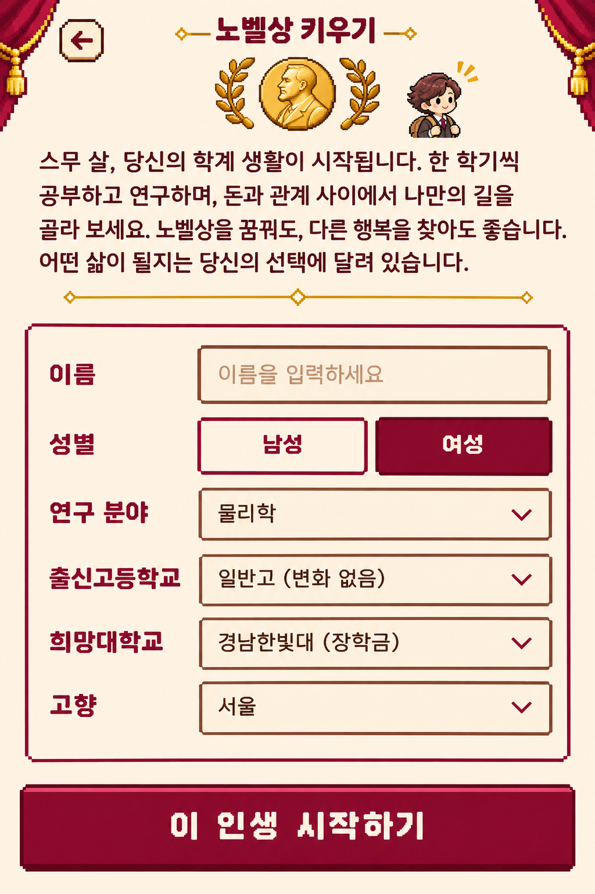
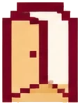

<!doctype html>
<meta charset="utf-8">
<meta name="viewport" content="width=device-width,initial-scale=1,viewport-fit=cover">
<title>노벨상 키우기</title>
<meta name="claude:viewport-fit-sides" content="cover">
<link rel="stylesheet" href="https://cdn.jsdelivr.net/gh/orioncactus/pretendard@v1.3.9/dist/web/variable/pretendardvariable-dynamic-subset.min.css">
<style>
/* 레이아웃: 한 손 세로 화면. 에셋 폴더의 도트 시안(크림 바탕, 버건디, 금색)을 따른다. 그림은 시안에서 잘라 쓰고 버튼과 틀은 CSS로 그린다. */
:root{
  --bg:#fdeedb; --surface:#fff3e1; --ink:#4a1a14; --muted:#8c5139; --line:#c9a184;
  --accent:#8b0a2b; --accent-ink:#fdf3e0; --edge:#63061c; --hi:#e84e74; --gold:#b4730d;
  --good:#1c7448; --bad:#b3261e; --bar:#8b0a2b;
  --font:"Pretendard Variable",Pretendard,-apple-system,"Apple SD Gothic Neo","Malgun Gothic",sans-serif; /* 글자는 일반 폰트, 도트는 그림(에셋)에만 쓴다 */
}
html,body{height:100%;margin:0}
body{background:var(--bg);color:var(--ink);font-family:var(--font);font-size:15px;line-height:1.6;
  padding-left:max(16px,env(safe-area-inset-left,0px));padding-right:max(16px,env(safe-area-inset-right,0px))}
*{box-sizing:border-box}
button{font:inherit;color:inherit;cursor:pointer;border:0;background:none;padding:0}
button:focus-visible,input:focus-visible,select:focus-visible{outline:3px solid var(--gold);outline-offset:4px}
#app{max-width:440px;margin:0 auto;height:100%;display:flex;flex-direction:column;gap:14px;padding-block:14px}
/* 넓은 화면에서는 휴대폰 틀 안에 띄운다. 선택 모달은 #app 밖의 dialog로 화면 중앙에 연다. */
@media (min-width:520px) and (min-height:600px){
  body{background:#e6d8c6;padding:0;display:grid;place-items:center}
  #app{width:430px;max-width:none;height:min(900px,calc(100vh - 48px));margin:0;padding:14px 16px;overflow:hidden;
    background:var(--bg);border-radius:28px;transform:translateZ(0);box-shadow:0 0 0 1px rgba(74,26,20,.08),0 24px 60px rgba(74,26,20,.22)}
}
.scroll{flex:1;min-height:0;overflow-y:auto;display:flex;flex-direction:column;gap:14px;padding:3px}
h1{font-weight:700;font-size:32px;line-height:1.25;margin:0;color:var(--accent);text-wrap:balance}
h2{font-weight:700;font-size:19px;margin:0;color:var(--accent);text-wrap:balance}
.label{font-size:12px;color:var(--muted);letter-spacing:.06em}
.muted{color:var(--muted)}
.num{font-variant-numeric:tabular-nums}
/* 도트 테두리: 네 변에만 그림자를 주면 모서리가 한 칸 비어 계단처럼 보인다 */
.panel,.slot,.btn,.pick button,input[type=text],select{border:0;border-radius:0;
  box-shadow:0 -3px 0 var(--e),0 3px 0 var(--e),-3px 0 0 var(--e),3px 0 0 var(--e);--e:var(--line)}
.panel{background:var(--surface);padding:14px;display:flex;flex-direction:column;gap:10px}
.frame{--e:var(--accent)}
.cover{border-top:3px solid var(--accent);border-bottom:3px solid var(--line);padding:10px 0 12px;display:flex;flex-direction:column;gap:2px}
.row{display:flex;gap:14px;align-items:center}
.row>*{min-width:0}
.grow{flex:1}
.meter{height:10px;background:var(--line);overflow:hidden}
.meter>i{display:block;height:100%;background:var(--bar)}
.stats{display:grid;grid-template-columns:repeat(4,1fr);gap:8px;text-align:center}
.stats b{display:block;font-size:20px;font-weight:700}
.slots{display:grid;grid-template-columns:1fr 1fr;gap:12px;padding:3px}
.slot{padding:10px 12px;text-align:left;min-height:58px;background:var(--bg)}
.slot small{display:block;color:var(--muted);font-size:12px}
.slot.locked{cursor:default;background:transparent;color:var(--muted)}
.btn{display:block;width:100%;padding:13px;background:var(--accent);color:var(--accent-ink);font-weight:700;font-size:17px;text-align:center;
  box-shadow:0 -3px 0 var(--edge),0 3px 0 var(--edge),-3px 0 0 var(--edge),3px 0 0 var(--edge),inset 0 3px 0 var(--hi),inset 0 -3px 0 var(--edge)}
.btn.ghost{background:var(--surface);color:var(--accent);--e:var(--accent);box-shadow:0 -3px 0 var(--e),0 3px 0 var(--e),-3px 0 0 var(--e),3px 0 0 var(--e)}
.btn.big{font-size:22px;padding:15px;letter-spacing:.08em}
.btn:disabled{opacity:.4;cursor:default}
.btn:not(:disabled):active{transform:translateY(2px)}
.tabs{display:grid;grid-template-columns:repeat(4,1fr);border-top:3px solid var(--line)}
.tabs button{padding:12px 4px;color:var(--muted)}
.tabs button.on{color:var(--accent);font-weight:700;box-shadow:inset 0 3px 0 var(--accent)}
/* 선택 모달: 430px 게임 프레임 안에 좌우 16px 여백을 두고 맞춘다. 좁은 화면에서는 본문 너비 안에서 줄어든다. */
.decision-modal{--dm-bg:#f7faf8;--dm-ink:#152830;--dm-muted:#52666d;--dm-line:#c6d3cf;--dm-choice:#eaf0ed;
  position:fixed;inset:0;margin:auto;padding:0;width:calc(100% - 48px);max-width:398px;
  max-height:calc(100vh - 32px);max-height:calc(100dvh - 32px);overflow-y:auto;overscroll-behavior:contain;
  border:1px solid var(--dm-line);border-radius:4px;background:var(--dm-bg);color:var(--dm-ink);
  box-shadow:0 18px 64px rgba(15,30,34,.22);font:14px/1.7 -apple-system,BlinkMacSystemFont,"Segoe UI","Apple SD Gothic Neo","Malgun Gothic",sans-serif;
  text-align:left;scrollbar-width:thin;color-scheme:light}
.decision-modal::backdrop{background:rgba(23,39,42,.58)}
.decision-modal:not([open]){display:none}
.decision-head{display:flex;align-items:center;justify-content:space-between;flex-wrap:wrap;gap:6px 16px;
  min-height:46px;padding:10px 14px;border-bottom:1px solid var(--dm-line)}
.decision-eyebrow{font-size:12px;font-weight:500;color:#9a2443;letter-spacing:.04em}
.decision-meta{font-size:12px;color:var(--dm-muted);font-variant-numeric:tabular-nums}
.decision-content{padding:14px}
.decision-title{margin:0 0 6px;color:var(--dm-ink);font-size:22px;line-height:1.4;letter-spacing:-.035em;
  font-weight:750;overflow-wrap:anywhere;text-wrap:pretty}
.decision-title:focus{outline:none}
.decision-description{margin:0 0 12px;color:var(--dm-muted);font-size:14px;line-height:1.7;overflow-wrap:anywhere}
.decision-note{margin:0 0 12px;padding:8px 10px;background:#dfeeea;color:#455f66;font-size:12px;line-height:1.65;overflow-wrap:anywhere}
.decision-note b{font-weight:650}
.decision-options{display:flex;flex-direction:column;gap:8px}
.decision-option{display:grid;grid-template-columns:20px minmax(0,1fr);align-items:center;gap:10px;
  width:100%;min-height:48px;padding:10px 12px;border:1px solid var(--dm-line);border-radius:2px;
  background:var(--dm-choice);color:var(--dm-ink);text-align:left;font:inherit;line-height:1.65;
  transition:background-color .14s,border-color .14s,box-shadow .14s}
.decision-number{align-self:start;padding-top:2px;color:var(--dm-muted);font-size:12px;font-weight:400;font-variant-numeric:tabular-nums}
.decision-option-main{display:flex;align-items:center;justify-content:space-between;flex-wrap:wrap;gap:7px 12px;min-width:0}
.decision-option-text{flex:1 1 160px;min-width:0;font-weight:650;overflow-wrap:anywhere}
.decision-tradeoff{display:block;margin-top:5px;color:var(--dm-muted);font-size:12px;line-height:1.6;font-weight:400}
.decision-tag{flex:none;max-width:100%;padding:1px 7px;border:1px solid #b9c9c3;border-radius:2px;
  color:#476158;font-size:11px;font-weight:500;line-height:1.65;overflow-wrap:anywhere}
.decision-tag.is-good{border-color:#9fbfaf;background:#e2eee6;color:#236146}
.decision-tag.is-risk{border-color:#d7b3a8;background:#f6e9e2;color:#8b3b28}
.decision-option:disabled{background:#f1f4f2;border-style:dashed;color:#6a7976;cursor:not-allowed}
.decision-option:disabled .decision-tag{border-color:#c6ceca;background:transparent;color:#64726d}
.decision-option.is-danger .decision-option-text{color:#923c43}
.decision-option:focus-visible,.decision-confirm:focus-visible{outline:3px solid #8b0a2b;outline-offset:3px}
@media(hover:hover){.decision-option:not(:disabled):hover{background:#dde8e3;border-color:#8da59b;box-shadow:0 0 0 1px #8da59b}}
.decision-option:not(:disabled):active{background:#d5e2dc}
.decision-confirm{width:100%;min-height:46px;padding:10px 16px;border:1px solid #243e45;border-radius:3px;
  background:#243e45;color:#fff;font:inherit;font-weight:650;transition:background-color .14s}
.decision-confirm:hover{background:#172e35}
.decision-foot{margin:10px 0 0;text-align:center;color:#62746f;font-size:12px;line-height:1.6}
.decision-outcome{display:flex;align-items:center;gap:12px;margin:0 0 14px;padding:10px 12px;background:#edf1e8}
.decision-outcome img{width:42px;height:42px;object-fit:contain;image-rendering:pixelated}
.decision-outcome strong{font-size:14px;font-weight:650;color:#67531e}
@media(min-width:520px) and (min-height:600px){
  /* #app의 높이 min(900px,100vh - 48px)에서 위아래 16px씩 남긴다. */
  .decision-modal{max-height:min(868px,calc(100vh - 80px));max-height:min(868px,calc(100dvh - 80px))}
}
@media(max-width:480px){
  .decision-head{gap:4px 12px}.decision-title{font-size:20px}
}
@media(prefers-reduced-motion:no-preference){
  .decision-modal[open]{animation:decision-in .18s ease-out}
  .decision-modal[open]::backdrop{animation:decision-backdrop .18s ease-out}
  @keyframes decision-in{from{opacity:0;transform:translateY(8px) scale(.99)}to{opacity:1;transform:none}}
  @keyframes decision-backdrop{from{background:rgba(23,39,42,0)}to{background:rgba(23,39,42,.58)}}
}
@media(prefers-reduced-motion:reduce){.decision-option,.decision-confirm{transition:none}}
.tag{flex:none;font-size:12px;padding:2px 8px;border:2px solid var(--line);color:var(--muted);white-space:nowrap}
.tag.risk{color:var(--bad);border-color:var(--bad)}
.stamp{align-self:flex-start;font-weight:700;font-size:20px;color:var(--accent);border:3px solid var(--accent);padding:2px 12px;transform:rotate(-4deg);letter-spacing:.1em}
.list{display:flex;flex-direction:column;gap:6px;margin:0;padding:0;list-style:none}
.list li{display:flex;justify-content:space-between;gap:10px;border-bottom:2px solid var(--line);padding-bottom:6px}
.list li span:first-child{min-width:0}
input[type=text],select{font:inherit;color:inherit;width:100%;padding:11px 12px;background:var(--bg);--e:var(--muted);appearance:none;-webkit-appearance:none}
input::placeholder{color:var(--line)}
select{padding-right:36px;background:var(--bg) url("data:image/svg+xml,%3Csvg xmlns='http://www.w3.org/2000/svg' width='16' height='10'%3E%3Cpath d='M1 1l7 7 7-7' fill='none' stroke='%238b0a2b' stroke-width='3'/%3E%3C/svg%3E") no-repeat right 12px center}
.pick{display:grid;grid-template-columns:repeat(2,1fr);gap:12px}
.pick button{padding:11px;background:var(--surface);color:var(--accent);font-weight:700;--e:var(--accent)}
.pick button.on{background:var(--accent);color:var(--accent-ink);--e:var(--edge)}
/* 시안에서 잘라 온 그림. 화면 가장자리까지 채운다. */
.stage,.head{margin:-14px -16px 0;position:relative}
.stage{flex:1;min-height:0;max-height:calc(min(100vw,472px)*1.2944)}
.stage img{display:block;width:100%;height:100%;object-fit:contain;object-position:center bottom}
.head img{display:block;width:100%}
/* 게임 안 그림: 시안에서 잘라 온 조각. 도트가 뭉개지지 않게 확대만 하고 보간하지 않는다. */
.medal{display:block;width:150px;align-self:center}
.scene{display:block;width:100%;flex:none;height:min(240px,30vh);object-fit:cover;object-position:center 30%;--e:var(--accent);box-shadow:0 -3px 0 var(--e),0 3px 0 var(--e),-3px 0 0 var(--e),3px 0 0 var(--e)}
.medal,.scene,.view{image-rendering:pixelated}
.card{background:var(--surface);padding:14px;display:flex;flex-direction:column;gap:10px;margin:3px;
  box-shadow:0 -3px 0 var(--accent),0 3px 0 var(--accent),-3px 0 0 var(--accent),3px 0 0 var(--accent),inset 0 0 0 4px var(--surface),inset 0 0 0 6px #e3b9b1}
.chip{font-size:13px;font-weight:700;color:var(--accent);background:var(--bg);padding:1px 12px;text-align:center;white-space:nowrap;
  box-shadow:0 -2px 0 var(--muted),0 2px 0 var(--muted),-2px 0 0 var(--muted),2px 0 0 var(--muted)}
.chip.pill{font-size:15px;padding:4px 14px;min-width:4.5em}
.rule{align-self:stretch;height:2px;background:var(--gold);position:relative;margin:4px 6px}
.rule::before,.rule::after{content:"";position:absolute;top:-3px;width:6px;height:6px;background:var(--surface);border:2px solid var(--gold);transform:rotate(45deg)}
.rule::before{left:-6px}.rule::after{right:-6px}
/* 학기 진행·결산 화면: 2026-11-13 시안. 머리띠는 고정이고 그 아래 카드들이 통째로 스크롤된다. */
.top{background:var(--accent);color:var(--accent-ink);padding:8px 12px 10px;margin:3px;display:flex;flex-direction:column;gap:8px;
  box-shadow:0 -3px 0 var(--edge),0 3px 0 var(--edge),-3px 0 0 var(--edge),3px 0 0 var(--edge),inset 0 3px 0 #a3203f}
.trow{display:grid;grid-template-columns:auto 1fr auto 1fr;align-items:center}
.trow .homebtn{width:36px;height:36px;padding:0;background:var(--accent-ink);color:var(--accent);display:grid;place-items:center;
  box-shadow:0 -2px 0 var(--edge),0 2px 0 var(--edge),-2px 0 0 var(--edge),2px 0 0 var(--edge)}
.homebtn svg{width:22px;height:22px}
.trow>*{min-width:0;padding:0 12px}
.trow>span:first-of-type{font-size:14px;font-weight:700;line-height:1.3;word-break:keep-all;padding-right:8px}
.trow .who{font-size:24px;line-height:1.3;max-width:7em;white-space:nowrap;overflow:hidden;text-overflow:ellipsis;border-inline:2px solid rgba(253,243,224,.7)}
.trow .ovr{padding-right:0;text-align:right;font-size:13px;font-weight:700;white-space:nowrap}
.trow .ovr b{font-size:28px;line-height:1;margin-left:6px}
.tprog{display:grid;grid-template-columns:minmax(0,1fr) auto auto;gap:10px;align-items:end}
.tprog small{display:block;font-size:14px;font-weight:700;white-space:nowrap}
.tprog .meter{margin:4px 2px 2px;background:#a3203f;box-shadow:0 0 0 2px var(--accent-ink)}
.tprog .meter>i{background:#f0ad45}
.tbtn{display:flex;align-items:center;gap:6px;padding:6px 10px;background:var(--accent-ink);color:var(--accent);font-weight:700;font-size:14px;white-space:nowrap;
  box-shadow:0 -2px 0 var(--edge),0 2px 0 var(--edge),-2px 0 0 var(--edge),2px 0 0 var(--edge)}
.tbtn.on{background:#f0ad45}
.tbtn:disabled{opacity:.5;cursor:default}
.view{display:block;width:100%;height:auto}
.pg{padding:8px 10px;gap:6px}
.pg .view{height:84px;object-fit:cover;object-position:center 70%}
.kv2{display:grid;grid-template-columns:1fr 1fr;column-gap:14px}
.kv{display:flex;flex-wrap:wrap;align-items:center;justify-content:space-between;gap:2px 8px;padding:7px 0;border-bottom:2px solid #ead9c4}
.kv b{font-size:16px;white-space:nowrap}
.kv.wide{grid-column:1/-1;border:0;justify-content:flex-start;gap:2px 14px}
.card.sg{flex-direction:row;align-items:center;gap:8px;padding:8px 8px}
.sgs{flex:1;min-width:0;display:grid;grid-template-columns:repeat(5,1fr)}
.sgs>div{padding:0 4px;min-width:0;display:flex;flex-direction:column;gap:3px}
.sgs>div+div{border-left:1px solid var(--line)}
.sg p{display:flex;flex-direction:column;line-height:1.15}
.sg p span{font-size:11px;font-weight:700;color:var(--muted);white-space:nowrap}
.sg p b{font-size:16px;line-height:1.2}
.sg .meter{height:4px;display:flex}
.sg .meter i.gu{background:#ffc83d;box-shadow:0 0 0 1px #b4730d}
.sg .meter i.gd{background:repeating-linear-gradient(135deg,#c9372c 0 2px,#f3b4ae 2px 4px)}
.sg p span em{font-style:normal;font-size:11px;margin-left:2px}
@media (prefers-reduced-motion:no-preference){
  .sgs>div.pop em{animation:dltRise .9s ease-out}
  .sgs>div.gu .meter i.gu{animation:gainPulse .9s ease-out}
}
@keyframes dltRise{0%{opacity:0;transform:translateY(6px)}25%{opacity:1}100%{opacity:1;transform:none}}
@keyframes gainPulse{0%,40%{filter:brightness(1.8)}100%{filter:none}}
/* 진행바 줄: 헤더 밖. 진행 막대 + 일시정지·배속 */
.pbar{display:flex;align-items:center;gap:8px;margin:0 3px;flex:none}
.pbar .pt{flex:1;min-width:0}
.pbar small{display:block;font-size:12px;font-weight:700;color:var(--muted);margin-bottom:3px}
.pbar .meter{height:8px;background:var(--line)}.pbar .meter>i{background:#f0ad45}
.pc{display:flex;gap:4px}
.pbar .tbtn{padding:5px 7px;min-width:30px;justify-content:center;font-size:12px;background:var(--surface);box-shadow:inset 0 0 0 1px var(--line)}
.pbar .tbtn.on{background:var(--accent);color:var(--accent-ink)}
.pbar .tbtn.go{padding:6px 14px;font-size:14px;background:var(--accent);color:var(--accent-ink)}
.idl{display:flex;align-items:baseline;gap:8px;margin:0;padding:0 2px;font-size:15px}
.idl b{font-size:15px;white-space:nowrap;overflow:hidden;text-overflow:ellipsis;min-width:0}
.idl i{font-style:normal;color:var(--muted)}
.book{gap:6px}
.book>header{display:flex;justify-content:space-between;align-items:center;gap:8px}
.book .recl{display:flex;flex-direction:column}
.book .rec{display:grid;grid-template-columns:auto 1fr;gap:8px;align-items:baseline;padding:6px 2px;border-bottom:1px dotted var(--line);background:none}
.book .rec>span{min-width:2.6em;padding:0 5px;font-size:12px;line-height:1.6}
.book .rec>p{margin:0;font-size:14px;line-height:1.4;font-weight:600;word-break:keep-all}
.book .rec>p small{font-size:12px;color:var(--muted);font-weight:400}
.book .rec em.dd{font-style:normal;font-size:12px;white-space:nowrap}
.book .recn{text-align:center;padding:10px 0;margin:0}
.book .more{align-self:center;padding:4px 8px}
.book .focbox{margin:2px 0 6px}
.book .ctl{flex-direction:row;gap:6px}
.mny{display:flex;justify-content:space-between;gap:6px;margin:0;padding:5px 2px 0;border-top:1px dotted var(--line)}
.mny span{display:flex;align-items:baseline;gap:4px;min-width:0}
.mny small{font-size:11px;color:var(--muted)}
.mny b{font-size:13px;white-space:nowrap}
.book>header h2{font-size:22px}
.rec{display:grid;grid-template-columns:auto 1fr;gap:12px;align-items:center;padding:10px 8px;border-bottom:2px solid #ead9c4}
.rec>span{min-width:3.4em;padding:2px 6px;background:#fbe3c0;color:var(--accent);font-weight:700;text-align:center}
.rec>div{border-left:2px solid var(--line);padding-left:12px}
.rec b{font-weight:700}
.rec small{display:block;font-size:12px;color:var(--muted)}
.ttl{display:flex;flex-direction:column;gap:2px;text-align:center}
.ttl h1{font-size:min(30px,7.6vw)}
.sec{display:flex;align-items:baseline;gap:12px}
.sec h2{font-size:24px;white-space:nowrap}
.sec span{border-left:2px solid var(--muted);padding-left:12px;color:var(--muted);font-size:14px}
.hl{display:grid;grid-template-columns:64px 1fr;gap:14px;align-items:center;background:#fdecc4;padding:12px 14px}
.hl>div{border-left:2px solid var(--line);padding-left:14px;display:flex;flex-direction:column;gap:2px;min-width:0}
.hl p{display:flex;flex-wrap:wrap;align-items:center;gap:4px 12px}
.hl b{font-size:min(28px,7vw);line-height:1.25;color:var(--accent);white-space:nowrap}
.hl b.s{font-size:min(20px,5.2vw)}
.hl small{font-size:14px;color:var(--muted)}
.res,.per{display:grid;grid-template-columns:44px 1fr auto;gap:12px;align-items:center;padding:10px 4px;border-bottom:2px solid #ead9c4}
.res>div,.per>div:nth-child(2){border-left:2px solid var(--line);padding-left:12px;min-width:0}
.res b,.per p b{font-size:17px;color:var(--accent)}
.res b{display:block}
.res small,.per small{display:block;font-size:13px;line-height:1.45;color:var(--muted)}
.per{grid-template-columns:64px 1fr auto}
.fav{display:flex;flex-direction:column;align-items:center;gap:2px}
.fav b{font-size:28px;line-height:1.1;color:var(--good)}
.fav b small{font-size:13px;color:var(--muted)}
.fav em{font-style:normal;font-weight:700;font-size:14px}
.tag.new{color:var(--accent);border-color:var(--accent);margin-right:4px}
.endbox{gap:14px;padding:16px}
/* 학기 전략(2026-11-17): 슬롯 막대 · 수강 학점 · 행동 목록(이 상자만 스크롤) · 시작 버튼 */
.st-top{flex-direction:row;align-items:center}.st-top h1{flex:1;text-align:center;font-size:22px;color:var(--accent-ink);padding-right:36px}
.strat{flex:1;min-height:0;display:flex;flex-direction:column;gap:8px;padding:10px 12px}
.slb{display:flex;gap:1px;height:14px;padding:1px;background:var(--line)}.slb i{flex:1;background:var(--surface)}.slb i.c{background:var(--accent)}.slb i.a{background:#f0ad45}
.sl{display:flex;justify-content:space-between;align-items:baseline;gap:8px;font-size:14px}.sl small{font-size:12px;color:var(--muted);white-space:nowrap}@media(max-width:380px){.sl small{display:none}}
.cr{display:flex;align-items:center;gap:8px;padding:6px 0;border-block:1px solid #ead9c4;font-size:14px;font-weight:700}
.cr button{width:32px;height:32px;box-shadow:0 0 0 1px var(--accent);color:var(--accent);font-size:18px;background:var(--bg)}.cr button:disabled{opacity:.4;cursor:default}
.cr b{min-width:44px;text-align:center;font-size:16px;box-shadow:0 0 0 1px var(--line);background:var(--bg)}
.cr small{margin-left:auto;font-size:12px;color:var(--muted);font-weight:400}
.sah{display:flex;justify-content:space-between;align-items:center}.sah small{font-size:12px;color:var(--muted)}
.sal{flex:1;min-height:0;overflow-y:auto;border-top:1px solid var(--line)}
.sa{display:grid;grid-template-columns:28px 1fr 22px;gap:10px;align-items:center;width:100%;padding:6px;border-bottom:1px dotted var(--line);text-align:left}
.sa.on{background:#fdecc4}.sa:disabled{opacity:.45;cursor:default}
.sa .ico{width:28px;height:28px;object-fit:contain;image-rendering:pixelated}
.sa b{display:block;font-size:15px}.sa b em{font-style:normal;color:var(--accent);margin-left:4px;font-size:14px}.sa small{display:block;font-size:12px;line-height:1.4;color:var(--muted)}
.sa .ck{width:22px;height:22px;display:grid;place-items:center;font-style:normal;font-weight:700;color:var(--accent-ink);box-shadow:0 0 0 2px var(--accent)}
.sa.on .ck{background:var(--accent)}.sa:disabled .ck{box-shadow:none;color:var(--muted)}
.endbox .row{gap:14px}
.endbox .row .btn{font-size:min(17px,4.1vw);padding-inline:4px;white-space:nowrap}
.endbox .btn img{display:inline-block;height:1.4em;width:auto;vertical-align:-.3em;margin-right:8px;image-rendering:pixelated}
.up{color:var(--good)}.down{color:var(--bad)}
/* 다음 학기 계획 화면 */
.fold{padding:8px 14px}
.fold summary em{font-style:normal;font-size:14px;font-weight:400;color:var(--muted);white-space:nowrap}
/* 숫자 위주 재정·투자 (2026-11-16): 큰 숫자 요약 → 점선 줄 */
.fx{padding:6px 2px 4px}
.fxg{display:grid;grid-template-columns:1fr 1fr;gap:14px 16px;padding:8px 4px 12px}
.fxg>div{display:flex;flex-direction:column;min-width:0}
.fxg span{font-size:13px;color:var(--muted)}
.fxg b{font-size:clamp(20px,6vw,26px);line-height:1.25;white-space:nowrap}
.fxg small{font-size:13px;color:var(--muted);word-break:keep-all}
.fx h4{display:flex;align-items:baseline;gap:8px;margin:14px 4px 4px;padding-top:12px;border-top:2px solid #ead9c4;font-size:16px}
.fx h4 small{font-size:12px;font-weight:400;color:var(--muted)}
.fxl{list-style:none;margin:0;padding:0 4px}
.fxl li{display:flex;justify-content:space-between;gap:10px;padding:6px 0;font-size:15px;border-bottom:1px dotted var(--line)}
.fxl li b{white-space:nowrap}
.fxn{text-align:left!important;font-size:14px}
.xr{display:grid;grid-template-columns:1fr auto 1.4em;align-items:center;gap:10px;width:100%;text-align:left;padding:9px 6px;border-bottom:1px solid #ead9c4}
.xr>span{display:flex;flex-direction:column;min-width:0}
.xr>span b{font-size:16px}
.xr>span small{font-size:12px;color:var(--muted);line-height:1.4;word-break:keep-all}
.xr>em{font-style:normal;font-size:14px;white-space:nowrap;text-align:right}
.xr>i{font-style:normal;font-weight:700;color:var(--accent);text-align:center;width:1.4em;height:1.4em;line-height:1.3em;border:2px solid #d9a9a9}
.xr.on{background:#fdecc4}.xr.on>i{border-color:var(--accent)}.xr.on>span b{color:var(--accent)}
.xr:disabled{opacity:.45;cursor:default}
/* 관계 결산: 왼쪽 사이, 오른쪽 이름과 한 줄 */
.lv{list-style:none;margin:0;padding:6px 4px 2px}
.lv li{display:grid;grid-template-columns:5em 1fr;gap:10px;padding:7px 0;border-bottom:1px dotted var(--line)}
.lv li>span{color:var(--muted);font-size:14px}
.lv li>div{text-align:right;min-width:0}
.lv b{font-size:15px}.lv em{font-style:normal}
.lv small{display:block;font-size:13px;color:var(--muted)}
.lnks{justify-content:center;gap:20px;padding:2px 0 6px}
.lnk{font-size:14px;color:var(--muted);text-decoration:underline}
.fold summary{list-style:none;display:flex;align-items:center;gap:12px;cursor:pointer;font-size:20px;font-weight:700;color:var(--accent)}
.fold summary::-webkit-details-marker{display:none}
.fold summary::before{content:"▶";font-size:16px}
.fold[open] summary::before{content:"▼"}
.fold summary .rule{flex:1;align-self:center}
.fold p{padding:10px 3px 4px;text-align:center}
.rtabs{display:grid;grid-template-columns:1.2fr 1fr 1fr;gap:10px;padding:12px 6px}
.rtabs button{padding:5px 0;border:2px solid #d9a9a9;background:#f6e1d4;color:var(--accent);font-weight:700}
.rtabs button.on{background:var(--accent);border-color:var(--accent);color:var(--accent-ink)}
.fold .hint{padding:6px 10px;font-size:13px;line-height:1.5;margin-bottom:6px}
.fold .hint small{color:var(--muted)}
.rp{display:grid;grid-template-columns:minmax(0,1fr) minmax(0,1fr);gap:8px;align-items:center;padding:10px 4px;border-top:2px solid #ead9c4}
.rp.done{background:#fbe1e1}
.rpi{display:grid;grid-template-columns:40px 1fr;gap:4px 8px;align-items:center;border-right:2px solid var(--line);padding-right:8px}
.rpi b{display:block;font-size:17px;line-height:1.2;color:var(--accent);white-space:nowrap}
.rpi small{display:block;font-size:12px;line-height:1.4;font-weight:700;color:var(--muted);white-space:nowrap}
.hb{grid-column:1/-1;display:grid;grid-template-columns:16px 1fr;gap:6px;align-items:center}
.rag{display:grid;grid-template-columns:repeat(3,minmax(0,1fr));gap:4px}
.ra{display:flex;flex-direction:column;align-items:center;justify-content:center;gap:1px;padding:5px 0 3px;min-width:0;border:2px solid #d9b8a8;background:var(--surface);color:var(--accent);font-weight:700;font-size:12px;line-height:1.2;white-space:nowrap}
.ra .ico{width:18px;flex:none}
.ra:disabled{opacity:.35;cursor:default}
/* 인게임 화면의 초점 칩·선택 버튼과 선택 시트 (2026-11-16) */
.ctl{display:flex;flex-direction:column;gap:4px;flex:none}
.ctl button{display:flex;align-items:baseline;justify-content:center;gap:4px;padding:3px 10px;background:var(--bg);color:var(--accent);font-weight:700;line-height:1.3;white-space:nowrap;
  box-shadow:0 0 0 1px var(--accent)}
.ctl small{font-size:11px;color:var(--muted)}.ctl b{font-size:13px}.ctl i{font-style:normal;font-size:10px}
.ctl button.on{background:#fdecc4}
.focbox{padding:8px 10px}.focbox .hint{font-size:13px;padding:6px 10px}
.sheet-bg{position:fixed;inset:0;z-index:5;background:rgba(74,26,20,.55)}
.sheet{position:fixed;z-index:6;left:0;right:0;top:64px;bottom:0;max-width:440px;margin:0 auto;display:flex;flex-direction:column;background:var(--surface);border-top:3px solid var(--accent)}
.sheet>header{display:flex;align-items:center;gap:6px;padding:0 12px 0 6px;border-bottom:2px solid #ead9c4}
.sheet>header .rtabs{flex:1}
.sheet>header>button{padding:6px 4px;color:var(--accent);font-weight:700;white-space:nowrap}
.sheet-body{flex:1;min-height:0;overflow-y:auto;padding:10px 12px 24px}
.sheet-body .hint{padding:6px 10px;font-size:13px;line-height:1.5;margin:10px 0 6px}.sheet-body .hint small{color:var(--muted)}
.sheet-note{margin:0 0 8px;font-size:13px;color:var(--muted);text-align:center}
.tplan{display:grid;grid-template-columns:1fr 1.4fr;align-items:center;border-top:2px solid rgba(253,243,224,.7);padding-top:8px;font-weight:700;text-align:center}
.tplan span{border-right:2px solid rgba(253,243,224,.7)}
.tplan b{margin-left:14px;background:var(--accent-ink);color:var(--accent);padding:2px 0}
.sub.big span{font-size:min(22px,5.6vw);font-weight:700;color:var(--accent)}
.grp{display:grid;grid-template-columns:40px auto 1fr;gap:10px;align-items:center;margin-top:8px}
.grp h3{margin:0;font-size:22px;color:var(--accent);padding-right:4px}
.grp p{display:flex;flex-wrap:wrap;align-items:baseline;gap:0 14px;padding:5px 14px;background:#fdecc4;font-weight:700;color:var(--muted);border-left:2px solid var(--line)}
.grp p b{font-size:20px;color:var(--accent)}
.recs{margin:0}
.recs>div{display:grid;grid-template-columns:2fr 3fr;gap:8px;padding:5px 0 5px 22px;border-bottom:2px solid #ead9c4;font-weight:700}
.recs dt{color:var(--muted)}
.recs dd{margin:0;color:var(--accent)}
.pp{display:grid;grid-template-columns:40px minmax(3.6em,1fr) 1fr auto;gap:10px;align-items:center;padding:5px 4px;border-bottom:2px solid #ead9c4;font-weight:700}
.pp>b{color:var(--accent);font-size:17px;white-space:nowrap}
.pp span{border-left:2px solid var(--line);padding-left:10px;color:var(--muted);white-space:nowrap}
.pp span b{font-size:18px;color:var(--accent)}
.fin{display:grid;grid-template-columns:1fr 1fr;column-gap:14px}
.fin>div{display:flex;flex-wrap:wrap;justify-content:space-between;align-items:baseline;gap:0 8px;padding:7px 2px;border-top:2px solid #ead9c4;font-weight:700}
.fin span{font-size:14px;color:var(--muted)}
.fin b{font-size:18px;color:var(--accent);white-space:nowrap}
.hint{padding:8px 12px;background:#fdecc4;color:var(--accent);font-weight:700;text-align:center}
.fo{display:grid;grid-template-columns:40px 1fr auto 3.2em;gap:10px;word-break:keep-all;align-items:center;width:100%;text-align:left;padding:10px 6px 10px 12px;border-bottom:2px solid #ead9c4}
.fo.ug{grid-template-columns:40px 1fr 3.2em}
.fo.ug .fn small{font-size:13px;line-height:1.4}
.fo:disabled{opacity:.45;cursor:default}
.fo.on{background:#fdecc4;box-shadow:inset 6px 0 0 var(--accent),inset 0 0 0 2px #e3b9b1}
.fn,.fc{border-left:2px solid var(--line);padding-left:10px}
.fn b{display:block;font-size:20px;line-height:1.3;color:var(--accent)}
.fn small{display:block;font-size:14px;color:var(--muted)}
.fc{font-weight:700;color:var(--muted);white-space:nowrap}
.fc b{font-size:22px;color:var(--accent)}
.fr{display:flex;flex-direction:column;align-items:center;justify-content:center;gap:2px;font-size:11px;font-weight:700;color:var(--accent);white-space:nowrap}
.fr i{flex:none;width:26px;height:26px;border:3px solid var(--muted);border-radius:50%;display:grid;place-items:center;font-style:normal;color:var(--accent-ink)}
.fo.on .fr i{background:var(--accent);border-color:var(--accent)}
.fo.on .fr i::after{content:"✓"}
.rec.new{animation:recIn .5s ease-out}
@keyframes recIn{from{opacity:0;transform:translateY(-10px);background:#f6cf7c}to{opacity:1;transform:none}}
@media (prefers-reduced-motion:reduce){.rec.new{animation:none}}
.sub{display:grid;grid-template-columns:1fr auto 1fr;align-items:center;gap:10px;color:var(--muted);font-size:14px}
.ico{display:block;width:100%;height:auto;image-rendering:pixelated}
.back{position:absolute;left:10%;top:6%;width:9.5%;height:19%}
.form{gap:18px;padding:20px 14px}
.field{display:grid;grid-template-columns:7em 1fr;align-items:center;gap:12px}
.field>:first-child{white-space:nowrap;font-weight:700;font-size:17px;color:var(--accent)}
p{margin:0}
/* 새 인생 프롤로그: 배경 설명을 목록 대신 문단으로 천천히 읽는다. */
.prologue{flex:1;min-height:0;display:flex;flex-direction:column;gap:18px;padding:10px 6px 4px}
.prologue-top{display:flex;align-items:center;justify-content:space-between;gap:12px;color:var(--muted);font-size:12px}
.prologue-title{padding:12px 0 18px;border-bottom:2px solid var(--line)}
.prologue-title h1{font-size:27px;margin-top:8px;text-wrap:pretty}
.prologue .scroll{padding:4px 8px 24px 2px;gap:22px;scrollbar-width:thin;scrollbar-color:var(--line) transparent}
.story-paragraph{font-size:17px;line-height:2;word-break:keep-all;overflow-wrap:anywhere;letter-spacing:-.025em}
.story-paragraph[hidden]{display:none}
.story-paragraph.current::after{content:'';display:inline-block;width:7px;height:17px;margin-left:5px;vertical-align:-2px;background:var(--accent);animation:storyBlink .9s steps(1) infinite}
.story-foot{display:flex;flex-direction:column;gap:12px;padding:8px 3px max(4px,env(safe-area-inset-bottom))}
.story-hint{text-align:center;font-size:12px;color:var(--muted);min-height:20px}
.sr-only{position:absolute;width:1px;height:1px;padding:0;margin:-1px;overflow:hidden;clip-path:inset(50%);white-space:nowrap;border:0}
@keyframes storyBlink{50%{opacity:0}}
@media(prefers-reduced-motion:reduce){.story-paragraph.current::after{animation:none}}
/* 게임 소개는 실제 텍스트로 표시하고, 시안 상단의 장식만 잘라 보여 준다. */
.create-scroll{gap:20px}
.create-intro{display:flex;flex-direction:column;gap:16px;flex:none}
.create-art{position:relative;aspect-ratio:1024/240;overflow:hidden;margin:-3px -3px 0}
.create-art img{display:block;width:100%;height:auto;image-rendering:pixelated}
.create-back{position:absolute;left:9.5%;top:12%;width:8.5%;height:34%;min-width:28px;min-height:28px}
.create-intro p{padding:0 8px;font-size:15px;line-height:1.95;color:var(--ink);word-break:keep-all;overflow-wrap:anywhere}
.create-intro .rule{margin:2px 14px 4px}
/* 재능 선택: 가운데 카드 하나를 크게, 양옆 재능은 뒤로 살짝 보인다. */
.talent{gap:10px}
.trow .tage{font-size:13px}
.thead{text-align:center;display:flex;flex-direction:column;gap:2px}
.thead h1{font-size:min(24px,6.4vw);display:flex;align-items:center;justify-content:center;gap:10px}
.thead h1::before,.thead h1::after{content:'';width:18px;height:26px;flex:none;background:url(에셋/재능-월계수.webp) center/contain no-repeat;image-rendering:pixelated}
.thead h1::after{transform:scaleX(-1)}
.thead p{font-size:14px;font-weight:700;color:var(--ink)}
.tpick{display:grid;grid-template-columns:repeat(3,1fr);gap:10px;padding:3px}
.tpick button{position:relative;display:flex;flex-direction:column;align-items:center;gap:6px;padding:10px 6px 8px;background:var(--surface);
  box-shadow:0 -3px 0 var(--e),0 3px 0 var(--e),-3px 0 0 var(--e),3px 0 0 var(--e);--e:#d9a2a8}
.tpick img{width:100%;height:64px;object-fit:contain;image-rendering:pixelated}
.tpick img.sm{height:48px;margin:8px 0}
.tpick b{font-size:16px;color:var(--accent);font-weight:700;white-space:nowrap}
.tpick button.on{background:#fbe6bd;--e:var(--accent)}
.tpick button.on::before{content:'✓';position:absolute;top:-3px;left:-3px;width:22px;height:22px;display:grid;place-items:center;background:var(--accent);color:var(--accent-ink);font-size:13px;font-weight:700}
.tstat{gap:0;padding:12px 16px 4px}
.tstat header{display:flex;align-items:center;gap:12px;padding-bottom:8px}
.tstat header small{flex:1;min-width:0;padding:3px 8px;background:#fbe6bd;font-size:12px;line-height:1.4;word-break:keep-all}
.tstat h2{font-size:20px;white-space:nowrap}
.tstat .rule{display:block;height:2px;background:var(--gold);margin-bottom:2px}
.tbar{display:grid;grid-template-columns:4.2em 1fr 2.4em;align-items:center;gap:12px;padding:5px 4px;border-bottom:2px solid #ead9c4}
.tbar:last-child{border:0}
.tbar span{font-weight:700;color:var(--accent);font-size:15px}
.tbar .meter{height:14px;background:#ecdcc6;border-radius:7px}
.tbar .meter i{border-radius:7px}
.tbar b{font-size:21px;color:var(--accent);text-align:right}
.boost .tbar{grid-template-columns:4.2em 1fr 4.4em}
.tbar b em{font-style:normal;font-size:13px;margin-left:4px}
.rec small.dd{font-weight:700;font-size:14px}
.rec b{font-size:16px;line-height:1.5}
.now{gap:8px;padding:16px}
.now .chip{align-self:flex-start}
.now p{font-size:19px;line-height:1.6;font-weight:700;word-break:keep-all}
.now small{font-size:15px;color:var(--muted)}
.dchips{display:flex;flex-wrap:wrap;gap:6px}
.dchips span{font-size:15px;font-weight:700;padding:2px 10px;background:#fdecc4}
.tag.good{color:var(--good);border-color:var(--good)}
@media (prefers-reduced-motion:no-preference){.now.pop{animation:recIn .5s ease-out}}
.tsum{display:flex;align-items:center;gap:12px;font-size:13px;color:var(--muted);white-space:nowrap}
.tsum::before,.tsum::after{content:'';flex:1;height:2px;background:var(--gold);opacity:.6}
.exam{gap:12px;padding-top:6px;overflow-x:hidden} /* 공개 애니메이션이 살짝 커질 때 가로 스크롤바가 생기지 않게 */
.eband{display:flex;align-items:center;gap:10px;flex:none}
.eband::before,.eband::after{content:'';flex:1;height:2px;background:var(--gold)}
.eband span{background:var(--accent);color:var(--accent-ink);font-weight:700;font-size:15px;padding:5px 22px;
  box-shadow:0 -3px 0 var(--edge),0 3px 0 var(--edge),-3px 0 0 var(--edge),3px 0 0 var(--edge),inset 0 0 0 2px var(--accent),inset 0 0 0 3px var(--accent-ink)}
.ehead{display:grid;grid-template-columns:auto 1fr;align-items:center;gap:10px;padding:0 4px;flex:none}
.estu{width:80px;height:auto;image-rendering:pixelated}
.ehead>div{display:flex;flex-direction:column;align-items:center;gap:4px}
.ehead h1{font-size:min(30px,7.8vw);white-space:nowrap;display:flex;align-items:center;gap:8px}
.ehead h1::after{content:'';width:18px;height:26px;background:url(에셋/재능-월계수.webp) center/contain no-repeat;transform:scaleX(-1);image-rendering:pixelated}
.ehead .rule{align-self:stretch;margin:0 10px}
.ehead p{font-weight:700;color:var(--muted);font-size:15px}
.elist{list-style:none;margin:0;padding:2px 6px 2px 30px;display:flex;flex-direction:column;gap:12px;position:relative}
.elist::before{content:'';position:absolute;left:9px;top:28px;bottom:28px;width:3px;background:var(--accent)}
.elist li{position:relative;display:grid;grid-template-columns:auto 1fr auto;align-items:center;gap:8px;padding:11px 12px;background:var(--surface);
  box-shadow:0 -3px 0 var(--e),0 3px 0 var(--e),-3px 0 0 var(--e),3px 0 0 var(--e),inset 0 0 0 3px var(--surface),inset 0 0 0 5px #ecd2c8;--e:#d9a2a8}
.elist li::before{content:'';position:absolute;left:-27px;top:50%;width:12px;height:12px;margin-top:-6px;background:var(--surface);box-shadow:0 0 0 3px var(--accent)}
.elist li::after{content:'';position:absolute;left:-12px;top:50%;width:9px;height:3px;margin-top:-1px;background:var(--accent)}
.elist li.on{--e:var(--accent)}
.elist li.on::before{background:var(--accent)}
.elist li.final.on{background:#fbe6bd}
.emon{background:var(--accent);color:var(--accent-ink);font-weight:700;font-size:15px;padding:2px 10px;min-width:3.4em;text-align:center}
.ename{font-weight:700;font-size:17px;white-space:nowrap;text-align:center}
.elist b{font-size:28px;white-space:nowrap;color:var(--accent);border-left:2px solid var(--gold);padding-left:14px;min-width:4em;text-align:right;line-height:1.2}
.elist li:not(.on) b{color:var(--line)}
.elist li:not(.on) .emon{background:var(--line)}
.eprog{display:flex;flex-direction:column;align-items:center;gap:6px;padding:0 20px}
.eprog b{font-size:18px;color:var(--accent)}
.eprog .meter{align-self:stretch;height:10px;border-radius:5px;background:#ecdcc6}
.eprog .meter i{border-radius:5px;transition:width .5s}
.esay{text-align:center;font-size:14px;min-height:1.6em;word-break:keep-all}
@media (prefers-reduced-motion:no-preference){.elist li.pop{animation:epop .45s steps(4)}.elist li.pop b{animation:eflip .45s ease-out}
  @keyframes epop{0%{transform:scale(.94)}60%{transform:scale(1.03)}100%{transform:none}}
  @keyframes eflip{0%{opacity:0;transform:translateY(-10px) scale(1.6)}100%{opacity:1;transform:none}}}
/* 진학 결과: 에셋/진학-결과-시안-A. 교표는 시안에서 잘라 쓰고 틀은 CSS로 그린다. */
.uresult{gap:12px;padding-top:4px}
.ur-band{background:var(--accent);color:var(--accent-ink);text-align:center;padding:8px 0;border-radius:6px;box-shadow:0 3px 0 var(--edge)}
.ur-band h1{color:var(--accent-ink);font-size:30px;letter-spacing:.12em}
.ur-band h1::before,.ur-band h1::after{content:"✦";color:#f0c65a;font-size:18px;margin:0 12px;vertical-align:.3em}
.ur-sub,.ur-count,.ur-note{display:flex;align-items:center;gap:10px;margin:0;text-align:center}
.ur-sub::before,.ur-sub::after,.ur-count::before,.ur-count::after,.ur-note::before,.ur-note::after{content:"";flex:1;height:2px;background:var(--gold);opacity:.7}
.ur-sub span{font-size:21px;font-weight:700;color:var(--accent)}
.ur-sub span::before,.ur-sub span::after{content:"✦";color:var(--gold);font-size:13px;margin:0 8px}
.ur-count span{font-weight:700;font-size:16px;color:var(--accent);background:#fbe3c0;border:2px solid var(--gold);border-radius:999px;padding:3px 18px}
.ur-note{font-size:12px;color:var(--muted)}
.ur-list{display:flex;flex-direction:column;gap:12px}
.ucard{display:flex;flex-direction:column;width:100%;text-align:left;background:var(--surface);border:2px solid #c45a74;outline:2px solid #c45a74;outline-offset:-8px;border-radius:6px;padding:14px 16px}
.ucard.on{background:#fff8ec;border-color:var(--accent);outline-color:var(--accent);box-shadow:0 0 0 3px #f0c65a}
.ucard.off{opacity:.55}.ucard.off img{filter:grayscale(1)}
.uc-top{display:grid;grid-template-columns:72px 1fr auto;align-items:center;gap:10px;padding-bottom:8px;border-bottom:2px solid var(--gold)}
.uc-top img{width:72px;height:auto;image-rendering:pixelated;border-right:2px solid var(--gold);padding-right:6px}
.uc-name{display:flex;flex-direction:column;min-width:0}
.uc-name b{font-size:22px;color:var(--accent);line-height:1.2;word-break:keep-all}
.uc-name small{font-size:13px;color:var(--ink)}
.uc-stamp{background:#6f8f45;color:#fdf3e0;font-weight:700;font-size:17px;padding:5px 10px;border-radius:4px;box-shadow:0 2px 0 #4c6a2c;white-space:nowrap}
.uc-stamp.no{background:var(--line);box-shadow:0 2px 0 var(--muted)}
.uc-rows{display:flex;flex-direction:column;padding:4px 0}
.uc-rows>span{display:grid;grid-template-columns:7.5em 1fr;padding:5px 4px;border-bottom:1px solid var(--line);font-size:14px}
.uc-rows i{font-style:normal;font-weight:700;border-right:2px solid var(--muted);margin-right:12px}
.uc-rows b{color:var(--accent)}
.uc-foot{display:grid;grid-template-columns:1fr 1fr;gap:10px;padding-top:6px}
.uc-foot>span{display:flex;justify-content:space-between;align-items:center;background:#fbe3c0;border-radius:4px;padding:3px 10px;font-size:13px;font-weight:700;color:var(--muted)}
.uc-foot b{font-size:22px;color:var(--accent)}
/* 진학 결과는 스크롤 없이 3곳이 한 화면에 들어간다 */
.uresult{flex:1;min-height:0;display:flex;flex-direction:column;gap:8px;overflow:hidden;padding-top:4px}
.uresult .ur-band{padding:5px 0}.uresult .ur-band h1{font-size:24px}
.uresult .ur-list{flex:1;min-height:0;gap:8px}
.uresult .ucard{flex:1;min-height:0;justify-content:space-between;gap:6px;padding:8px 12px;outline-offset:-6px}
.uresult .uc-top{grid-template-columns:44px 1fr auto;padding-bottom:6px}
/* 인물 카드: 에셋/인물카드 시안 */
.pcard{overflow:hidden}.pcc{flex:1;min-height:0;background:var(--surface);border:3px solid var(--accent);outline:2px solid #c45a74;outline-offset:-9px;border-radius:10px;padding:14px 16px 12px;display:flex;flex-direction:column;gap:8px}
.pc-hero{display:grid;grid-template-columns:auto 1fr;gap:12px;align-items:center}
.pc-photo{height:min(24dvh,200px);aspect-ratio:3/4;border:3px solid var(--gold);box-shadow:0 0 0 2px var(--surface),0 0 0 4px var(--gold);background:#f4dfc0;overflow:hidden}
.pc-photo img{width:100%;height:100%;object-fit:cover;image-rendering:pixelated;display:block}
.pc-id{display:flex;flex-direction:column;gap:6px;min-width:0}
.pc-id h1{font-size:min(34px,9vw);color:var(--accent);line-height:1.1;word-break:keep-all}
.pc-id .rule{display:block;height:2px;background:var(--gold)}
.pc-lab{font-size:13px;color:var(--ink)}
.pc-major{border:2px solid var(--gold);border-radius:6px;background:#fff8ec;text-align:center;font-size:19px;font-weight:700;padding:6px 4px}
.pc-ribbon{display:flex;justify-content:center;gap:0;background:var(--accent);color:var(--accent-ink);border-radius:4px;box-shadow:0 3px 0 var(--edge);font-size:17px;font-weight:700}
.pc-ribbon span,.pc-ribbon b{padding:6px 22px;color:var(--accent-ink)}.pc-ribbon span{border-right:2px solid #c45a74;color:#f0c65a}
.pc-td{margin:-4px 0 0;text-align:center;font-size:12px;color:var(--muted)}
.pc-h{white-space:nowrap;font-size:17px;color:var(--accent);display:flex;align-items:baseline;gap:8px;padding-bottom:4px;border-bottom:2px solid var(--gold)}
.pc-h small{font-size:11px;font-weight:400;color:inherit;opacity:.85}
.pc-rows{flex:1;justify-content:space-around;list-style:none;margin:0;padding:2px 8px;border:2px solid var(--gold);border-radius:6px;display:flex;flex-direction:column}
.pc-rows li{display:grid;grid-template-columns:8.5em 1fr;align-items:center;padding:5px 2px;border-bottom:1px solid var(--line);font-size:14px}
.pc-rows li:last-child{border:0}
.pc-rows i{font-style:normal;font-weight:700;border-right:2px solid var(--muted);margin-right:10px}
.pc-rows b{color:var(--ink)}
.pc-fam{background:var(--accent);border-radius:8px;padding:10px;display:flex;flex-direction:column;gap:8px}
.pc-fam .pc-h{color:var(--accent-ink);border-color:#c45a74}
.pc-cols{display:grid;grid-template-columns:repeat(3,1fr);background:#fff8ec;border:2px solid var(--gold);border-radius:6px}
.pc-cols>div{display:flex;flex-direction:column;align-items:center;gap:6px;padding:8px 2px;text-align:center}
.pc-cols>div+div{border-left:2px solid var(--line)}
.pc-cols i{font-style:normal;font-size:12px;font-weight:700;color:var(--accent);background:#fbe3c0;border-radius:4px;padding:2px 6px}
.pc-cols b{font-size:19px;color:var(--ink)}
@media(max-height:700px){.pcc{padding:10px 14px;gap:5px}.pc-td{display:none}.pc-photo{height:17dvh}.pc-id{gap:3px}.pc-id h1{font-size:26px}.pc-major{padding:2px;font-size:16px}
.pc-ribbon{font-size:15px}.pc-ribbon span,.pc-ribbon b{padding:3px 18px}.pc-h{font-size:15px;padding-bottom:2px}.pc-rows li{padding:2px;font-size:13px}.pc-fam{padding:6px;gap:4px}.pc-cols>div{padding:4px 2px;gap:3px}.pc-cols b{font-size:16px}}
.pc-talent{display:inline-flex;align-items:center;gap:6px;margin-top:5px;padding:2px 9px;border:1px solid var(--gold);border-radius:999px;background:#fbe3c0;color:var(--accent);font-size:12px;font-weight:800;width:max-content}
.pc-money{display:grid;grid-template-columns:repeat(3,minmax(0,1fr));gap:7px;margin-top:10px}
.pc-money>span{display:flex;flex-direction:column;gap:3px;min-width:0;padding:8px 7px;background:#fbe3c0;border:1px solid #e2c49a;border-radius:6px;text-align:center}
.pc-money i{font-style:normal;color:var(--muted);font-size:11px;font-weight:700}
.pc-money b{color:var(--accent);font-size:15px;line-height:1.3;overflow-wrap:anywhere}
.pc-household{font-size:13px;color:var(--ink);margin:4px 0 0}
@media(max-width:360px){.pc-money{gap:4px}.pc-money>span{padding:7px 4px}.pc-money b{font-size:13px}}
.uc-emb{width:44px;height:44px;display:grid;place-items:center;background:var(--accent);color:var(--accent-ink);font-size:22px;font-weight:700;border-radius:50%;box-shadow:0 0 0 2px var(--gold)}
.uresult .uc-name b{font-size:19px}
.uc-cut{text-align:center;font-size:13px;color:var(--muted)}
.uc-info{display:grid;grid-template-columns:repeat(4,1fr);gap:6px}
.uc-info>span{display:flex;flex-direction:column;align-items:center;background:#fbe3c0;border-radius:4px;padding:3px 2px}
.uc-info i{font-style:normal;font-size:11px;color:var(--muted)}.uc-info b{font-size:15px;color:var(--accent)}
@media(max-width:360px){.uc-top{grid-template-columns:54px 1fr auto}.uc-top img{width:54px}.uc-name b{font-size:18px}.uc-foot b{font-size:18px}}
/* 대학원 진학 결과: 에셋/진학-결과-시안-대학원. .ucard 틀을 같이 쓴다. */
.scroll.uresult{overflow-y:auto}.scroll.uresult .ur-list,.scroll.uresult .ucard{flex:none} /* 연구실 카드는 키가 커서 줄이지 않고 스크롤한다 */
.gc-top{display:grid;grid-template-columns:52px auto minmax(0,1fr) auto;align-items:center;gap:6px;padding-bottom:8px;border-bottom:2px solid var(--gold)}
.gc-bld{width:52px;height:auto;image-rendering:pixelated;border-right:2px solid var(--gold);padding-right:6px}
.gc-school{font-size:20px;color:var(--accent);white-space:nowrap}
.gc-top small{font-size:12px;color:var(--ink);border-left:2px solid var(--gold);padding-left:6px;white-space:nowrap}
.gc-top .uc-stamp{font-size:15px;padding:4px 8px}
.gc-mid{display:grid;grid-template-columns:84px 1fr;gap:12px;align-items:center;padding:10px 0;border-bottom:1px solid var(--line)}
.gc-face{width:84px;height:auto;image-rendering:pixelated;border-right:2px solid var(--gold);padding-right:8px}
.gc-info{display:flex;flex-direction:column;gap:6px;min-width:0}
.gc-info i{font-style:normal;font-weight:700;color:var(--muted);font-size:13px;margin-right:8px}
.gc-prof{border-bottom:1px solid var(--line);padding-bottom:4px}.gc-prof b{font-size:22px;color:var(--accent)}
.gc-prof em{font-style:normal;font-size:11px;margin-left:6px;padding:1px 6px;border:2px solid var(--gold);color:var(--gold);vertical-align:.3em}
.gc-sub b{color:var(--accent);font-size:15px}
.gc-cond{font-size:12px;color:var(--ink)}.gc-cond b{color:var(--accent)} /* 연구실 조건: 월급·산학·조교 */
.gc-chips{display:flex;flex-wrap:wrap;gap:6px}
.gc-chips span{display:flex;align-items:center;gap:6px;background:#fbe3c0;border-radius:999px;padding:3px 12px 3px 6px;font-size:13px;font-weight:700;color:var(--accent)}
.gc-chips img{width:24px;height:24px;object-fit:contain;image-rendering:pixelated}
.gc-foot{display:grid;grid-template-columns:1fr 1fr;gap:10px;padding-top:8px}
.gc-foot>span{display:grid;grid-template-columns:auto auto 1fr;align-items:baseline;column-gap:4px;font-size:12px}
.gc-foot>span>i{font-style:normal;font-weight:700;color:var(--accent)}
.gc-foot b{font-size:20px;color:var(--accent);justify-self:end}
.gc-foot small{color:var(--accent)}
.gc-foot .meter{grid-column:1/-1;height:10px;margin-top:3px;background:#fff;border:2px solid var(--line);border-radius:999px;overflow:hidden}
.gc-foot .meter i{display:block;height:100%;background:#6f8f45}
@media(max-width:380px){.gc-top{grid-template-columns:48px 1fr auto}.gc-bld{width:48px}.gc-top small{grid-column:2;grid-row:2;border:0;padding:0}.gc-top .uc-stamp{grid-column:3;grid-row:1/3}.gc-mid{grid-template-columns:64px 1fr}.gc-face{width:64px}}
</style>
<div id="app"></div>
<dialog id="decision-modal" class="decision-modal" aria-labelledby="decision-title" aria-describedby="decision-description"></dialog>
<script src="scenario-data.js"></script>
<script src="scenario-engine.js"></script>
<script>
// ponytail: 시제품이라 데이터와 엔진과 화면이 한 파일. 전체 버전에서 사건·학교·칭호를 데이터 파일로 분리.
'use strict';
// ---------- 데이터 ----------
const STATS=['res','lec','eco','cha'], SN={res:'연구',lec:'강의',eco:'영업',cha:'매력'};
const FIELDS=['물리학','화학','의과학','경제학'];
const FAMILY=['어려움','보통','넉넉함'];
// 집안 소득 분위(1~10)는 집안 형편 구간 안에서 뽑는다. allow: 월 용돈(만 원, 학기 생활비 지원의 차이를 한 달로 나눈 값), assets는 시작 통장(newLife의 money와 같다).
const FAM_INFO=[{q:[1,3],allow:0,assets:0,d:'용돈은 없다. 생활비는 스스로 벌어야 한다'},{q:[4,7],allow:60,assets:100,d:'생활비를 조금 보태 준다'},{q:[8,10],allow:160,assets:1000,d:'생활비 걱정은 하지 않아도 된다'}];
function rollFamily(r=Math.random){const f=r()<.25?0:r()<.73?1:2, [a,b]=FAM_INFO[f].q; return {family:f,decile:a+Math.floor(r()*(b-a+1))};}
const TALENT={연구형:'res',말발형:'lec',수완형:'eco',인기형:'cha',고른형:null};
const TALENT_D={연구형:'모르는 문제를 끝까지 붙잡는 사람',말발형:'어려운 이야기도 술술 풀어내는 사람',수완형:'기회를 남보다 먼저 알아채는 사람',인기형:'처음 보는 사람과도 금세 친해지는 사람',고른형:'무엇이든 고루 해내는 사람'};
// 시작 능력치: 무작위 비중으로 합 200을 나눈다. 재능은 가장 높은 능력치로 정하고, 고르게 퍼져 있으면 고른형.
function rollStats(r=Math.random){const w=STATS.map(()=>.5+r()), t=w.reduce((a,b)=>a+b), st=Object.fromEntries(STATS.map((k,i)=>[k,Math.round(w[i]/t*200)]));
  const top=STATS.reduce((a,k)=>st[k]>st[a]?k:a); st[top]+=200-STATS.reduce((a,k)=>a+st[k],0); return st;}
// 고3: 3·6·9월 모의고사와 11월 수능. 연구력이 높을수록 기대 등급이 좋고(연구 96 → 1등급, 50 → 5등급 근처), 시험마다 ±1.5 흔들린다.
const EXAMS=[['3월','모의고사'],['6월','모의고사'],['9월','모의고사'],['11월','수능']];
const rollExam=(res,r=Math.random)=>EXAMS.map(()=>clamp(Math.round(9-res/12+r()*3-1.5),1,9));
// 수능 보정: 고3 1년이 모든 능력치를 조금씩 올린다. 등급이 좋을수록 연구력·강의력이, 나쁠수록 매력·영업력이 더 오른다.
// 1등급 연구+9 강의+5 매력+1 영업+1, 5등급 연구+5 강의+3 매력+1 영업+1, 9등급 연구+1 강의+1 매력+5 영업+5.
const examFx=g=>({res:10-g,lec:Math.ceil((10-g)/2),cha:1+Math.max(0,g-5),eco:1+Math.max(0,g-5)});
function talentOf(st){const v=STATS.map(k=>st[k]); if(Math.max(...v)-Math.min(...v)<=12)return'고른형';
  const top=STATS.reduce((a,k)=>st[k]>st[a]?k:a); return Object.keys(TALENT).find(t=>TALENT[t]===top);}
const UG=[null,{n:'경남한빛대',region:'경상',rep:74},{n:'중앙과기대',region:'경기',rep:85},{n:'한국대',region:'서울',rep:92}]; // 예전 저장 데이터용 이름
// 실제 대학. cut: 합격 기준 수능 등급, tuition: 학기당 등록금(만 원, 이공계 기준 대략치), rep: 평판. tier는 평판으로 정한다(대학원 입시·시나리오가 읽는다).
const UNIS=[['서울대학교','서울',98,270,1],['KAIST','대전',96,350,1],['연세대학교','서울',94,420,2],['고려대학교','서울',93,410,2],['POSTECH','경북',92,400,2],['성균관대학교','경기',89,390,3],['한양대학교','서울',88,400,3],
  ['중앙대학교','서울',82,410,4],['경희대학교','경기',82,400,4],['부산대학교','부산',80,220,4],['경북대학교','대구',78,215,5],['인하대학교','인천',77,400,5],['아주대학교','경기',76,395,5],
  ['충남대학교','대전',72,210,6],['전북대학교','전북',70,200,6],['강원대학교','강원',66,200,7],['동아대학교','부산',64,350,7],['제주대학교','제주',64,200,9],['조선대학교','광주',62,350,9],['대구대학교','경북',60,330,9]]
  .map(([n,region,rep,tuition,cut])=>({n,region,rep,tuition,cut,tier:rep>=88?3:rep>=76?2:1}));
// 새 인생에서 고르는 것. 고등학교는 시작 능력치를 조금 옮긴다. 수능이 끝나면 합격한 실제 대학 3곳 중 하나를 고른다(rollAdmits).
const HS=[{n:'일반고',d:'변화 없음',fx:{}},{n:'과학고',d:'연구+ 매력-',fx:{res:5,cha:-3}},{n:'외국어고',d:'강의+ 연구-',fx:{lec:5,res:-3}},{n:'특성화고',d:'경제+ 연구-',fx:{eco:5,res:-3}}];
const SCHOLAR=300, SCHOLAR_GPA=200; // 입학 장학금은 tier 1 대학만
const admitP=(cut,g)=>clamp(60+(cut-g)*35,3,95); // 기준 등급이면 60%, 한 등급마다 ±35%. cut 9인 대학은 늘 합격
// 수능 뒤 합격한 대학 3곳: 합격한 곳 중 평판 최상·중간·최하를 하나씩. cut 9 대학이 3곳이라 언제나 3곳이 나온다.
function rollAdmits(g,r=Math.random){const ok=UNIS.map((u,i)=>i).filter(i=>UNIS[i].cut>=9||r()*100<admitP(UNIS[i].cut,g)).sort((a,b)=>UNIS[b].rep-UNIS[a].rep);
  return [...new Set([ok[0],ok[Math.floor((ok.length-1)/2)],ok[ok.length-1]])];}
const ugName=()=>S.uni?S.uni.n:UG[S.ugTier].n;
const HOME=['서울','경기','강원','충청','전라','경상','제주']; // ponytail: 고향은 아직 글에만 나온다. 지역(집값, 가족과의 거리)이 들어오는 전체 버전에서 연결.
const GRAD=[null,{n:'남도대',req:25,rep:76},{n:'동해과기대',req:40,rep:85},{n:'한국대',req:55,rep:92}];
// 대학원 진학 결과 카드: 분야별 세부 전공과 지도교수 유형별 특성(아이콘은 에셋/특성-*.webp).
const SUBFIELD={물리학:['양자물리','응집물질물리','광학','입자물리'],화학:['유기화학','물리화학','고분자화학','분석화학'],의과학:['면역학','신경과학','분자생물학','약리학'],경제학:['계량경제학','행동경제학','금융경제학','노동경제학']};
const ADV_TRAIT={방임형:[['노트북','자율적 연구'],['실험','실험 중심']],착취형:[['계획','꼼꼼한 지도'],['원자','높은 기대치']],스타형:[['협업','활발한 협업'],['원자','높은 명성']],은인형:[['책','실무적 조언'],['계획','세심한 관리']]};
// 박사 이후 경력. pay는 학기 급여(만 원), min은 승진 심사까지 학기, need는 임용 뒤 권장 실적, req는 심사 기준 연구력.
// 박사후연구원은 PD_MIN학기부터 교수 공채에 지원하고 PD_MAX학기에 계약이 끝난다. 조교수는 두 번 떨어지거나 AP_MAX학기가 지나면 재임용 종료. RETIRE_T학기(65세)에 정년.
const CAREER={pd:{n:'박사후연구원',pay:2200},ap:{n:'조교수',pay:3000,min:8,need:6,req:55},asc:{n:'부교수',pay:4000,min:8,need:10,req:65}};
const PD_MIN=2, PD_MAX=8, AP_MAX=12, RETIRE_T=90;
const ADV={
  방임형:{d:'일 년에 두 번 마주친다',lock:1,gain:.9,pay:1,sub:0,joy:0,mp:[120,200],ir:.6,iq:0,tm:1,tq:0},
  착취형:{d:'연구실에 간이침대가 있다',lock:2,gain:1,pay:.7,sub:0,joy:-3,prog:1.2,mp:[90,150],ir:.2,iq:1,tm:.5,tq:1},
  스타형:{d:'이름만으로 심사가 부드러워진다',lock:1,gain:1,pay:1,sub:10,joy:0,mp:[150,230],ir:.4,iq:1,tm:1,tq:0},
  은인형:{d:'밥은 먹었냐고 묻는다',lock:1,gain:1.15,pay:1,sub:5,joy:2,mp:[140,220],ir:.8,iq:0,tm:1.2,tq:0}};
// 연구실 조건(대학원 학기 전략): mp 월급 [석사, 박사](만 원), ir 산학과제 지급률, iq 산학 의무, tm 조교비 배율, tq 조교 의무.
const IND_PAY=500, TA_PAY=150, labC=()=>ADV[S.lab.type];
const NAMES=['서윤','도현','지안','하준','유나','민재','수아','태오','채원','건우'];
// NPC 성별: 여성 이름은 '연인' 그림, 남성 이름은 '라이벌' 그림과 짝을 맞춘다.
const F_NAMES=['서윤','지안','유나','수아','채원','하린','예린','소율'], M_NAMES=['도현','하준','민재','태오','건우','시우','준서','은호'];
const npc=g=>({name:pick(g==='f'?F_NAMES:M_NAMES),img:g==='f'?'연인':'라이벌'});
const JOURNAL=[{n:'국내 학술지',req:28,pt:1},{n:'중견 국제 학술지',req:45,pt:2},{n:'상위 학술지',req:65,pt:4},{n:'최상위 학술지',req:85,pt:8}];
const NEED=6, PHD_MIN=8, PHD_MAX=16;
const ACT={
  cls:{g:{res:1.5,lec:.5},hp:-8}, lab:{g:{res:1,eco:1},hp:-10},
  study:{g:{res:4},hp:-12}, exp:{g:{res:2.5},prog:[6,.14],hp:-14}, write:{g:{res:1.5},prog:[8,.18],hp:-13},
  tutor:{g:{lec:2.5},money:240,hp:-10}, ta:{g:{lec:3.5},money:150,hp:-9},
  job:{g:{eco:2},money:320,hp:-14,joy:-2}, prop:{g:{eco:4},hp:-12},
  people:{g:{cha:4},joy:5,money:-40,hp:-6}, rest:{joy:4,hp:22}};
// 행동 이름: 진행 화면의 참여 활동과 결산의 수입·지출 내역에 쓴다.
const AN={cls:'전공 수업',lab:'연구실',study:'전공 공부',exp:'실험',write:'논문 작성',tutor:'과외',ta:'수업 조교',job:'아르바이트',prop:'과제 제안서',people:'모임',rest:'휴식'};
// 시간 배분 5갈래. 25%가 예전 슬롯 한 칸. 시계 방향 순서 = 도넛 순서.
const CAT=[['study','학업','#a51f3d'],['lec','강의','#e8a3ad'],['eco','경제','#f0ad45'],['rel','관계','#a9c58d'],['rest','휴식','#a8c4e6']];
// 달별 멘트: 갈래마다, 학부(ug)와 대학원(gr) 따로. 그 학기 비중이 클수록 그 갈래 멘트가 자주 나온다.
const MONTH={
 ug:{study:['도서관 4층 창가 자리를 사수했다.','전공 책을 펼쳤다. 3페이지에서 잠들었다.','시험 범위가 생각보다 넓었다. 늘 그렇다.','교수님 연구실 문을 두드렸다. 부재중이었다.','밤샘 공부 끝에 쪽지 시험 만점을 받았다.'],
   lec:['과외 학생이 처음으로 숙제를 해 왔다.','설명하다 보니 내가 이해가 됐다.','발표 자료를 밤새 고쳤다. 글꼴만 바뀌었다.','학부모 상담이 수업보다 길었다.'],
   eco:['알바 사장님이 시급을 올려 주지 않았다.','편의점 야간 근무. 폐기 도시락이 저녁이다.','통장 잔고를 보고 가계부를 시작했다.','중고 거래로 전공 책을 팔았다. 시험은 아직 남았다.'],
   rel:['동기들과 학교 앞에서 밤을 새웠다.','MT에서 처음 보는 선배와 친해졌다.','동아리방 소파가 내 방보다 편하다.','단톡방 알림이 300개 쌓였다.'],
   rest:['주말 내내 침대와 한 몸이 되었다.','한강에서 라면을 먹었다. 바람이 좋았다.','아무것도 안 했다. 그게 계획이었다.','낮잠을 자고 일어나니 저녁이었다.']},
 gr:{study:['실험이 또 안 됐다. 원인은 모른다.','논문 초안 한 단락을 썼다. 내일 지울 것이다.','새벽 세 시, 연구실 불은 아직 켜져 있다.','데이터가 드디어 예쁘게 나왔다. 재현은 안 된다.'],
   lec:['조교 수업에서 학부생 질문에 답을 못 했다.','채점을 하다 보니 해가 떴다.','수업 자료를 만들었다. 작년 것과 같다.','학부생이 교수님인 줄 알고 인사했다.'],
   eco:['과제 제안서의 예산표를 세 번 고쳤다.','영수증을 풀로 붙이다 하루가 갔다.','연구비 정산 규정을 외웠다.','산학 미팅에서 명함만 열 장 받았다.'],
   rel:['학회 뒤풀이에서 다른 연구실 사람들과 친해졌다.','연구실 사람들과 늦은 저녁을 먹었다.','오랜만에 학부 동기를 만났다. 다들 직장인이다.','랩 회식에서 교수님 옆자리에 앉았다.'],
   rest:['연구실에 안 갔다. 죄책감이 따라왔다.','하루 종일 잤다. 꿈에서 실험을 했다.','산책을 했다. 실험 생각을 했다.','휴가를 냈다. 메일은 계속 왔다.']},
 army:['훈련소에서 첫 주를 버텼다.','경계 근무를 서며 별을 셌다.','전공 책을 반입했다. 펼쳐 보지 않았다.','휴가를 나왔다. 세상이 빠르게 돌아간다.'],
 sick:['병원 침대에서 천장 무늬를 외웠다.','링거를 맞으며 논문을 읽으려다 잤다.','면회 온 친구가 귤을 두고 갔다.','퇴원 날짜가 미뤄졌다.']};
// 수준·나이 맞춤 멘트. g 단계(ug 학부, gr 대학원), c 갈래, lv 수준(hi: 그 갈래 능력치 70 이상, lo: 35 미만, 없으면 누구나), a 나이 범위.
// 갈래 → 능력치: 학업 연구력, 강의 강의력, 경제 영업력, 관계 매력, 휴식 행복. 수준에 맞는 멘트가 있으면 그쪽이 두 배로 자주 나온다.
const POSB=new Set(['도서관 4층 창가 자리를 사수했다.','밤샘 공부 끝에 쪽지 시험 만점을 받았다.','과외 학생이 처음으로 숙제를 해 왔다.','설명하다 보니 내가 이해가 됐다.','통장 잔고를 보고 가계부를 시작했다.',
  '동기들과 학교 앞에서 밤을 새웠다.','MT에서 처음 보는 선배와 친해졌다.','동아리방 소파가 내 방보다 편하다.','주말 내내 침대와 한 몸이 되었다.','한강에서 라면을 먹었다. 바람이 좋았다.','아무것도 안 했다. 그게 계획이었다.',
  '학부생이 교수님인 줄 알고 인사했다.','연구비 정산 규정을 외웠다.','산학 미팅에서 명함만 열 장 받았다.','학회 뒤풀이에서 다른 연구실 사람들과 친해졌다.','연구실 사람들과 늦은 저녁을 먹었다.']),
  NEGB=new Set(['전공 책을 펼쳤다. 3페이지에서 잠들었다.','실험이 또 안 됐다. 원인은 모른다.','조교 수업에서 학부생 질문에 답을 못 했다.','병원 침대에서 천장 무늬를 외웠다.','링거를 맞으며 논문을 읽으려다 잤다.','퇴원 날짜가 미뤄졌다.']);
const tone=s=>POSB.has(s)?'+':NEGB.has(s)?'-':'0';
const LINES=[], ML=(g,c,lv,a,arr)=>arr.forEach(s=>LINES.push({g,c,lv,a,s,t:lv==='hi'?'+':lv==='lo'?'-':typeof s==='string'?tone(s):'0'}));
for(const g of['ug','gr'])for(const c in MONTH[g])ML(g,c,null,null,MONTH[g][c]);
const YOUNG=[20,22], OLDUG=[23,40], GRY=[23,27], GRO=[28,45];
ML('ug','rel','hi',YOUNG,[S=>`근처 ${S.gender==='남'?'여대생':'공대생'}들과 3대3 미팅을 나갔다. 즐거운 시간을 보냈다.`,'축제 주점에서 모르는 사람들이 자꾸 합석을 청했다.','과 대표 선거에 나가 보라는 말을 세 번 들었다.']);
ML('ug','rel','hi',OLDUG,['복학했는데도 신입생들이 먼저 밥을 사 달라고 한다.','동아리 OB 모임 총무가 어느새 내가 되어 있었다.']);
ML('ug','rel','lo',null,['단톡방에 말을 걸었다. 아무도 답하지 않았다.','조별 과제 조 편성에서 마지막까지 남았다.','MT에서 고기만 구웠다. 굽는 실력은 늘었다.']);
ML('gr','rel','hi',GRY,['학회 뒤풀이에서 다른 연구실 사람들이 내 자리로 모였다.','친구의 친구를 소개받았다. 연락이 이어지고 있다.']);
ML('gr','rel','hi',GRO,['16번째 소개팅을 했다. 좋은 시간이었지만 흥미가 생기지는 않았다.','친구 결혼식 사회를 또 부탁받았다. 올해만 네 번째다.']);
ML('gr','rel','hi',null,['길을 가다 연예인급 외모의 이성에게 번호를 따일 뻔했다. 주지는 않았다.']);
ML('ug','rel','hi',null,['길을 가다 연예인급 외모의 이성에게 번호를 따일 뻔했다. 주지는 않았다.']);
ML('gr','rel','lo',GRY,['연구실 사람 말고는 이번 달에 대화한 사람이 없다.']);
ML('gr','rel','lo',GRO,['친구들 결혼식 축의금만 늘어 간다. 내 차례는 기약이 없다.','부모님이 선 자리를 알아보기 시작했다.']);
ML('gr','rel',null,GRO,['동기 단톡방이 육아 사진으로 채워지기 시작했다.']);
ML('ug','study','hi',YOUNG,['교수님이 수업 끝나고 따로 불렀다. 대학원 이야기를 꺼냈다.','중간고사 최고점 공지에 내 학번이 올라갔다.','선배들이 족보 대신 내 필기를 빌려 간다.']);
ML('ug','study','hi',OLDUG,['학부 연구생 자리를 제안받았다. 교수님이 먼저 메일을 보냈다.','졸업 논문 주제를 정했다. 지도교수가 고개를 끄덕였다.']);
ML('ug','study','lo',null,['수업 시간에 무슨 말인지 하나도 모르겠다. 고개만 끄덕였다.','과제를 마감 1분 전에 냈다. 업로드가 59초 걸렸다.']);
ML('gr','study','hi',GRY,['실험이 한 번에 됐다. 너무 쉽게 돼서 오히려 불안하다.','교수님이 내 아이디어로 과제 제안서를 쓰자고 했다.']);
ML('gr','study','hi',GRO,['후배들이 실험 설계를 물으러 온다. 연구실의 기둥이 되었다.','해외 연구실에서 공동 연구를 하자는 메일이 왔다.','논문 심사 요청이 왔다. 이제 내가 2번 심사위원이다.']);
ML('gr','study','lo',GRY,['세미나에서 질문을 받았다. 질문을 이해하지 못했다.']);
ML('gr','study','lo',GRO,['같은 실험을 3년째 하고 있다. 결과도 3년째 같다.','후배가 먼저 논문을 냈다. 축하한다고 말했다.']);
ML('ug','lec','hi',YOUNG,['발표가 끝나자 박수가 나왔다. 교수님도 쳤다.','과외 학생 어머니가 동생도 맡아 달라고 했다.']);
ML('ug','lec','hi',OLDUG,['후배들 대상 전공 특강을 열었다. 강의실이 꽉 찼다.']);
ML('ug','lec','lo',null,['발표 중에 머리가 하얘졌다. 슬라이드를 읽기만 했다.']);
ML('gr','lec','hi',GRY,['조교 수업 강의평에 "교수님보다 낫다"는 말이 적혔다.']);
ML('gr','lec','hi',GRO,['학부 강의 하나를 대신 맡아 달라는 부탁을 받았다.','인터넷 강의 업체에서 섭외 메일이 왔다.']);
ML('gr','lec','lo',null,['조교 수업에서 학부생이 졸았다. 나도 졸렸다.']);
ML('ug','eco','hi',null,['중고로 산 전공 책을 더 비싸게 되팔았다.','알바 사장님이 매니저 자리를 제안했다.']);
ML('ug','eco','lo',null,['통장 잔고가 커피값보다 적었다.','알바비 계산을 잘못해서 내 돈으로 메꿨다.']);
ML('gr','eco','hi',GRY,['연구비 정산을 하루 만에 끝냈다. 행정실에서 내 이름을 외웠다.']);
ML('gr','eco','hi',GRO,['산학 미팅에서 기업 쪽이 먼저 후속 과제를 제안했다.','재테크 스터디에서 내가 강의를 하게 됐다.']);
ML('gr','eco','lo',GRY,['연구비 영수증을 잃어버렸다. 내 돈으로 처리했다.']);
ML('gr','eco','lo',GRO,['동기의 연봉 이야기에 조용히 계산기를 껐다.']);
ML('ug','rest','hi',null,['친구들과 제주도 여행을 다녀왔다. 사진이 400장이다.','날씨가 좋아서 수업 대신 한강에 갔다. 후회는 없다.']);
ML('ug','rest','lo',null,['아무것도 하기 싫다. 침대에서 천장만 봤다.']);
ML('gr','rest','hi',GRY,['학회가 끝나고 하루 더 남아 관광을 했다. 교수님께는 비밀이다.']);
ML('gr','rest','hi',GRO,['오랜만에 아무 생각 없이 푹 쉬었다. 실험 생각도 나지 않았다.']);
ML('gr','rest','lo',null,['쉬는 날에도 메일 알림이 무섭다.','주말에 쉬었더니 월요일이 두 배로 무거웠다.']);
const CK={study:'res',lec:'lec',eco:'eco',rel:'cha',rest:'joy'}, DN={res:'연구력',lec:'강의력',eco:'영업력',cha:'매력',joy:'행복'};
function monthPool(k){ if(Array.isArray(MONTH[k]))return MONTH[k].map(s=>({s,t:tone(s)})); // 군 복무, 입원
  const g=grad()?'gr':'ug', a=age(), v=S[CK[k]], lv=v>=70?'hi':v<35?'lo':'mid';
  const ok=LINES.filter(x=>x.g===g&&x.c===k&&(!x.a||a>=x.a[0]&&a<=x.a[1])), tier=ok.filter(x=>x.lv===lv), base=ok.filter(x=>!x.lv);
  return tier.concat(tier,base).map(x=>({s:typeof x.s==='function'?x.s(S):x.s,t:x.t}));}
// 깎이는 값을 실을 나쁜 멘트가 없을 때 쓰는 줄
const NEGF={res:'공부가 손에 잡히지 않는 한 주였다.',lec:'발표 준비를 미뤘다. 결국 대충 했다.',eco:'충동구매를 했다. 통장이 가벼워졌다.',cha:'요즘 사람들과 연락이 뜸하다.',joy:'이유 없이 기운이 빠지는 한 주였다.'};
// 능력치 변화 한 줄: {res:2.4,joy:-1} → "연구력 +2.4, 행복 -1"
const dtxt=d=>Object.entries(d||{}).filter(([,v])=>Math.abs(v)>=.1).map(([k,v])=>`${DN[k]} ${v>0?'+':''}${Math.round(v*10)/10}`).join(', ');
// 사건: st 단계, cond 조건, t 글, c 선택지 {l, j:[능력치,요구], risk:성공확률, ok:[효과,글], no:[효과,글]}
const EV=[
 {id:'team',st:'ug',t:()=>'조별 과제 발표가 사흘 남았다. 조원 둘은 단톡방에서 읽음 표시만 남기고 사라졌다.',c:[
   {l:'혼자 다 한다',ok:[{res:2,hp:-10},'A+를 받았다. 사라진 둘도 A+를 받았다.']},
   {l:'교수에게 알린다',j:['cha',35],ok:[{joy:4},'교수가 조를 다시 짜 주었다.'],no:[{cha:-2},'"그런 것도 사회생활이에요." 분위기만 싸해졌다.']},
   {l:'같이 사라진다',ok:[{joy:5,res:-2},'넷이 나란히 C를 받았다. 묘한 연대감이 생겼다.']}]},
 {id:'coffee',st:'ug',t:()=>'대학원생 선배가 학부 연구생을 권한다. "커피만 타면 돼. 진짜야."',c:[
   {l:'해 본다',j:['res',30],ok:[{res:5,hp:-8},'어깨너머로 실험을 배웠다. 커피도 탔다.'],no:[{res:1,joy:-4,hp:-8},'한 학기 동안 피펫 팁만 꽂았다.']},
   {l:'거절한다',ok:[{joy:2},'선배의 눈 밑이 유난히 어두워 보였다.']}]},
 {id:'parent',st:'ug',t:()=>'과외 학생의 성적이 그대로다. 학부모가 과외비를 깎자고 한다.',c:[
   {l:'설득한다',j:['lec',35],ok:[{money:80,lec:2},'다음 달부터 오히려 올려 받기로 했다.'],no:[{money:-60},'깎였다. 간식도 안 나온다.']},
   {l:'그만둔다',ok:[{joy:3},'학생이 제일 아쉬워했다. 숙제를 안 내서였다.']}]},
 {id:'rival1',st:'ug',t:S=>`동기 ${S.rival.name}이(가) 학점 4.5로 전액 장학금을 받았다. 학과 게시판에 사진이 붙었다.`,c:[
   {l:'축하한다',ok:[{rival:1,cha:1},'밥을 얻어먹었다. 생각보다 괜찮은 녀석이다.']},
   {l:'속으로 이를 간다',ok:[{res:2,joy:-3},'그날 밤 도서관에 가장 늦게까지 남았다.']}]},
 {id:'fest',st:'ug',t:()=>'축제 주점 총무를 맡아 달라는 부탁이 왔다.',c:[
   {l:'맡는다',j:['eco',30],ok:[{eco:4,money:50},'흑자를 냈다. 남은 돈의 행방은 묻지 않기로 했다.'],no:[{eco:2,money:-80},'적자가 났다. 총무가 메우는 것이 전통이라고 한다.']},
   {l:'안 한다',ok:[{joy:1},'주점에서 파전을 사 먹었다. 손님이 최고다.']}]},
 {id:'talk',st:'ug',t:()=>'전공 교수가 면담 중에 묻는다. "자네, 대학원 생각 있나?"',c:[
   {l:'있다고 한다',ok:[{res:1,flag:'known'},'교수가 수첩에 무언가를 적었다. 좋은 일인지는 모르겠다.']},
   {l:'아직 모르겠다고 한다',ok:[{joy:2},'"그래, 신중한 게 좋지." 교수의 표정이 조금 쓸쓸했다.']}]},
 {id:'blind',st:'ug ms phd pd ap asc',cond:S=>!S.partner,t:()=>'친구가 소개팅을 잡아 주겠다고 한다.',c:[
   {l:'나간다',j:['cha',40],ok:[{partner:1,joy:10},'세 번 만나고 사귀기로 했다.'],no:[{joy:-4,cha:1},'전공 이야기를 40분 했다. 연락이 없다.']},
   {l:'안 나간다',ok:[{res:1},'그 시간에 논문을 한 편 읽었다. 내용은 기억나지 않는다.']}]},
 {id:'katalk',st:'ms phd',t:()=>'새벽 2시, 지도교수에게서 카톡이 왔다. "자나?"',c:[
   {l:'답장한다',ok:[{hp:-8,adv:1},'통화가 한 시간 이어졌다. 내용은 내일 할 수 있는 이야기였다.']},
   {l:'아침에 본 척한다',j:['cha',45],ok:[{},'"어제 일찍 잤나 보네." 무사히 넘어갔다.'],no:[{adv:-1},'"읽음 표시가 2시 3분이던데." 변명할 말이 없었다.']}]},
 {id:'rev2',st:'ms phd pd ap asc',cond:S=>S.prog>=40,t:()=>'공동 연구 논문의 심사평이 왔다. 2번 심사위원이 추가 실험 열두 개를 요구한다.',c:[
   {l:'전부 한다',ok:[{hp:-15,prog:10},'열두 개를 다 했다. 2번은 열세 번째를 요구했다.']},
   {l:'반박문을 쓴다',j:['res',55],ok:[{prog:15,res:2},'조목조목 반박했다. 편집자가 내 손을 들어 주었다.'],no:[{prog:-15},'"저자의 답변은 설득력이 없다." 한 줄이 돌아왔다.']}]},
 {id:'pay',st:'ms phd',t:()=>'랩장 선배가 조용히 부른다. "이번 달 인건비 중 일부는 연구실 공동 통장으로 보내야 해."',c:[
   {l:'보낸다',ok:[{money:-200,adv:1,joy:-5},'입금했다. 공동 통장이 누구 명의인지는 아무도 모른다.']},
   {l:'거부한다',j:['cha',50],ok:[{},'의외로 순순히 물러났다.'],no:[{adv:-2,joy:-3},'다음 날부터 회식 공지가 나에게만 오지 않는다.']}]},
 {id:'party',st:'ms phd pd ap asc',t:()=>'학회 뒤풀이. 교과서에 이름이 나오는 교수의 옆자리가 비어 있다.',c:[
   {l:'앉아서 말을 건다',j:['cha',45],ok:[{cha:3,flag:'net'},'명함을 받았다. 메일을 보내도 좋다고 한다.'],no:[{joy:-4},'성함을 틀리게 불렀다. 두 번.']},
   {l:'구석에서 고기를 먹는다',ok:[{hp:5},'학회에 온 보람이 있었다.']}]},
 {id:'receipt',st:'ms phd',t:()=>'연구실 총무 자리가 비었다. 영수증을 풀로 붙이는 일이다.',c:[
   {l:'맡는다',ok:[{eco:5,hp:-8},'연구비 규정을 외우게 되었다. 쓸모가 있을지는 모른다.']},
   {l:'후배에게 넘긴다',j:['cha',40],ok:[{joy:3},'후배가 흔쾌히 받았다. 아직 뭘 모르는 것이다.'],no:[{adv:-1},'후배가 교수에게 그대로 말했다.']}]},
 {id:'data',st:'ms phd pd ap asc',cond:S=>S.prog>=30,t:()=>'결과가 애매하다. 점 하나만 빼면 통계적으로 유의미해진다.',c:[
   {l:'점을 뺀다',risk:70,ok:[{prog:25},'그래프가 아름다워졌다. 아무도 묻지 않았다.'],no:[{prog:-100,adv:-2,joy:-15,title:'데이터 조형가'},'랩 미팅에서 원본 파일을 열어 보라는 말이 나왔다. 논문은 처음부터 다시다.']},
   {l:'그대로 둔다',ok:[{prog:-5,joy:3,res:2},'결과는 그대로 애매하다. 잠은 잘 온다.']}]},
 {id:'job',st:'ms phd',t:()=>'학부 동기가 단톡방에 대기업 연봉 계약서를 올렸다. 내 일 년 치 인건비가 저쪽의 성과급이다.',c:[
   {l:'축하한다',ok:[{joy:-4,cha:1},'"대학원생이 제일 부럽다, 꿈이 있잖아." 라는 답이 왔다.']},
   {l:'단톡방을 나간다',ok:[{joy:2,cha:-2},'조용해졌다. 조금 많이 조용해졌다.']},
   {l:'채용 공고를 찾아본다',ok:[{eco:1},'자기소개서 첫 줄에서 막혔다. 탭을 닫았다.']}]},
 {id:'senior',st:'ms phd',t:()=>'8년 차 선배가 드디어 졸업한다. 연구실에 전설 하나가 사라진다.',c:[
   {l:'뒤풀이에 간다',ok:[{joy:4,hp:-5},'선배가 울었다. 기쁨의 눈물인지는 확인하지 않았다.']},
   {l:'선배의 자리를 정리한다',ok:[{res:2},'서랍에서 2019년 실험 노트가 나왔다. 배울 것이 많았다.']}]},
 {id:'holiday',st:'ms phd',t:()=>'명절이다. 큰아버지가 묻는다. "그래서 졸업은 언제 하니?"',c:[
   {l:'웃는다',ok:[{joy:-5},'웃었다. 전을 세 장 더 먹었다.']},
   {l:'연구 내용을 설명한다',j:['lec',45],ok:[{joy:5,lec:2},'사촌 동생이 과학자가 되고 싶다고 했다. 말려야 할지 고민이다.'],no:[{joy:-6},'설명이 끝나자 정적이 흘렀다. "그래서 그게 돈이 되니?"']},
   {l:'안 내려간다',ok:[{joy:2,cha:-1},'빈 연구실에서 컵라면을 먹었다. 평화로웠다.']}]},
 {id:'conf',st:'ms phd',t:()=>'첫 학회 구두 발표. 맨 앞줄에서 손이 올라온다. "그건 20년 전에 제가 한 연구 같은데요."',c:[
   {l:'차이를 설명한다',j:['res',50],ok:[{res:3,lec:3},'끝나고 그 교수가 다가와 악수를 청했다.'],no:[{joy:-8,lec:1},'"좋은 지적 감사합니다."만 세 번 말했다.']},
   {l:'다음부터는 포스터로 한다',ok:[{lec:1,joy:-1},'포스터 앞에는 아무도 오지 않는다. 안전하다.']}]},
 {id:'marry',st:'ms phd pd ap asc',cond:S=>!!S.partner,t:S=>`${S.partner.name}이(가) 묻는다. "우리 언제쯤 자리 잡을 수 있을까?"`,c:[
   {l:'졸업하면 바로라고 한다',j:['cha',45],ok:[{pfav:1},'믿어 주기로 했다. 졸업이 언제인지는 서로 묻지 않았다.'],no:[{partner:-1,joy:-15},'"그 말, 삼 년째야." 헤어졌다.']},
   {l:'솔직히 모르겠다고 한다',ok:[{pfav:-1,joy:-3},'한참 말이 없었다. 그래도 솔직해서 좋다고 했다.']}]},
 {id:'draft',st:'ms phd',t:()=>'금요일 저녁 6시. 지도교수가 말한다. "과제 제안서 초안, 월요일 아침까지."',c:[
   {l:'주말을 반납한다',ok:[{eco:5,hp:-15,adv:1},'월요일 아침에 보냈다. 교수는 수요일에 열어 보았다.']},
   {l:'작년 제안서를 고쳐 쓴다',j:['eco',45],ok:[{eco:3},'아무도 눈치채지 못했다. 과제도 붙었다.'],no:[{adv:-1},'과제명을 안 바꿨다. 작년 것 그대로 나갔다.']}]},
 {id:'smoke',st:'ms phd',t:()=>'3억 원짜리 장비에서 연기가 난다. 마지막으로 쓴 사람은 나다.',c:[
   {l:'자수한다',ok:[{adv:-1,joy:-4},'"사람은 안 다쳤지?" 다음 말은 "수리비는 어디서 내지"였다.']},
   {l:'직접 고쳐 본다',j:['res',55],ok:[{res:4,adv:1},'퓨즈였다. 연구실의 수리 담당이 되었다.'],no:[{prog:-10,adv:-1},'연기가 두 군데에서 난다.']},
   {l:'모른 척한다',j:['cha',50],ok:[{},'사용 기록부에 내 이름이 없었다. 적는 걸 잊은 덕이다.'],no:[{adv:-2},'복도 CCTV가 있었다.']}]},
 {id:'saju',st:'ug ms phd pd ap asc',t:()=>'친구를 따라 사주를 보러 갔다. 내 차례가 되었다.',c:[
   {l:'본다',ok:[{money:-5},S=>S.luck>=5?'"관운이 있어. 사람들이 알아서 도와줘." 복채가 아깝지 않았다.':S.luck<=-5?'한참 들여다보더니 말했다. "…복채는 안 받을게요."':'"노력한 만큼 나와요." 그건 나도 아는 말이었다.']},
   {l:'밖에서 기다린다',ok:[{},'과학을 하는 사람이니까. 조금 궁금하기는 했다.']}]},
 {id:'startup',st:'ug ms phd pd ap asc',cond:S=>S.eco>=75,t:()=>'선배가 창업 팀에 들어오라고 한다. "숫자 보는 눈이 있잖아. 지분도 줄게."',c:[
   {l:'투자금을 넣고 합류한다',j:['eco',80],ok:[{money:800,eco:2,hp:-10},'첫 투자 유치에 성공했다. 내 몫이 통장에 찍혔다.'],no:[{money:-300,joy:-6},'석 달 만에 법인을 정리했다. 명함만 남았다.']},
   {l:'자문만 해 준다',ok:[{money:100,eco:1},'자문료로 100만 원을 받았다. 지분은 사양했다.']}]},
 {id:'popular',st:'ug ms phd pd ap asc',cond:S=>S.cha>=75,t:()=>'행사 사회를 맡아 달라는 부탁이 줄을 잇는다. 모르는 후배들도 먼저 인사를 한다.',c:[
   {l:'사회를 맡는다',j:['cha',78],ok:[{cha:1,lec:2,joy:6},'행사가 끝나고 단톡방이 내 이야기로 가득했다.'],no:[{joy:-4},'준비한 농담이 전부 빗나갔다. 박수는 예의였다.']},
   {l:'정중히 거절한다',ok:[{res:1},'그 시간에 도서관에 갔다. 인기는 잠깐이다.']}]},
 {id:'scoop',st:'phd',cond:S=>S.prog>=30,t:S=>`${S.rival.name}의 연구실에서 내 주제와 거의 같은 논문이 먼저 나왔다.`,c:[
   {l:'방향을 튼다',ok:[{prog:-15,res:3},'석 달 치를 버렸다. 새 주제가 조금 더 낫다고 믿기로 했다.']},
   {l:'속도전으로 간다',ok:[{prog:-5,hp:-12},'"동시에 독립적으로 수행된 연구"라는 문장을 넣었다.']}]},
 {id:'grant',st:'pd ap asc',t:()=>'정부 연구 과제 공모 마감이 다음 주다. 선정되면 장비와 학생을 늘릴 수 있다.',c:[
   {l:'밤새 제안서를 쓴다',j:['eco',50],ok:[{prog:20,eco:3,hp:-15},'선정되었다. 연구실 장비 목록에 새 줄이 생겼다.'],no:[{joy:-6,hp:-15},'탈락. 심사평은 세 줄이었다.']},
   {l:'이번 공모는 넘긴다',ok:[{hp:5},'다음 공모 일정을 달력에 적어 두었다.']}]},
 {id:'student',st:'ap asc',t:()=>'학부생 한 명이 연구실 문을 두드렸다. "교수님 연구실에서 석사를 하고 싶습니다."',c:[
   {l:'받아서 직접 가르친다',ok:[{lec:3,prog:10,hp:-8,joy:4},'첫 랩 미팅. 예전의 내가 앉던 자리에 다른 사람이 앉아 있었다.']},
   {l:'아직 여력이 없다고 말한다',ok:[{hp:4},'"준비되면 다시 오세요." 말하고 나니 지도교수의 얼굴이 떠올랐다.']}]},
 {id:'lecEval',st:'ap asc',t:()=>'강의 평가 결과가 나왔다. "교수님 목소리가 자장가 같아요."',c:[
   {l:'강의 방식을 바꾼다',j:['lec',50],ok:[{lec:4,hp:-6},'다음 학기 평가에 "졸 틈이 없었다"는 글이 달렸다.'],no:[{joy:-4,hp:-6},'슬라이드만 늘었다. 학생들은 여전히 졸았다.']},
   {l:'연구에 더 집중한다',ok:[{res:2,lec:-1},'강의 자료는 작년 것을 그대로 썼다.']}]}
];
const MINI=[
 {id:'m_night',g:'ug',c:'study',t:()=>'중간고사 전날, 동기가 같이 밤새 공부하자고 한다.',c:[
   {l:'같이 밤을 샌다',ok:[{res:2,hp:-6},'새벽 네 시, 둘 다 같은 문제에서 막혔다. 그래도 많이 봤다.']},
   {l:'내 방식대로 일찍 잔다',need:['res',60],ok:[{res:3,joy:1},'푹 자고 일어나니 머리가 맑았다. 시험이 쉬웠다.']},
   {l:'족보를 구해 온다',need:['cha',50],ok:[{res:1,cha:2},'선배가 족보와 함께 시험 팁까지 알려 주었다.']}]},
 {id:'m_present',g:'ug',c:'lec',t:()=>'조별 발표를 누가 맡을지 정해야 한다. 다들 눈을 피한다.',c:[
   {l:'내가 발표한다',need:['lec',55],ok:[{lec:3,cha:1},'질문까지 깔끔하게 받아 냈다. 조원들이 박수를 쳤다.']},
   {l:'자료만 만든다',ok:[{lec:1,res:1},'슬라이드가 예쁘다는 칭찬을 들었다.']},
   {l:'가위바위보로 정하자고 한다',ok:[{joy:2},'졌다. 그래도 웃으면서 끝냈다.']}]},
 {id:'m_gig',g:'ug',c:'eco',t:()=>'단기 알바 공고가 떴다. 하루 일당이 꽤 세다.',c:[
   {l:'바로 지원한다',ok:[{money:40,eco:2,hp:-5},'하루 종일 박스를 날랐다. 일당 40만 원.']},
   {l:'사장님과 일당을 흥정한다',need:['eco',60],ok:[{money:70,eco:3},'두 시간 만에 일당을 올려 받았다. 70만 원.']},
   {l:'그 시간에 공부한다',ok:[{res:1,joy:1},'통장은 그대로지만 마음은 편하다.']}]},
 {id:'m_senior',g:'ug',c:'rel',t:()=>'동아리 선배가 갑자기 밥을 사 주겠다고 한다.',c:[
   {l:'따라간다',ok:[{cha:2,joy:2},'고기를 얻어먹었다. 다음엔 내가 후배에게 사야겠다.']},
   {l:'자리를 띄운다',need:['cha',60],ok:[{cha:3,joy:3},'2차까지 이어졌다. 선배가 동아리 임원을 해 보라고 했다.']},
   {l:'과제가 있다고 한다',ok:[{res:1},'과제는 했다. 고기 생각이 났다.']}]},
 {id:'m_weekend',g:'ug',c:'rest',t:()=>'오랜만에 아무 일정도 없는 주말이다.',c:[
   {l:'푹 잔다',ok:[{hp:10,joy:3},'열네 시간을 잤다. 몸이 가볍다.']},
   {l:'혼자 여행을 떠난다',need:['eco',45],ok:[{money:-30,joy:6,cha:1},'바다를 보고 왔다. 30만 원이 아깝지 않았다.']},
   {l:'그래도 공부한다',ok:[{res:2},'도서관이 텅 비어 있었다. 집중이 잘 됐다.']}]},
 {id:'m_lab',g:'gr',c:'study',t:()=>'랩 미팅에서 교수님이 내 데이터를 보고 고개를 갸웃한다.',c:[
   {l:'그 자리에서 설명한다',need:['res',65],ok:[{res:3,adv:1},'설명이 끝나자 교수님이 고개를 끄덕였다.']},
   {l:'다시 해 오겠다고 한다',ok:[{res:2,hp:-5},'일주일 내내 다시 돌렸다. 결과는 조금 나아졌다.']},
   {l:'선배에게 도움을 청한다',need:['cha',50],ok:[{res:2,cha:1},'선배가 놓친 변수를 짚어 주었다.']}]},
 {id:'m_appeal',g:'gr',c:'lec',t:()=>'학부생이 조교실에 찾아와 시험 점수 이의 신청을 한다.',c:[
   {l:'차근차근 설명한다',need:['lec',55],ok:[{lec:3},'학생이 납득하고 돌아갔다. 고맙다는 메일까지 왔다.']},
   {l:'교수님께 넘긴다',ok:[{joy:1},'교수님이 다시 나에게 넘겼다.']},
   {l:'부분 점수를 준다',ok:[{cha:2,lec:1},'강의평에 "조교님 천사"라는 말이 적혔다.']}]},
 {id:'m_receipt',g:'gr',c:'eco',t:()=>'연구비 정산 마감이 내일이다. 영수증 세 장이 비어 있다.',c:[
   {l:'밤새 맞춰 본다',ok:[{eco:2,hp:-6},'새벽에 카드 내역에서 찾아냈다.']},
   {l:'행정실과 협상한다',need:['eco',60],ok:[{eco:3,joy:2},'증빙을 대신할 서류로 해결했다. 행정실과 친해졌다.']},
   {l:'솔직하게 말한다',ok:[{eco:1,adv:-1},'교수님께 한 소리 들었다. 다음부터는 꼼꼼히 하기로 했다.']}]},
 {id:'m_collab',g:'gr',c:'rel',t:()=>'다른 연구실 동기가 공동 연구를 해 보자고 한다.',c:[
   {l:'좋다고 한다',ok:[{cha:2,res:1},'첫 회의가 잡혔다. 생각보다 잘 맞는다.']},
   {l:'역할을 정리해서 제안한다',need:['eco',55],ok:[{eco:2,res:2},'제1저자 순서까지 미리 정했다. 깔끔하다.']},
   {l:'지금은 바쁘다고 한다',ok:[{joy:1},'아쉬워하는 눈치였다.']}]},
 {id:'m_vacation',g:'gr',c:'rest',t:()=>'휴가 신청서를 냈다. 교수님 답장이 아직 없다.',c:[
   {l:'그냥 떠난다',need:['cha',55],ok:[{joy:6,hp:10},'돌아와서 웃으며 인사했더니 교수님도 웃었다.']},
   {l:'답장을 기다린다',ok:[{res:1,joy:1},'답장은 휴가 예정일 다음 날에 왔다.']},
   {l:'휴가를 취소한다',ok:[{res:2},'실험은 진도가 나갔다.']}]}];
const evById=id=>EV.find(x=>x.id===id)||MINI.find(x=>x.id===id);
const REJECT=['"흥미롭지만 본 학술지의 범위에 맞지 않습니다."','"저자들은 2번 심사위원의 최근 논문 다섯 편을 인용할 필요가 있다."','"참신성이 부족하다." 심사평은 그 한 줄이었다.','넉 달을 기다렸다. 편집자 선에서 반려되었다.'];
const TITLES=[
 ['첫 논문',S=>S.papers.length>=1],['논문 공장',S=>S.papers.length>=4],
 ['과외의 신',S=>S.lec>=60&&S.stage!=='phd'],['마이너스 인생',S=>S.money<=-2000],
 ['만년 박사과정',S=>S.stage==='phd'&&S.ss>=13],['강철 체력',S=>S.t>=12&&S.hosp===0&&S.hp>=90],
 ['연구실의 기둥',S=>S.res>=75],['명강사',S=>S.lec>=75],['수완가',S=>S.eco>=75],['인기인',S=>S.cha>=75]];

// ---------- 엔진 ----------
let S=null;
const narrativeData=globalThis.NobelScenarioData||(typeof require==='function'?require('./scenario-data.js'):null);
const narrativeModule=globalThis.NobelScenarioEngine||(typeof require==='function'?require('./scenario-engine.js'):null);
if(!narrativeData||!narrativeModule){
  if(typeof document!=='undefined')document.getElementById('app').textContent='이야기 데이터를 불러오지 못했습니다. 페이지를 새로고침해 주세요.';
  throw new Error('scenario-data.js and scenario-engine.js must be uploaded beside nobel.html');
}
const Narrative=narrativeModule.create({state:()=>S,random:()=>rnd(),effect:(e,w)=>fx(e,w),log:(s)=>log(s),firstSentence:s=>split1(s)[0],school:()=>S.lab?S.lab.school:ugName()},narrativeData);
const clamp=(v,a,b)=>Math.max(a,Math.min(b,v));
// 조사: '이(가)' 같은 자리표시를 앞 글자 받침에 맞춰 고른다. 따옴표나 괄호 뒤에 붙어도 그 앞 한글을 본다.
const JOSA={'이(가)':['이','가'],'와(과)':['과','와'],'을(를)':['을','를'],'은(는)':['은','는']};
const josa=s=>String(s).replace(/([가-힣])(['"’”)]*)(이\(가\)|와\(과\)|을\(를\)|은\(는\))/g,(_,c,q,j)=>c+q+JOSA[j][(c.charCodeAt(0)-0xAC00)%28?0:1]);
// 첫 문장과 나머지. 문장을 닫는 따옴표까지 첫 문장에 넣고, 따옴표 안의 마침표에서는 자르지 않는다.
function split1(t){for(const m of t.matchAll(/[.?!…]["”']?(?=\s)/g)){const e=m.index+m[0].length, h=t.slice(0,e);
  if((h.match(/"/g)||[]).length%2===0)return[h,t.slice(e).trim()];} return[t,''];}
function rnd(){ // 저장되는 씨앗에서 뽑으므로 새로고침해도 결과가 같다
  let t=S.seed+=0x6D2B79F5; t=Math.imul(t^t>>>15,t|1); t^=t+Math.imul(t^t>>>7,t|61); return((t^t>>>14)>>>0)/4294967296;}
const pick=a=>a[Math.floor(rnd()*a.length)];
// 성장: v는 그 학기 기본 성장량.
// 집중한 능력치(v 3 이상)는 현재값에 비례해 커지고(눈덩이, 30일 때 ×0.9, 70일 때 ×1.3), 학기마다 0.5~1.3배로 흔들린다.
// 잠재력 폭발: 집중한 능력치가 60 미만이면 10%, 그 이상이면 4% 확률로 그 학기 성장이 2.5배. 낮게 시작해도 크게 뛸 수 있다(개천에서 용).
// 집중하지 않은 능력치(v 3 미만)는 비례 없이 조금만 오른다. 높은 능력치라도 손을 놓으면 성장이 더디다.
// 75를 넘는 몫은 30%만 남는다. 75 이상은 '벽 돌파'를 굴린다: 75에서 60%, 85에서 30%, 95에서 10%(최저 8%). 성공하면 v×0.45, 실패해도 v×0.03은 쌓인다.
const WALL=75;
function grow(k,v,mul=1){ const s=S[k];
  if(v<3){ S[k]=clamp(s+v*.9*mul*(s>=WALL?.3:1),0,100); return; }
  let f=.5+rnd()*.8; if(rnd()<(s<60?.1:.04)){f*=2.5;(S.spark||(S.spark=[])).push(k);}
  if(s<WALL){ let n=s+v*.9*(.7+s/100)*mul*f; if(n>WALL)n=WALL+(n-WALL)*.3; S[k]=clamp(n,0,100); return; }
  if(rnd()<Math.max(.08,.6-(s-WALL)*.03)){S[k]=clamp(s+v*.45,0,100);(S.brk||(S.brk=[])).push(k);}
  else S[k]=clamp(s+v*.03,0,100); }
const label=p=>p<20?'매우 낮음':p<40?'낮음':p<60?'반반':p<80?'높음':'매우 높음';
const won=v=>(v<0?'-':'')+Math.abs(Math.round(v)).toLocaleString('ko-KR')+'만 원';
const age=()=>20+Math.floor(S.t/2);
const career=()=>!!CAREER[S.stage]; // 박사 이후(포닥·조교수·부교수). 연구실 생활은 대학원과 같이 흘러간다.
const grad=()=>S.stage==='ms'||S.stage==='phd'||career();
const pts=()=>S.papers.reduce((a,p)=>a+p.pt,0);
function chance(stat,req,bonus){return clamp(Math.round(50+(S[stat]-req)*2+(bonus||0)-(S.hp<25?10:0)),5,95);}
function roll(p){return rnd()*100<clamp(p+S.luck,5,95);}
let LT=null; // 카드 처리 중 쓰는 기록은 방금 끝난 학기에 붙인다
function log(s,sub){const t=LT??S.t;S.log.push({a:20+(t>>1),t,s:josa(s),sub:sub&&josa(sub)});}
function fx(e,why){ if(!e)return; for(const k in e){const v=e[k]; // why: 돈이 오간 까닭. 결산창 내역에 쌓인다.
  if(STATS.includes(k))S[k]=clamp(S[k]+v,0,100);
  else if(k==='hp')S.hp=clamp(S.hp+v,0,S.hpMax);
  else if(k==='joy')S.joy=clamp(S.joy+v,0,100);
  else if(k==='money'){S.money+=v; if(S.led&&v){const L=S.led,w=why||'기타',m=v>0?(L.in||={}):(L.out||={}); m[w]=(m[w]||0)+Math.abs(v); if(v>0)L.inc+=v;else L.exp-=v;}}
  else if(k==='prog'){if(grad())S.prog=clamp(S.prog+v,0,99);}
  else if(k==='adv'){if(S.lab)S.lab.fav=clamp(S.lab.fav+v,0,5);}
  else if(k==='rival')S.rival.fav=clamp(S.rival.fav+v,0,5);
  else if(k==='pfav'){if(S.partner)S.partner.fav=clamp(S.partner.fav+v,0,5);}
  else if(k==='partner'){ if(v>0&&!S.partner&&S.stage==='ug'){if(!S.crush){const p=npc(S.gender==='남'?'f':'m');S.crush={name:p.name,img:p.img};log(p.name+'와(과) 썸을 타기 시작');}} // 학부생은 썸부터. 연애 행동을 넣어야 사귄다
    else if(v>0&&!S.partner){const p=npc(S.gender==='남'?'f':'m'); S.partner={name:p.name===S.rival.name?pick(S.gender==='남'?F_NAMES:M_NAMES):p.name,img:p.img,fav:2};log(S.partner.name+'와(과) 사귀기 시작');}
                          if(v<0&&S.partner){log(S.partner.name+'와(과) 이별');S.partner=null;} }
  else if(k==='flag')S.flags[v]=1;
  else if(k==='title')title(v);
}}
function title(n){if(!S.titles.includes(n)){S.titles.push(n);dogam('titles',n);log(`칭호 '${n}'을(를) 얻었다.`);}}
function msg(title,body,stamp){S.q.push({k:'msg',title,body:josa(body),stamp});}
// 의무: 학업은 이 아래로 못 내린다 (예전 잠긴 슬롯). 착취형 교수는 두 칸.
const minStudy=()=>S.stage!=='ug'&&!career()&&S.lab&&ADV[S.lab.type].lock===2?50:25;
function fixAlloc(){ if(!S.alloc)S.alloc={study:40,lec:15,eco:15,rel:15,rest:15};
  let need=minStudy()-S.alloc.study; if(need<=0)return; for(const k of['rest','rel','eco','lec']){const d=Math.min(need,S.alloc[k]);S.alloc[k]-=d;S.alloc.study+=d;need-=d;}}
// 비중 p%가 내는 효과 배수. 25%까지는 그대로, 넘치면 예전 같은 행동 반복처럼 덜 오르고 체력은 더 든다.
const eff=p=>p<=25?p/25:p<=50?1+(p-25)/25*.7:1.7+(p-50)/50*.5;
const hpm=p=>p<=25?p/25:1+(p-25)/25*1.25;
// 능력치 초점: 이번 학기에 집중할 능력치 하나. 시간 배분(S.alloc)을 그쪽으로 기운 틀로 바꾼다. 의무 학업이 모자라면 초점이 아닌 갈래부터 덜어 낸다.
// 학기 전략(학부생 2026-11-17, 석사·박사 2026-11-17): 슬롯(단위 학점) = 20 + 체력 × 0.16. 과부하는 막는다.
// 학부: 수강 학점(12~21) → 행동 → 남은 칸이 학점 집중도. 대학원: 학점 고정(9, 박사 5학기부터 3) → 개인 연구(3~18, 논문 진행) → 행동(연구실 의무는 잠김)
// → 남은 칸이 평점과 논문 퀄리티(S.pq). only: 'ug' 학부 전용, 'gr' 대학원 전용, 없으면 둘 다. 박사후연구원 이후는 아직 시간 배분(S.alloc) 그대로.
// s: 차지하는 칸, g: 능력치 변화, lock(): 못 고르는 이유(없으면 ''), p(): 학기 초 합격 확률(%) — 떨어지면 그 칸은 집중도로 돌아간다.
// ponytail: 동아리 임원 사건은 아직 없다. 사건 묶음이 생기면 S.cur.acts에 club이 있는지 읽는다.
const avgGpa=()=>S.gn?S.gsum/S.gn:0, rec=()=>S.rec=S.rec||{aw:{},conf:{}};
const SA={
  job:{n:'알바',only:'ug',s:6,ico:'코인',d:'수입↑ · 체력 −12',g:{eco:5,cha:2,res:-1},hp:-12,joy:-2,money:520,why:'아르바이트',k:'eco'},
  gym:{n:'운동',s:2,ico:'행복',d:'다음 학기 회복 +10',hp:0,joy:2,money:-20,why:'운동',k:'rest'},
  club:{n:'동아리',s:3,ico:'사람들',d:'매력 +4 · 행복 +5',g:{cha:4},hp:-4,joy:5,money:-30,why:'동아리',k:'rel',lock:()=>S.stage==='ug'&&S.ss===7?'4학년 2학기에는 못 한다':''},
  lang:{n:'어학 시험',only:'ug',s:3,ico:'영어',d:'어학 실적',hp:-3,k:'study',car:1},
  contest:{n:'공모전',only:'ug',s:3,ico:'수상',d:'수상 도전',hp:-4,k:'lec',car:1},
  conf:{n:'학술대회',only:'ug',s:3,ico:'발표',d:'연구력 +2 · 매력 +1',g:{res:2,cha:1},hp:-6,money:-30,why:'학회 참가비',k:'study',car:1,lock:()=>S.ss<2&&!rec().intern?'2학년부터 (랩 인턴 경험이 있으면 가능)':'',p:()=>pAct('conf')},
  intern:{n:'랩 인턴',only:'ug',s:6,ico:'연구',d:'연구력 +5 · 교수 인연',g:{res:5},hp:-12,joy:-2,k:'study',car:1,lock:()=>S.ss<2?'2학년부터':avgGpa()<3.3&&S.res<35?'평균 학점 3.3 또는 연구력 35 필요':'',p:()=>pAct('intern')},
  work:{n:'근장',only:'ug',s:3,ico:'동전',d:'고정 수입 · 체력 −5',g:{eco:1,lec:1},hp:-5,money:300,why:'근로장학',k:'eco',lock:()=>(S.decile||5)>8?`소득 ${S.decile}분위 · 신청 불가`:S.gpa0!=null&&S.gpa0<2?'직전 학기 학점 2.0 미만':'',p:()=>(S.decile||5)<=3?100:S.decile<=6?80:50},
  tutor:{n:'과외',only:'ug',s:4,ico:'강의',d:'강의력 +5 · 수입↑',g:{lec:5},hp:-8,money:400,why:'과외',k:'lec',lock:()=>(S.uni?.rep||0)<85&&S.lec<40?'대학 평판 85 또는 강의력 40 필요':''},
  love:{n:'연애',s:3,ico:'매력',d:'',hp:-3,k:'rel',lock:()=>!S.partner&&!S.crush?'썸 상대가 있어야 한다':''},
  paper:{n:'논문 쓰기',only:'ug',s:6,ico:'논문',d:'논문 실적',g:{res:2},hp:-10,k:'study',car:1,lock:()=>!rec().intern?'랩 인턴 합격 경험 필요':''},
  ind:{n:'산학과제',only:'gr',s:6,ico:'과제',d:()=>`과제비 ${Math.round(labC().ir*100)}% · 영업력 +4`,g:{eco:4,res:1},hp:-10,money:()=>IND_PAY*labC().ir,why:'산학과제',k:'eco'},
  ta:{n:'조교',only:'gr',s:4,ico:'강의',d:()=>`조교비 ×${labC().tm} · 강의력 +4`,g:{lec:4},hp:-6,money:()=>TA_PAY*labC().tm,why:'수업 조교',k:'lec'}};
const planMode=()=>!!S&&(S.stage==='ug'||S.stage==='ms'||S.stage==='phd'); // 학기 전략 창을 쓰는 단계
const saOk=id=>SA[id]&&(!SA[id].only||SA[id].only===(S.stage==='ug'?'ug':'gr'));
const must=id=>S.stage!=='ug'&&!!S.lab&&(id==='ind'&&!!labC().iq||id==='ta'&&!!labC().tq); // 연구실 의무 행동
const saD=id=>id!=='love'?(typeof SA[id].d==='function'?SA[id].d():SA[id].d):S.partner?'행복 +8 · 친밀도 +1':'행복 +5 · 학기 끝에 고백';
const slots=()=>20+Math.round(Math.max(S.hp,0)*.16), credCap=()=>S.gpa0>=4?21:18, gradCred=()=>S.stage==='phd'&&S.ss>=4?3:9;
const plan=()=>S.plan||(S.plan={cred:18,acts:[]}), used=(P=plan())=>P.cred+(P.rs||0)+P.acts.reduce((a,id)=>a+SA[id].s,0);
const ggAvg=()=>S.gg&&S.gg.n?S.gg.sum/S.gg.n:0; // 대학원 평점(학부와 따로)
const stratOn=()=>planMode()&&!(S.army>0)&&S.hp>0;
const planSum=(P=S.cur||plan())=>[P.cred+'학점',...(P.rs?['연구 '+P.rs+'칸']:[]),...P.acts.map(id=>SA[id].n)].join(' · ');
// 그 단계에서 못 하거나 잠긴 행동을 빼고, 칸이 모자라면 뒤에 넣은 행동부터 덜고, 그래도 모자라면 학점(대학원은 개인 연구)을 줄인다.
// 대학원은 연구실 의무 행동을 맨 앞에 넣고 빼지 않는다. 의무가 가장 많은 경우도 학점 9 + 산학 6 + 조교 4 = 19칸이라 최소 슬롯 20에 들어간다.
function fitPlan(){ const P=plan();
  if(S.stage==='ug'){ P.rs=0; P.acts=P.acts.filter(id=>saOk(id)&&!SA[id].lock?.()); P.cred=clamp(P.cred,12,credCap());
    while(used(P)>slots()&&P.acts.length)P.acts.pop(); P.cred=Math.max(12,Math.min(P.cred,slots()-used({cred:0,acts:P.acts}))); return P; }
  const req=['ind','ta'].filter(must); P.cred=gradCred(); P.rs=clamp(P.rs??9,3,18);
  P.acts=[...req,...P.acts.filter(id=>!req.includes(id)&&saOk(id)&&!SA[id].lock?.())];
  while(used(P)>slots()&&P.acts.length>req.length)P.acts.pop(); P.rs=Math.max(0,Math.min(P.rs,slots()-used({cred:P.cred,acts:P.acts}))); return P; }
// 달별 멘트·관계 판정이 읽는 시간 배분(합 100)을 이번 학기 칸에서 만든다.
function planAlloc(cur){ const A={study:0,lec:0,eco:0,rel:0,rest:0}, n=cur.cred+(cur.rs||0)+cur.f+cur.acts.reduce((a,id)=>a+SA[id].s,0);
  A.study=cur.cred+(cur.rs||0)+cur.f; for(const id of cur.acts)A[SA[id].k]+=SA[id].s; let t=0; for(const k in A){A[k]=Math.round(A[k]/n*100);t+=A[k];} A.study+=100-t; return A; }
const FOCUS={res:['study',60],lec:['lec',40],eco:['eco',40],cha:['rel',40],joy:['rest',40]};
function focus(f){
  const[k,p]=FOCUS[f], A={study:30,lec:10,eco:10,rel:10,rest:10}; A[k]=p; let need=minStudy()-A.study;
  for(const x of['rest','rel','eco','lec'].filter(x=>x!==k).concat(k)){const d=Math.max(0,Math.min(need,A[x]));A[x]-=d;A.study+=d;need-=d;}
  S.focus=f; S.alloc=A; }
function blocks(){ const A=S.alloc, ug=S.stage==='ug', m=minStudy(), B=[[ug?'cls':'lab',m]];
  if(ug)B.push(['study',A.study-m]); else B.push(['exp',(A.study-m)/2],['write',(A.study-m)/2]);
  B.push([ug?'tutor':'ta',A.lec],[ug?'job':'prop',A.eco],['people',A.rel],['rest',A.rest]); return B.filter(b=>b[1]>0);}

function newLife(o){
  S={seed:(o.seed??Math.floor(Math.random()*2**31))|0,name:o.name||'김연구',gender:o.gender||'여',field:o.field||FIELDS[0],
     t:0,ss:0,stage:'ug',res:0,lec:0,eco:0,cha:0,hp:100,hpMax:100,crush:null,plan:{cred:18,acts:[]},cred:0,joy:60,money:0,prog:0,papers:[],q:[],log:[],titles:[],flags:{},
     used:[],hosp:0,army:0,armyDone:false,defer:false,home:0,life:'mid',port:'dep',buy:{},lingo:0,end:null,lab:null,partner:null,pend:null};
  S.luck=Math.round(rnd()*20-10); S.hpMax=S.hp=+o.hpMax||80+Math.round(rnd()*40); // 타고난 체력(최대 체력 80~120)
  S.family=o.family!=null?+o.family:rnd()<.25?0:rnd()<.73?1:2; S.decile=o.decile||FAM_INFO[S.family].q[0];
  const st=o.stats||rollStats(rnd); Object.assign(S,st); S.talent=talentOf(st);
  S.exam=o.exam||rollExam(S.res,rnd); fx(examFx(S.exam[3]));
  S.hs=HS[+o.hs||0]; fx(S.hs.fx); S.from=HOME[+o.home||0];
  // o.uni: 진학 결과 화면에서 고른 대학(UNIS 번호). 없으면 합격한 3곳 중 하나를 무작위로.
  const U=UNIS[o.uni!=null?+o.uni:pick(rollAdmits(S.exam[3],rnd))]; S.uni={n:U.n,region:U.region,rep:U.rep,tuition:U.tuition,tier:U.tier}; S.ugTier=U.tier;
  S.exempt=S.gender==='남'&&rnd()<.05; if(S.gender!=='남')S.armyDone=true;
  S.money=[0,100,1000][S.family]+(U.tier===1?SCHOLAR:0);
  S.rival={...npc(rnd()<.5?'f':'m'),fav:2}; S.led={inc:0,exp:0};
  S.focus='res'; S.alloc={study:100,lec:0,eco:0,rel:0,rest:0};
  log(`${U.n} ${S.field}과 입학`);
  const background=[
    '넉넉하지 않은 집안이었다. 필요한 것이 생기면 먼저 통장부터 확인하는 법을 배웠다.',
    '아주 넉넉하지도, 크게 부족하지도 않은 집안이었다. 부모님은 하고 싶은 일을 해 보라고 했다.',
    '집안은 넉넉한 편이었다. 적어도 당장의 생활비 때문에 꿈을 접을 필요는 없었다.'
  ][S.family];
  const talent={연구형:'모르는 문제를 만나면 끝까지 붙잡는 편이었다.',말발형:'어려운 이야기도 남에게 설명할 때면 제법 말이 술술 나왔다.',수완형:'주어진 기회를 어떻게 써야 할지 남들보다 조금 빨리 알아챘다.',인기형:'처음 보는 사람과도 금세 가까워졌다.',고른형:'아직 무엇 하나 두드러지지는 않았지만, 여러 가지를 고루 해내는 편이었다.'}[S.talent];
  const admission=U.tier===1?`입학 장학금 ${SCHOLAR}만 원도 받았다. 통장에 찍힌 숫자가 조금 든든했다.`:'합격 소식을 확인하던 순간의 기분이 아직 선명하다.';
  msg('스무 살, 첫 페이지',[
    `스무 살, ${S.name}. ${S.from}에서 자라 ${S.hs.n}를 졸업한 나는 이제 대학생이 되었다.`,
    background+' '+talent,
    `${U.n} ${S.field}과. 앞으로 내 이름 뒤에 붙게 될 첫 번째 소속이다. ${admission}`,
    S.exempt?'병역 면제 판정을 받았다. 남들보다 조금 먼저, 내 공부에 시간을 써 볼 수 있게 되었다.':'새 학기 시간표는 아직 비어 있다. 공부와 아르바이트, 새로운 사람들 사이에서 무엇에 시간을 쓸지는 내 몫이다.',
    '언젠가 세상에 남을 발견을 할 수도, 전혀 다른 길을 찾을 수도 있다. 아직 쓰이지 않은 이 인생의 첫 학기가 시작된다.'
  ].join('\n\n'));
  S.q[S.q.length-1].intro=true;

  save(); return S;
}
// 진행 화면이 한 달씩 꺼낸다. 다 꺼낸 다음 한 번 더 부르면 학기가 끝난다.
// 2026-11-16: 학기 진행 중에 뜨던 팝업 사건(시나리오 카드)은 일단 끈다. true로 바꾸면 다시 나온다.
const POPUP_EVENTS=false;
function reveal(){ const P=S.pend; if(!P)return; if(!P.length){S.pend=null;save();return;}
  const m=P.shift(), t=S.t-1;
  if(POPUP_EVENTS&&m.scenarioSlot){const card=Narrative.draw({turn:t,mo:m.mo,w:m.w});if(card){m.s=split1(Narrative.view(card).body)[0];m.t=undefined;S.q.unshift(card);}}
  S.log.push({a:20+(t>>1),t,mo:m.mo,w:m.w,s:m.s,month:1,d:m.d,tone:m.t}); S.mid=S.mid||{}; for(const k in m.d||{})S.mid[k]=(S.mid[k]||0)+m.d[k]; if(POPUP_EVENTS&&m.ev)S.q.unshift({k:'event',id:m.ev,mo:m.mo,w:m.w}); save();}
const stg=()=>S.army>0?'군 복무':career()?`${CAREER[S.stage].n} ${Math.floor(S.ss/2)+1}년 차`:S.stage==='ug'?`${Math.floor(S.ss/2)+1}학년`:`${S.stage==='ms'?'석사':'박사'} ${Math.floor(S.ss/2)+1}년 차`;
function snap(){return{res:S.res,lec:S.lec,eco:S.eco,cha:S.cha,joy:S.joy,money:S.money,home:S.home,n:S.papers.length,f:{lab:S.lab?S.lab.fav:null,rival:S.rival.fav,partner:S.partner?S.partner.fav:null},p:Object.fromEntries((S.ppl||[]).map(x=>[x.n,x.v]))};}

const payMul=why=>why==='과외'||why==='수업 조교'?.5+S.lec/100:why==='아르바이트'||why==='산학과제'?.5+S.eco/100:1;
function advance(){
  if(S.end||S.q.length||S.pend)return; fixAlloc();
  Narrative.beginTurn();
  const b=snap(), prog0=S.prog, ti0=S.titles.length, sem=S.t%2, semName=`${stg()} ${S.t%2+1}학기`; if(!S.led)S.led={inc:0,exp:0}; S.used=[]; S.brk=[]; S.spark=[]; S.mid={};
  for(const k in S.buy||{}){const o=BUY[k]; if(S.buy[k]&&o.can()&&S.money-(S.scenario?.reservedCash||0)>=o.price){fx({money:-o.price},o.n);o.go();}} S.buy={};
  const adv=S.lab&&!career()?ADV[S.lab.type]:null, joyMul=.85+S.joy/100*.3;
  let sick=false; const inArmy=S.army>0;
  if(inArmy){ fx({hp:10,res:-1.5,eco:1,joy:-3,money:300},'군 월급'); S.army--;
    if(S.army===0){S.armyDone=true;log('전역');msg('전역','세 학기가 지났다. 전공 지식은 흐려졌고 삽질은 늘었다.');}
  }else if(S.hp<=0){ sick=true; S.hosp++; S.hp=55; fx({money:-200,joy:-8},'병원비'); log('과로로 입원');
    msg('입원','응급실 천장을 보며 한 학기를 보냈다. 병원비 200만 원이 나갔다.');
  }else{
    const ug=S.stage==='ug', pl=planMode();
    if(pl){ // 학기 전략: 지원형 행동은 학기 초에 판정하고, 떨어지면 그 칸은 학업 집중으로 돌아간다.
      const P=fitPlan(), ok={}, acts=P.acts.filter(id=>{const A=SA[id]; if(!A.p)return true; ok[id]=roll(A.p()); if(!ok[id])log(A.n+' 탈락','남은 시간은 학업에 쏟았다.'); return ok[id];});
      const rs=P.rs||0, cur=S.cur={cred:P.cred,rs,acts,ok,f:slots()-P.cred-rs-acts.reduce((a,id)=>a+SA[id].s,0)};
      const g=ug?{res:P.cred/18*3+cur.f*.3,lec:P.cred/18}:{res:(P.cred/9+rs*.25+cur.f*.15)*adv.gain,lec:P.cred/18};
      // 대학원: 개인 연구 칸이 논문 진행도를(빨리 쓰기), 남은 칸이 논문 퀄리티를(잘 쓰기) 올린다. 착취형 교수는 진행 1.2배.
      if(!ug){S.prog+=(rs*1.6+S.res*.1)*(adv.prog||1); S.pq=Math.min(30,(S.pq||0)+cur.f*.6); S.hp-=rs;}
      for(const id of acts){const A=SA[id]; for(const k in A.g||{})g[k]=(g[k]||0)+A.g[k]; S.hp+=A.hp; S.joy=clamp(S.joy+(A.joy||0),0,100);
        const mo=typeof A.money==='function'?A.money():A.money; if(mo)fx({money:Math.round(mo*(mo>0?payMul(A.why):1))},A.why);}
      S.hp-=P.cred; for(const k in g){if(g[k]>0){grow(k,g[k],joyMul);S.used.push(k);}else S[k]=clamp(S[k]+g[k],0,100);}
      if(acts.includes('gym'))S.hpMax=Math.min(120,S.hpMax+2);
      S.alloc=planAlloc(cur); }
    else{ const gain={}; for(const[id,p]of blocks()){const a=ACT[id], m=eff(p), lin=p/25;
      for(const k in a.g||{}){gain[k]=(gain[k]||0)+a.g[k]*1.5*m*(k==='res'&&adv?adv.gain:1); if(!S.used.includes(k))S.used.push(k);}
      if(a.prog&&grad())S.prog+=(a.prog[0]+S.res*a.prog[1])*m*(adv&&adv.prog||1);
      S.hp+=a.hp<0?a.hp*hpm(p):a.hp*lin; S.joy=clamp(S.joy+(a.joy||0)*lin,0,100); if(a.money)fx({money:Math.round(a.money*lin*payMul(AN[id]))},AN[id]);
    } for(const k in gain)grow(k,gain[k],joyMul); }
    // 연애: 관계 비중이 연인 호감을 지키고, 새 인연을 만든다 (예전 '연애' 칸)
    const rel=S.alloc.rel;
    // 주변 사람: 관계 비중만큼 가까워지고 새 사람을 만난다. ponytail: 결산창에 보여 주는 값. 사건·판정에 쓰려면 여기 v를 읽는다.
    const club=pl&&S.cur.acts.includes('club'), love=pl&&S.cur.acts.includes('love');
    S.ppl=S.ppl||[]; for(const x of S.ppl)x.v=clamp(x.v+Math.round((pl?(club?4:-1):rel/4-4)+rnd()*6),0,100);
    if(S.ppl.length<6&&rnd()*100<(pl?15+(club?30:0):20+rel*2)){const q=npc(rnd()<.5?'f':'m'); S.ppl.push({n:pick('김이박최정')+q.name,role:pick(grad()?['연구실 동료','학회 지인']:['학과 친구','동아리 선배','스터디 조원']),img:q.img,v:35+Math.round(rnd()*25)});}
    if(pl){ // 썸 → 연애. 연애 행동을 넣어야 썸이 고백으로 이어지고, 애인과의 친밀도가 지켜진다.
      if(S.partner){ if(love){S.partner.fav=clamp(S.partner.fav+1,0,5);fx({joy:8,money:-100},'데이트');grow('cha',2,joyMul);}
        else{S.partner.fav--; if(S.partner.fav<=0){fx({partner:-1,joy:-12});msg('이별','연락이 뜸해지더니 끝났다. 바빴다는 말은 하지 않기로 했다.');}} }
      else if(S.crush){ const c=S.crush; S.crush=null;
        if(!love)log(c.name+'와(과)의 썸이 흐지부지 끝났다');
        else{ fx({joy:5,money:-50},'데이트'); if(roll(chance('cha',45))){S.partner={name:c.name,img:c.img,fav:2};log(c.name+'에게 고백했다','사귀기로 했다.');}
          else{fx({joy:-6});log(c.name+'에게 고백했다','거절당했다.');} } }
      else if(club&&S.ppl.length&&rnd()*100<15+S.cha*.5+S.luck){const x=pick(S.ppl);S.crush={name:x.n,img:x.img};log(x.n+'와(과) 썸을 타기 시작');} }
    else if(rel>=20){ if(S.partner)S.partner.fav=clamp(S.partner.fav+1,0,5); else if(rnd()*100<(S.cha*.6+S.luck)*rel/40)fx({partner:1}); }
    else if(S.partner&&rnd()<.25){S.partner.fav--; if(S.partner.fav<=0){fx({partner:-1,joy:-12});msg('이별','연락이 뜸해지더니 끝났다. 바빴다는 말은 하지 않기로 했다.');}}
  }
  // 수입과 지출
  if(!inArmy){ if(S.stage==='ug')fx({money:[-600,-250,350][S.family]+RENT},S.family===2?'집안 지원':'생활비'); // 예전 생활비에서 월세를 떼어 냈다(합은 같다)
    else if(career()){fx({money:CAREER[S.stage].pay},CAREER[S.stage].n+' 급여');fx({money:-760+RENT},'생활비');}
    else{fx({money:adv.mp[S.stage==='ms'?0:1]*4+(S.lab.pres===3?120:0)},'인건비');fx({money:-760+RENT},'생활비');}
    if(!S.home)fx({money:-RENT},'월세');
    if(S.stage==='ug'&&S.uni)fx({money:-Math.round(S.uni.tuition*[.5,.3,0][S.family])},'등록금'); // 집안 형편이 넉넉할수록 부모님이 대신 낸다. ponytail: 학자금 대출·국가장학금은 아직 없음
    const L=LIFE[S.life||'mid']; if(L.cost)fx({money:-L.cost},L.cost>0?'플렉스':'가성비 절약'); S.joy=clamp(S.joy+L.joy,0,100); }
  if(S.money>0){let g=S.money*yieldPct(S.port||'dep')/100; if(g>0)g*=.6+S.eco/125; g=Math.round(g); if(g)fx({money:g},'투자');}
  // 회복, 감소, 행복
  S.hp=clamp(S.hp+(sick?0:28+(S.home?5:0)+(!inArmy&&!sick&&planMode()&&S.cur&&S.cur.acts.includes('gym')?10:0)),-50,S.hpMax);
  for(const k of STATS)if(!S.used.includes(k)&&!inArmy)S[k]=clamp(S[k]-(.2+S[k]*.006)*(S.joy<30?1.5:1),0,100); // 안 쓰는 능력치는 아주 조금씩 녹슨다
  S.joy=clamp(S.joy+(50-S.joy)*.03+(adv?adv.joy:0)+(S.hp<25?-4:0)+(S.money<-1500?-3:0)+(S.partner?2:0)+(!inArmy&&!sick&&S.alloc.rel+S.alloc.rest===0?-5:0),0,100);
  S.prog=Math.min(S.prog,100);
  // 카드 쌓기
  if(grad()&&S.prog>=100)S.q.push({k:'submit'});
  // 달별 멘트. 사건이 있으면 한 달을 차지하고, 진행 화면이 그 달에서 멈춰 카드를 띄운다.
  const MO=sem?[9,10,11,12]:[3,4,5,6], P=inArmy?{army:1}:sick?{sick:1}:S.alloc, bank=MONTH[grad()?'gr':'ug'];
  const seen=[], lines=[...Array(8)].map((_,i)=>{const keys=Object.keys(P).filter(k=>P[k]>0); let r=rnd()*keys.reduce((a,k)=>a+P[k],0), k=keys[0];
    for(const x of keys){if((r-=P[x])<0){k=x;break;}} const all=monthPool(k), fresh=all.filter(x=>!seen.includes(x.s)), o=fresh.length?pick(fresh):{s:'같은 하루가 반복됐다. 그래도 조금은 나아졌다.',t:'0'};
    seen.push(o.s); return{mo:MO[i>>1],w:i*2+2,s:o.s,t:o.t,k};}); // 16주를 2주씩 여덟 줄
  if(!sick)Narrative.markSlots(lines);
  // 이번 학기 능력치 변화를 달별 멘트에 나눠 싣는다. 갈래가 맞는 줄(학업 → 연구력 등)에 먼저, 없으면 모든 줄에 고르게.
  { const plain=lines.filter(l=>!l.ev), KC={res:'study',lec:'lec',eco:'eco',cha:'rel',joy:'rest'};
    for(const k of[...STATS,'joy'].sort((x,y)=>(S[x]-b[x])-(S[y]-b[y]))){const d=S[k]-b[k]; if(Math.abs(d)<.05||!plain.length)continue; const okT=d>0?['+','0']:['-','0']; // 감소부터 싣는다
      let tg=plain.filter(l=>okT.includes(l.t)).sort((x,y)=>(CK[y.k]===k)-(CK[x.k]===k)||(x.t===okT[0]?-1:0)-(y.t===okT[0]?-1:0)||rnd()-.5);
      if(!tg.length&&d<0){const l=plain.find(l=>l.t!=='+'&&!l.d)||plain.find(l=>!l.d)||plain[plain.length-1]; l.s=NEGF[k]; l.t='-'; l.k=KC[k]; tg=[l];}
      if(!tg.length)tg=plain;
      const n=Math.max(1,Math.min(tg.length,Math.floor(Math.abs(d)))); for(const l of tg.slice(0,n))(l.d||(l.d={}))[k]=(l.d[k]||0)+d/n;} }
  S.pend=lines;
  if(S.joy<15&&!S.q.some(c=>c.k==='burnout'))S.q.push({k:'burnout'});
  S.t++; if(!inArmy)S.ss++;
  for(const[n,f]of TITLES)if(f(S))title(n);
  // 학점. ponytail: 결산창에 보여 주기만 하는 값. 장학금·대학원 입시에 쓰려면 여기서 S.gpa에 쌓는다.
  const gk=S.res*.7+S.lec*.3, gpa=planMode()&&S.cur&&!inArmy&&!sick?Math.round(clamp(1.8+gk/40+(S.cur?-.6+1.1*Math.min(1,S.cur.f/S.cur.cred):S.alloc.study>=40?.3:0)+(S.joy>60?.1:0)-(S.hp<25?.4:0)+rnd()*.4-.2,1.5,4.5)*10)/10:null;
  if(gpa!=null&&S.stage!=='ug'){S.gg=S.gg||{sum:0,n:0};S.gg.sum+=gpa;S.gg.n++;}
  else if(gpa!=null&&gpa>=4)fx({money:SCHOLAR_GPA},'성적 장학금'); // 학점 4.0 이상이면 다음 학기 성적 장학금
  if(gpa!=null&&S.stage==='ug'){S.gsum=(S.gsum||0)+gpa;S.gn=(S.gn||0)+1;S.gpa0=gpa;S.cred=(S.cred||0)+S.cur.cred;} // 이수 학점은 누적만(졸업 요건은 아직 없다)
  // 학기 결산창: 이번 학기 사건을 다 치른 뒤, 다음 단계 카드(진학·입대 등) 앞에 뜬다. 바뀐 값은 볼 때 계산한다.
  S.q.push({k:'settle',t:S.t-1,name:semName,b,prog0,n0:b.n,ti0,p0:S.partner&&S.partner.name,gpa,brk:[...new Set(S.brk)],spark:[...new Set(S.spark)],out:inArmy||sick?null:achieve(),foc:inArmy?'군 복무':planMode()&&!sick?planSum():blocks().sort((x,y)=>y[1]-x[1]).slice(0,2).map(x=>AN[x[0]]).join(' · ')});
  transitions(); save();
}
// 학업 토글 5종(하나만 고른다). 초점 보너스 +15: 학업(대학원은 연구) 초점이면 어학·논문·랩 인턴, 대외활동 초점이면 학회·공모전이 잘 된다.
// p: 합격 확률의 보너스 뺀 값. ponytail: 결과는 결산창과 '현재 상태' 기록에만 남는다(논문은 대학원 실적 S.papers와 따로). 유학·교환학생이 생기면 langOk()를 읽는다.
const CONF=['미래과학자연합','청년과학포럼','한빛융합학술회','새벽탐구회','푸른별과학회','알파연구포럼'], LANG_KEEP=4; // 어학 성적은 4학기(2년)만 유효
const ACTS={
  conf:{n:'학회',ico:'발표',f:'out',d:'매력·연구력이 높을수록 붙는다. 매력이 낮으면 떨어질 수 있다',p:()=>15+S.cha*.7+S.res*.4},
  lang:{n:'어학 시험',ico:'영어',f:'study',d:'강의력이 높을수록 점수가 오른다. 유학·교환학생에 필요하며 2년만 유지된다'},
  contest:{n:'공모전 참가',ico:'수상',f:'out',d:'영업력·연구력·매력·강의력이 높을수록 수상 확률이 오른다'},
  paper:{n:'논문 쓰기',ico:'논문',f:'study',d:'연구력이 높을수록 논문 등급·피인용수·저널 등급이 오른다'},
  intern:{n:'랩 인턴 참가',ico:'연구',f:'study',d:'매력·연구력이 높을수록 붙는다. 지도 교수와 인연이 생긴다',p:()=>10+S.cha*.5+S.res*.7}};
const fbon=id=>planMode()?0:({study:'study',res:'study',out:'out'}[S.focus]===ACTS[id].f?15:0);
const pAct=id=>clamp(Math.round(ACTS[id].p()+fbon(id)),5,95);
const langLeft=()=>S.lang?S.lang.t+LANG_KEEP-S.t:0, langOk=()=>langLeft()>0;
function actRow(id,ok){ if(!id||!ACTS[id])return null; const A=ACTS[id], b=fbon(id), R=S.rec=S.rec||{aw:{},conf:{}}, T=S.t-1, avg=(S.eco+S.res+S.cha+S.lec)/4;
  if(id==='conf'){ const nm=pick(CONF); if(!(ok??roll(pAct(id))))return[A.ico,'학회 결과',nm,'탈락'];
    const f=S.res+b>=45?'구두':'포스터'; R.conf[f]=(R.conf[f]||0)+1; return[A.ico,'학회 결과',nm,f+' 발표']; }
  if(id==='lang'){ const sc=clamp(Math.round((350+S.lec*7+(S.lingo||0)*4+rnd()*90+b*4)/5)*5,300,990); S.lang={score:sc,t:T}; return[A.ico,'어학 시험','TOEIC (2년간 유효)',sc+'점']; }
  if(id==='contest'){ const sc=avg*1.2+rnd()*30+b, aw=sc>=75?'대상':sc>=60?'우수상':sc>=45?'장려상':sc>=32?'본선 진출':'탈락';
    if(/상$/.test(aw))R.aw[aw]=(R.aw[aw]||0)+1; return[A.ico,'공모전 결과',grad()?'대학원생 연구 공모전':'대학생 연구 공모전',aw]; }
  if(id==='paper'){ const q=S.res*.9+rnd()*25+b, ji=JOURNAL.map(j=>j.req).filter(r=>S.res*.9+rnd()*25+b>=r).length-1;
    if(ji<0)return[A.ico,'논문 결과','투고했으나 심사에서 탈락했다','게재 불발'];
    const gr=q>=85?'A+':q>=65?'A':q>=45?'B':'C', c=Math.round(Math.max(0,q-20)*(.4+rnd()*1.6)*(1+ji*.3)); (R.papers=R.papers||[]).push({j:JOURNAL[ji].n,gr,c});
    return[A.ico,'논문 결과',`논문 등급 ${gr} · 피인용 ${c}회`,JOURNAL[ji].n]; }
  if(!(ok??roll(pAct(id))))return[A.ico,'랩 인턴 결과','연구실 문턱을 넘지 못했다','불합격'];
  S.flags.known=1; R.intern=(R.intern||0)+1; return['인연','랩 인턴 결과','지도 교수와 인연이 생겼다','합격']; }
// 결산창 성과 줄 [아이콘, 제목, 설명, 결과]. ponytail: 학점처럼 보여 주기만 하는 값. 장학금·입시에 쓰려면 S에 쌓는다.
function achieve(){ const g=grad(), n=clamp(Math.round(4*Math.min(1,S.alloc.study/35))-(S.joy<30?1:0),0,4);
  return [...(planMode()&&S.cur?Object.keys(SA).filter(id=>SA[id].car&&(S.cur.acts.includes(id)||S.cur.ok[id]===false)).map(id=>actRow(id,S.cur.ok[id])):[actRow(S.act)]),
    ['과제','과제 결과',g?'연구 과제 보고서 4건':'전공 과제 4개 제출',n===4?'모두 완료':n+'개 완료'],
    S.stage==='ug'?['학사모','진학 결과','대학원 진학',S.ss>=8?'원서 접수':'준비 중']:S.stage==='ms'?['학사모','진학 결과','박사 과정 진학',S.ss>=4?'진학 심사':'준비 중']
      :S.stage==='phd'?['학사모','졸업 요건',`실적 ${NEED}점, 4년 이상`,`실적 ${pts()}점`]
      :S.stage==='pd'?['학사모','교수 임용',`공채 지원 ${PD_MIN/2}년 차부터`,`실적 ${pts()}점`]
      :['학사모',S.stage==='ap'?'정년 보장 심사':'정교수 승진',`임용 뒤 실적 ${CAREER[S.stage].need}점 권장`,`실적 ${cpts()}점`]].filter(Boolean);}
// 대학원 서류 점수 = 연구력 + 학점 + 어학 + 학부 실적(학회·수상·논문·인턴, 20점 상한) + 출신 대학 평판.
function gradDoc(){ const R=rec(), g=avgGpa();
  const car=Math.min(20,(R.conf.구두||0)*4+(R.conf.포스터||0)*2+(R.aw.대상||0)*6+(R.aw.우수상||0)*4+(R.aw.장려상||0)*2+(R.papers||[]).length*6+(R.intern||0)*3);
  const parts=[['학점',S.gn?Math.round((g-3)*10):0,S.gn?g.toFixed(1):'없음'],['어학',langOk()?Math.round((S.lang.score-600)/40):-5,langOk()?'TOEIC '+S.lang.score:S.lang?'만료':'없음'],
    ['실적',car,car?'+'+car:'없음'],['출신',S.uni?Math.round((S.uni.rep-80)/4):0,ugName()]];
  return{pts:S.res+parts.reduce((a,x)=>a+x[1],0),parts}; }
// 학교 기준 = 평판 − 40. 기준과 같으면 50%, 1점마다 ±2.5%. 교수 인연(랩 인턴·면담)이 있으면 학부 대학에 +8.
const gradP=(u,pts,home)=>clamp(Math.round(50+(pts-(u.rep-40)+(home?8:0))*2.5),3,95);
// 대학원 원서: 실제 대학 20곳에 한꺼번에 지원하고, 합격한 곳 중 평판 최상·중간·최하 3곳만 보여 준다.
// 인연이 있는 학부 대학에 붙었으면 중간 자리를 그곳으로 바꾼다. 3곳이 안 되면 떨어진 곳 중 평판이 낮은 순으로 추가 합격.
function offers(){ const d=gradDoc(), home=S.flags.known&&S.uni?S.uni.n:null, byRep=(a,b)=>b.rep-a.rep;
  const ok=UNIS.filter(u=>roll(gradP(u,d.pts,u.n===home))).sort(byRep), no=UNIS.filter(u=>!ok.includes(u)).sort(byRep).reverse();
  let pk=[...new Set([ok[0],ok[Math.floor((ok.length-1)/2)],ok[ok.length-1]])].filter(Boolean);
  const h=ok.find(u=>u.n===home); if(h&&!pk.includes(h))pk[pk.length>2?1:pk.length]=h;
  const extra=[]; while(pk.length+extra.length<3)extra.push(no.shift());
  const lab=(u,x)=>({n:u.n,urep:u.rep,pres:u.tier,ok:true,extra:x,home:u.n===home,type:pick(Object.keys(ADV)),prof:pick('김이박최정')+pick(NAMES),face:Math.floor(rnd()*3),rep:Math.round(68+rnd()*27),sub:pick(SUBFIELD[S.field]||SUBFIELD.물리학)});
  return{k:'offers',doc:d.parts,list:[...pk.sort(byRep).map(u=>lab(u,false)),...extra.map(u=>lab(u,true))]}; }
const gName=o=>o.n||GRAD[o.pres].n; // 예전 저장 데이터는 가상 학교 번호만 있다
function transitions(){
  if(S.army>0)return;
  if(career()){ if(S.t>=RETIRE_T)S.q.push({k:'retire'});
    else if(S.stage==='pd'){ if(S.ss>=PD_MAX)S.q.push({k:'pdEnd'}); else if(S.ss>=PD_MIN)S.q.push({k:'faculty'}); }
    else if(S.ss>=CAREER[S.stage].min)S.q.push({k:'promo'});
    return; }
  if(S.stage==='ug'){
    if(S.ss===4&&!S.armyDone&&!S.exempt&&!S.defer)S.q.push({k:'army'});
    if(S.ss>=8)S.q.push(offers());
  }else if(S.stage==='ms'){ if(S.ss>=4)S.q.push({k:'msEnd'}); }
  else if(S.stage==='phd'){
    if(S.defer&&!S.armyDone&&!S.exempt&&S.ss===2)S.q.push({k:'jmy'});
    if(S.ss>=PHD_MAX)S.q.push({k:'kicked'});
    else if(S.ss>=PHD_MIN&&pts()>=NEED)S.q.push({k:'defense'});
  }
}
function enlist(){S.army=3;log('입대');}
function finish(kind){
  const p=pts(); let name,line;
  if(kind==='grad'){ [name,line]= p>=14?['촉망받는 신진 박사','모두가 탐내는 박사가 되었다. 이제 포닥 자리를 구걸할 차례다.']
      :S.ss>=13?['끝내 졸업한 사람','입학할 때 신입생이던 후배가 먼저 교수가 되었다.']
      :S.joy<30?['학위와 맞바꾼 것들','박사가 되었다. 무엇을 잃었는지는 세지 않기로 했다.']
      :['무사히 박사가 된 사람','학위 논문 감사의 글이 본문보다 진심이었다.']; }
  else if(kind==='prof')[name,line]=p>=52?['노벨상 후보로 거론되는 석학','검증을 거친 발견이 교과서에 실렸다. 시월이 되면 기자들이 연구실 앞에서 전화를 기다린다.']
      :p>=40?['학계의 중심에 선 정교수','대표 논문과 제자들이 한 분야를 이루었다. 다음 세대의 질문을 지켜볼 차례다.']
      :['정교수가 된 연구자','연구실 문패의 직함이 바뀌었다. 처음 품은 질문은 여전히 끝나지 않았다.'];
  else if(kind==='noTenure')[name,line]=['재임용에서 멈춘 조교수','정년 보장 심사를 넘지 못했다. 연구실 짐을 싸며 그래도 남은 논문 목록을 다시 읽었다.'];
  else if(kind==='pdOut')[name,line]=['계약이 끝난 박사후연구원','교수 공채의 문은 끝내 열리지 않았다. 박사 학위와 연구 경력을 들고 다른 문을 두드린다.'];
  else if(kind==='retire')[name,line]=['정년을 맞은 부교수','정교수 직함은 끝내 달지 못했다. 대신 연구실을 거쳐 간 제자들의 이름이 남았다.'];
  else if(kind==='kicked')[name,line]=['박사 수료','이력서에는 수료라고 쓴다. 8년이 그 두 글자에 들어 있다.'];
  else [name,line]= S.stage==='ug'?['일찍 눈을 뜬 사람','대학원 근처에도 가지 않았다. 동기들 중 가장 먼저 집을 샀다.']:['학계를 떠난 사람','연구실 출입증을 반납했다. 첫 월급을 보고 조금 울었다.'];
  log(name); S.q=[]; S.end={kind,name,line,scenarios:Narrative.endingSummary()}; dogam('endings',name); save();
}

// 맨 앞 카드의 내용과 선택지. 화면과 자동 플레이가 같이 쓴다.
function view(){
  const c=S.q[0]; if(!c)return null;
  if(Narrative.handles(c))return Narrative.view(c);
  const T=(l,p)=>({l,tag:p==null?'':'확률 '+label(p)});
  if(c.k==='msg')return{title:c.title,body:c.body,stamp:c.stamp,ch:[T('확인')]};
  if(c.k==='settle')return{title:c.name+' 결산',body:'',ch:[T('확인')]};
  if(c.k==='event'){const e=evById(c.id), mini=c.id.startsWith('m_');
    return{title:mini?'이번 주의 선택':'사건',body:josa(e.t(S)),ch:e.c.map(o=>o.need&&S[o.need[0]]<o.need[1]?{l:o.l,tag:`${DN[o.need[0]]} ${o.need[1]} 필요`,lock:1}
      :o.risk?{l:o.l,tag:'위험',risk:1}:o.need?{l:o.l,tag:`${DN[o.need[0]]} ${o.need[1]}+`,good:1}:T(o.l,o.j?chance(o.j[0],o.j[1]):null))};}
  if(c.k==='submit'){const bonus=subBonus();
    return{title:'원고 완성',body:`논문 한 편이 완성되었다. 어디에 투고할까? 높은 곳일수록 실적이 크다.${S.pq>=1?`\n\n여유 있게 다듬은 덕에 퀄리티 +${Math.round(S.pq)}.`:''}`,ch:JOURNAL.map(j=>T(`${j.n} (실적 ${j.pt}점)`,chance('res',j.req,bonus)))};}
  if(c.k==='army')return{title:'입영 통지',body:'2학년이 끝났다. 병역을 어떻게 할까?',ch:[T('지금 입대한다 (세 학기)'),T('미루고 박사 과정에서 전문연구요원에 도전한다')]};
  if(c.k==='jmy')return{title:'전문연구요원 선발',body:'붙으면 연구를 이어 가며 복무한다. 떨어지면 바로 입대다.',ch:[T('지원한다',chance('res',55,S.lab.pres*3))]};
  if(c.k==='offers')return{title:'대학원 진학 결과',body:'',ch:c.list.filter(o=>o.ok).map(o=>T(`${gName(o)} ${o.prof} 교수 연구실`)).concat([T('대학원에 가지 않는다 (은퇴)')])};
  if(c.k==='phdDone')return{title:'박사 학위 취득',body:`학위 논문이 통과되었다. 게재 실적 ${pts()}점.\n\n교수가 되려면 박사후연구원으로 실적을 더 쌓고, 임용과 두 번의 승진 심사를 통과해야 한다.`,ch:[T('박사후연구원으로 연구를 이어 간다'),T('박사로 마무리한다 (엔딩)')]};
  if(c.k==='faculty')return{title:'교수 공채',body:`박사후연구원 ${S.ss}학기 차 · 게재 실적 ${pts()}점 · 계약 ${PD_MAX-S.ss}학기 남음.\n떨어져도 다음 학기 공채에 다시 지원할 수 있다.`,
    ch:[3,2,1].map(p=>T(`${GRAD[p].n} 조교수 · 학기 급여 ${won(CAREER.ap.pay)}`,facultyP(p))).concat([T('이번 공채는 넘기고 실적을 쌓는다'),T('기업 연구소로 옮긴다 (은퇴)')])};
  if(c.k==='pdEnd')return{title:'계약 만료',body:'박사후연구원 계약이 끝났다. 교수 자리는 끝내 나지 않았다.',ch:[T('연구실 밖에서 새 길을 찾는다')]};
  if(c.k==='promo'){const C=CAREER[S.stage], ap=S.stage==='ap', last=ap&&(S.promoFail>=1||S.ss>=AP_MAX);
    return{title:ap?'정년 보장 심사 · 부교수 승진':'정교수 승진 심사',body:`${C.n} 임용 뒤 실적 ${cpts()}점 (권장 ${C.need}점) · 강의력 ${Math.round(S.lec)}\n${ap?(last?'이번 심사에서 떨어지면 재임용이 끝난다.':'두 번 떨어지면 재임용이 끝난다.'):'떨어져도 자리는 그대로이고 다음 학기에 다시 신청할 수 있다.'}`,
      ch:[T('심사를 신청한다',promoP())].concat(ap&&S.ss>=AP_MAX?[]:[T('한 학기 더 준비한다')])};}
  if(c.k==='retire')return{title:'정년 퇴임',body:'마지막 강의를 마쳤다. 연구실 열쇠를 반납할 차례다.',ch:[T('기록을 정리한다')]};
  if(c.k==='msEnd'){const a=ggAvg(), low=S.gg&&S.gg.n&&a<3;
    return{title:'석사 졸업',body:low?`석사 학위를 받았다. 대학원 평점 ${a.toFixed(1)}. 박사 진학 심사에서 떨어졌다.`:'석사 학위를 받았다. 지도교수가 말한다. "박사도 여기서 하지?"',
      ch:[low?{l:'박사 과정에 진학한다',tag:'평점 3.0 필요',lock:1}:T('박사 과정에 진학한다'),T('여기서 그만둔다 (은퇴)')]};}
  if(c.k==='defense')return{title:'졸업 심사',body:`졸업 요건을 채웠다 (실적 ${pts()}점). 학위 논문 심사를 신청할까?`,ch:[T('신청한다',chance('res',55,S.lab.fav*3)),T('한 학기 더 준비한다')]};
  if(c.k==='kicked')return{title:'재학 연한 만료',body:'박사 과정 8년이 지났다. 학칙상 더 다닐 수 없다.',ch:[T('짐을 싼다')]};
  if(c.k==='burnout')return{title:'다 때려치우고 싶다',body:'아침에 눈을 떴는데 연구실에 갈 이유가 떠오르지 않는다.',ch:[T('그래도 간다'),T('떠난다 (은퇴)')]};
}
const subBonus=()=>S.lab.pres*4-4+ADV[S.lab.type].sub+Math.round(S.pq||0);
function enter(o){S.pq=0;S.lab={school:gName(o),pres:o.pres,type:o.type,prof:o.prof,face:o.face,rep:o.rep,sub:o.sub,fav:2};S.stage='ms';S.ss=0;S.prog=0;focus(FOCUS[S.focus]?S.focus:'res');log(`${S.lab.school} 대학원 입학 (${o.prof?o.prof+' · ':''}${o.type} 교수)`);}
// 박사 이후. 연구력은 대부분 높게 모이므로 임용·승진은 게재 실적이 좌우한다. cpts: 지금 직위에 오른 뒤 쌓은 실적.
const prob=p=>clamp(Math.round(p),5,95);
const cpts=()=>pts()-(S.cpt||0);
const facultyP=pres=>prob(15+(S.res-[0,40,55,70][pres])*.5+Math.min(40,pts()*2.5)-[0,0,10,20][pres]);
const promoP=()=>{const C=CAREER[S.stage];return prob(35+(S.res-C.req)*.4+(cpts()-C.need)*6+(S.lec-50)*.3);};
function hire(stage,pres){S.stage=stage;S.ss=0;S.cpt=pts();S.promoFail=0;if(pres){S.lab.school=GRAD[pres].n;S.lab.pres=pres;}focus(FOCUS[S.focus]?S.focus:'res');}

// 관계 행동: 개강 준비 화면에서 한 사람에게 학기마다 한 번. who는 S.ppl 번호 또는 'p'(연인). cost는 만 원, up은 친밀도(연인은 12당 호감 1), cha는 필요한 매력.
const RACT={trip:{n:'여행',cost:80,up:18,cha:45,m:'와(과) 여행을 다녀왔다. 사진첩이 300장 늘었다.'},gift:{n:'선물',cost:30,up:12,m:'에게 선물을 건넸다. 포장이 선물보다 공들였다.'},cut:{n:'손절'},
  meal:{n:'밥',cost:5,up:6,cha:15,m:'와(과) 밥을 먹었다. 계산은 내가 했다.'},confess:{n:'고백'},propose:{n:'청혼'}};
const relP=v=>clamp(Math.round((v+S.cha)*.6-15),5,95); // 고백·청혼: 친밀도와 매력이 높을수록 받아 준다
function relCan(x,isP,a){const A=RACT[a]; if(!x||x.t===S.t||A.cost&&S.money-(S.scenario?.reservedCash||0)<A.cost||A.cha&&S.cha<A.cha)return false;
  return a==='confess'?!isP:a==='propose'?isP&&!x.wed:true;}
function relAct(who,a){const isP=who==='p', x=isP?S.partner:(S.ppl||[])[who]; if(!relCan(x,isP,a))return; const A=RACT[a], nm=isP?x.name:x.n; x.t=S.t;
  if(A.up){fx({money:-A.cost},'관계'); if(isP)x.fav=clamp(x.fav+Math.round(A.up/12),0,5); else x.v=clamp(x.v+A.up,0,100); S.joy=clamp(S.joy+2,0,100); msg(A.n,nm+A.m);}
  else if(a==='cut'){ if(isP){fx({partner:-1,joy:-10});msg('손절',`${nm}에게 그만 만나자고 했다.`);} else{S.ppl.splice(who,1);msg('손절',`${nm}의 연락처를 지웠다. 단톡방에서도 조용히 나왔다.`);} }
  else if(a==='confess'){ if(roll(relP(x.v))){const ex=S.partner&&S.partner.name; if(ex){log(ex+'와(과) 이별');S.joy=clamp(S.joy-5,0,100);} S.ppl.splice(who,1);S.partner={name:nm,fav:clamp(Math.round(x.v/20),2,5),img:x.img,role:x.role,t:S.t};log(nm+'와(과) 사귀기 시작');S.joy=clamp(S.joy+10,0,100);msg('고백',`"나도 사실..." ${nm}와(과) 사귀기로 했다.`+(ex?` ${ex}에게는 문자로 이별을 알렸다.`:''));}
    else{x.v=clamp(x.v-10,0,100);S.joy=clamp(S.joy-6,0,100);msg('고백',`"좋은 친구로 지내자." ${nm}의 답장은 짧았다.`);} }
  else if(a==='propose'){ if(roll(relP(x.fav*20)-10)){x.wed=1;log(nm+'와(과) 약혼');S.joy=clamp(S.joy+15,0,100);msg('청혼',`반지를 받은 ${nm}이(가) 울었다. 나도 울었다.`);}
    else{x.fav=clamp(x.fav-1,0,5);S.joy=clamp(S.joy-8,0,100);msg('청혼','"아직은 아닌 것 같아." 반지는 서랍에 넣었다.');} }
}
function resolve(i){LT=Math.max(0,S.t-1);const card=S.q[0],before={papers:S.papers.length};try{resolve_(i);if(card&&!Narrative.handles(card))Narrative.gate(card,i,before);save();}finally{LT=null;}}
function resolve_(i){
  if(Narrative.handles(S.q[0])){Narrative.resolve(i);return;}
  const c=S.q.shift(); if(!c)return;
  if(c.k==='event'){const e=evById(c.id); let o=e.c[i]; if(o.need&&S[o.need[0]]<o.need[1])o=e.c.find(x=>!x.need)||o; // 잠긴 선지는 고를 수 없다
    const ok=o.risk?rnd()*100<o.risk:o.j?roll(chance(o.j[0],o.j[1])):true, r=ok?o.ok:o.no;
    const txt=josa(typeof r[1]==='function'?r[1](S):r[1]), [s1,s2]=split1(txt);
    const res=o.j||o.risk?(ok?'성공':'실패'):'결과';
    const pre=Object.fromEntries([...STATS,'joy'].map(k=>[k,S[k]])), e2={...r[0]}; for(const k of STATS)if(e2[k])e2[k]*=e2[k]>0&&S[k]>=WALL?.5:1.5; // 벽 위에서는 사건 성장도 덜하다
    fx(e2,'사건'); if(ok&&o.j)S[o.j[0]]=clamp(S[o.j[0]]+(S[o.j[0]]>=WALL?.5:1.5),0,100); // 해낸 일은 그 능력치를 키운다
    const d={}; for(const k in pre){const v=S[k]-pre[k]; if(v){d[k]=v; S.mid=S.mid||{}; S.mid[k]=(S.mid[k]||0)+v;}}
    log(s1,s2); Object.assign(S.log[S.log.length-1],{mo:c.mo,w:c.w,ev:1,res,d});
    S.q.unshift({k:'msg',title:res,body:txt+(dtxt(d)?'\n\n'+dtxt(d):''),ev:1});}
  else if(c.k==='submit'){const j=JOURNAL[i],ok=roll(chance('res',j.req,subBonus()));
    if(ok){const big=rnd()<.12+Math.max(0,S.res-j.req)*.004, pt=big?Math.round(j.pt*1.5):j.pt;
      S.papers.push({n:j.n,pt,big,a:age()});S.prog=0;S.pq=0;fx({joy:big?15:8,adv:1});log(`${j.n} 게재${big?' (화제의 논문)':''}`);
      S.q.unshift({k:'msg',title:big?'대성공':'성공',stamp:'게재 승인',body:big?`${j.n}에 실렸고, 학계가 술렁인다. 실적 ${pt}점.`:`${j.n}에 실렸다. 실적 ${pt}점.`});
    }else{S.prog=70;fx({joy:-6});S.q.unshift({k:'msg',title:'실패',stamp:'게재 불가',body:pick(REJECT)+'\n원고를 고쳐서 다시 내야 한다.'});}}
  else if(c.k==='army'){ if(i===0)enlist(); else{S.defer=true;log('입대 연기');} }
  else if(c.k==='jmy'){ if(roll(chance('res',55,S.lab.pres*3))){S.armyDone=true;log('전문연구요원 합격');msg('성공','전문연구요원에 붙었다. 연구실이 곧 부대다. 달라지는 것은 없다.');}
    else{enlist();msg('실패','떨어졌다. 다음 주에 훈련소로 간다. 실험은 후배가 이어받는다.');} }
  else if(c.k==='offers'){ const ok=c.list.filter(o=>o.ok); if(i>=ok.length)return finish('exit');
    const o=ok[i]; enter(o);
    if(o.extra)msg('추가 합격',`정시에서는 모두 떨어졌다. 추가 모집으로 ${gName(o)} ${o.prof} 교수 연구실에 들어갔다.`);
    else msg('합격',`${gName(o)} ${o.prof} 교수 연구실의 합격 통지를 받았다.${o.home?' 인턴 때 연구실의 그 교수다.':''}`,'합격'); }
  else if(c.k==='phdDone'){ if(i===1)return finish('grad'); hire('pd'); log('박사후연구원 시작');
    msg('박사후연구원 첫날',`${S.lab.school}에서 연구를 이어 간다. 이제 급여가 나오지만 계약은 ${PD_MAX/2}년이다. 1년 뒤부터 교수 공채에 지원할 수 있다.`); }
  else if(c.k==='faculty'){ if(i===4)return finish('exit');
    if(i<3){const p=3-i; if(roll(facultyP(p))){hire('ap',p);log(`${GRAD[p].n} 조교수 임용`);msg('임용',`${GRAD[p].n}에서 연락이 왔다. 연구실 문패에 처음으로 내 이름이 들어간다.`,'임용');}
      else msg('임용 불발',`${GRAD[p].n}은(는) 다른 후보를 뽑았다. 다음 공채를 기다린다.`);} }
  else if(c.k==='pdEnd')return finish('pdOut');
  else if(c.k==='promo'&&i===0){ if(roll(promoP())){ if(S.stage==='asc'){log('정교수 승진');return finish('prof');}
      hire('asc');log('부교수 승진 · 정년 보장');title('정년 보장');msg('승진','부교수로 승진했다. 이제 자리를 잃을 걱정 없이 긴 질문을 붙잡을 수 있다.','승진'); }
    else{ S.promoFail=(S.promoFail||0)+1; fx({joy:-8}); if(S.stage==='ap'&&(S.promoFail>=2||S.ss>=AP_MAX))return finish('noTenure');
      msg('심사 탈락','"실적을 조금 더 보완해 주십시오." 심사 의견서를 서랍에 넣었다.'); } }
  else if(c.k==='retire')return finish('retire');
  else if(c.k==='msEnd'){ if(i===1||(S.gg&&S.gg.n&&ggAvg()<3))return finish('exit'); S.stage='phd';S.ss=0;fixAlloc();log('박사 과정 진학'); }
  else if(c.k==='defense'){ if(i===0){ if(roll(chance('res',55,S.lab.fav*3))){log('박사 학위 취득');S.q.unshift({k:'phdDone'});save();return;}
      fx({joy:-10});msg('실패','"한 학기만 더 보완해 오세요." 심사위원 다섯 명이 동시에 고개를 끄덕였다.');} }
  else if(c.k==='settle'){S.inc0=S.led.inc;S.exp0=S.led.exp;S.led={inc:0,exp:0};} // inc0: 계획 화면의 월 소득
  else if(c.k==='kicked')return finish('kicked');
  else if(c.k==='burnout'){ if(i===1)return finish('exit'); fx({joy:10,hp:-5}); msg('결과','갔다. 가서 앉아 있었다. 그것만으로도 대단한 날이 있다.'); }
  save();
}
// 투자 접기. 구매(S.buy, 여러 개)는 학기가 시작될 때 산다. 생활 수준(S.life)과 재산 운용(S.port)은 하나씩 고른다.
// ponytail: 가격·수익률은 손잡이. 수익률은 연 단위이고 학기(반년)마다 절반을 적용한다.
const RENT=180;
const BUY={
 house:{n:'집 구매',ico:'자산',price:5000,d:`월세(학기 ${RENT}만 원)를 더 내지 않는다 · 행복↑`,can:()=>!S.home,go(){S.home=1;fx({joy:10});log('집을 샀다');}},
 tutor:{n:'과외 받기',ico:'강의',price:200,d:'연구력 +5',can:()=>!S.army,go(){fx({res:5});}},
 abroad:{n:'어학 연수',ico:'영어',price:500,d:'어학 능력 +15 · 어학 시험 점수가 잘 나온다',can:()=>!S.army,go(){S.lingo=Math.min((S.lingo||0)+15,60);log('어학 연수를 다녀왔다');}}};
const LIFE={flex:{n:'플렉스',ico:'행복',cost:250,joy:6,d:'학기 생활비 +250만 원 · 행복↑'},mid:{n:'보통',ico:'식사',cost:0,joy:0,d:'학기 생활비 그대로'},cheap:{n:'가성비',ico:'영수증',cost:-150,joy:-6,d:'학기 생활비 -150만 원 · 행복↓'}};
const PORT={dep:{n:'예금',ico:'통장',mu:3,sd:0,d:'연 3% 고정'},stock:{n:'주식',ico:'재정',mu:7,sd:20,d:'연 평균 7% · 오르내림이 있다'},coin:{n:'코인',ico:'코인',mu:10,sd:80,d:'연 평균 10% · 반토막도, 두 배도 난다'}};
const gauss=()=>Math.sqrt(-2*Math.log(1-rnd()))*Math.cos(2*Math.PI*rnd());
const yieldPct=k=>{const P=PORT[k];return Math.max(P.mu/2+P.sd/Math.SQRT2*gauss(),-80);}; // 학기 수익률 %, 한 학기에 80% 넘게 잃지는 않는다

// ---------- 저장 ----------
const store={get(k){try{return JSON.parse(localStorage.getItem(k));}catch(e){return null;}},set(k,v){try{localStorage.setItem(k,JSON.stringify(v));}catch(e){}}};
function save(){if(S)Narrative.ensure();store.set('nobel.life',S);}
function dogam(kind,n){const d=store.get('nobel.dogam')||{titles:[],endings:[]}; if(!d[kind].includes(n)){d[kind].push(n);store.set('nobel.dogam',d);}}

// ---------- 화면 ----------
if(typeof document!=='undefined'){
  const app=document.getElementById('app'), decisionDialog=document.getElementById('decision-modal'), ui={screen:'home',sheet:null,fold:{},form:{name:'',gender:'여',field:FIELDS[0],hs:0,hope:3,home:0,pick:0,cands:[]}};
  const BACK='<svg viewBox="0 0 16 16" shape-rendering="crispEdges" aria-hidden="true"><path fill="currentColor" d="M6 3h2v2H7v1h7v4H7v1h1v2H6v-1H5v-1H4v-1H3V9H2V7h1V6h1V5h1V4h1z"/></svg>';
  const TSN={res:'연구력',lec:'강의력',eco:'경제력',cha:'매력'}, TCOL={res:'#a3283f',lec:'#d49a1e',eco:'#8fae5f',cha:'#5b8fc6'}; // 재능 선택 시안의 이름과 막대 색
  const esc=s=>String(s).replace(/[&<>"]/g,c=>({'&':'&amp;','<':'&lt;','>':'&gt;','"':'&quot;'}[c]));
  const nl=s=>esc(s).replace(/\n/g,'<br>');
  const stageName=()=>S.army>0?'군 복무 중':stg();
  const role=()=>S.army>0?'군 복무 중':S.stage==='ug'?(S.alloc.study>=50&&S.ss>=4?'학부 연구생':'학부생'):S.stage==='ms'?'석사과정':career()?CAREER[S.stage].n:'박사과정';
  const HOUSE='<svg viewBox="0 0 16 16" shape-rendering="crispEdges" aria-hidden="true"><path fill="currentColor" d="M7 1h2v1h1v1h1v1h1v1h1v1h1v1h1v2h-2v6H9v-4H7v4H3V9H1V7h1V6h1V5h1V4h1V3h1V2h1z"/></svg>';
  const hearts=n=>'호감 '+n+' / 5';
  const dhtml=(d,sep=', ')=>Object.entries(d).filter(([,v])=>Math.abs(v)>=.1).map(([k,v])=>`<span class="${v>0?'up':'down'}">${DN[k]} ${v>0?'+':''}${Math.round(v*10)/10}</span>`).join(sep);
  function home(){const d=store.get('nobel.dogam')||{titles:[],endings:[]};
    if(ui.screen==='people')return `<div class="scroll"><h2>인물</h2>${!S?'<p class="muted">진행 중인 인생이 없습니다.</p>':`<ul class="list panel">
      <li><span>지도교수 ${S.lab?esc((S.lab.prof?S.lab.prof+' · ':'')+S.lab.type):''}</span><span class="muted">${S.lab?hearts(S.lab.fav):'아직 없음'}</span></li>
      <li><span>라이벌 ${esc(S.rival.name)}</span><span class="muted">${hearts(S.rival.fav)}</span></li>
      <li><span>연인 ${S.partner?esc(S.partner.name):''}</span><span class="muted">${S.partner?hearts(S.partner.fav):'없음'}</span></li></ul>`}</div><button class="btn ghost" data-a="go" data-v="${S&&!S.end&&ui.from==='game'?'game':'home'}">돌아가기</button>`;
    if(ui.screen==='dogam')return `<div class="scroll"><h2>도감</h2>
      <div class="panel"><span class="label">칭호 ${d.titles.length} / ${TITLES.length+2}</span><p>${d.titles.length?d.titles.map(esc).join(', '):'아직 얻은 칭호가 없습니다.'}</p></div>
      <div class="panel"><span class="label">엔딩 ${d.endings.length} / 13</span><p>${d.endings.length?d.endings.map(esc).join(', '):'아직 본 엔딩이 없습니다.'}</p></div></div><button class="btn ghost" data-a="go" data-v="home">돌아가기</button>`;
    if(ui.screen==='create'){const f=ui.form;return `<div class="scroll create-scroll">
      <header class="create-intro"><div class="create-art"><button class="create-back" data-a="go" data-v="home" aria-label="돌아가기"></button></div>
        <p>스무 살, 당신의 학계 생활이 시작됩니다. 한 학기씩 공부하고 연구하며, 돈과 관계 사이에서 나만의 길을 골라 보세요. 노벨상을 꿈꿔도, 다른 행복을 찾아도 좋습니다. 어떤 삶이 될지는 당신의 선택에 달려 있습니다.</p><i class="rule" aria-hidden="true"></i>
      </header><div class="panel frame form">
        <div class="field"><label for="nm">이름</label><input type="text" id="nm" data-k="name" maxlength="8" placeholder="이름을 입력하세요" value="${esc(f.name)}"></div>
        <div class="field"><span>성별</span><div class="pick">${['남','여'].map(g=>`<button class="${f.gender===g?'on':''}" data-a="form" data-k="gender" data-v="${g}">${g}성</button>`).join('')}</div></div>
        ${[['field','연구 분야',FIELDS.map(g=>[g,g])],['hs','출신고등학교',HS.map((h,i)=>[i,`${h.n} (${h.d})`])],['home','고향',HOME.map((h,i)=>[i,h])]]
          .map(([k,l,os])=>`<div class="field"><label for="f_${k}">${l}</label><select id="f_${k}" data-k="${k}">${os.map(([v,t])=>`<option value="${v}"${String(f[k])===String(v)?' selected':''}>${t}</option>`).join('')}</select></div>`).join('')}
      </div></div>
      <button class="btn big" data-a="go" data-v="talent">이 인생 시작하기</button>`;}
    if(ui.screen==='talent'){const f=ui.form, C=f.cands, i=+f.pick||0, st=C[i], t=talentOf(st);
      return `<header class="top"><div class="trow"><button class="homebtn" data-a="go" data-v="create" aria-label="뒤로">${BACK}</button><span class="tage">20세 · 입학 전</span><b class="who">${esc(f.name||'김연구')}</b><span class="ovr">OVR<b class="num">${ovr(st)}</b></span></div></header>
      <div class="scroll talent">
        <section class="panel frame tstat"><header><h2>시작 능력치</h2><small>${TALENT_D[t]}</small></header><i class="rule" aria-hidden="true"></i>
          ${STATS.map(k=>`<div class="tbar"><span>${TSN[k]}</span><div class="meter"><i style="width:${st[k]}%;background:${TCOL[k]}"></i></div><b class="num">${st[k]}</b></div>`).join('')}</section>
        <div class="thead"><h1>나의 재능 선택</h1><p>어떤 강점으로 시작할까요?</p></div>
        <div class="tpick">${C.map((c,j)=>{const tj=talentOf(c);return `<button class="${j===i?'on':''}" data-a="form" data-k="pick" data-v="${j}" aria-pressed="${j===i}"><b>${tj}</b></button>`;}).join('')}</div>
        <p class="tsum">시작 능력치의 합은 모두 200입니다</p>
      </div>
      <button class="btn big" data-a="go" data-v="card">이 재능으로 시작하기 →</button>`;}
    // 인물 카드: 재능 선택 다음. 앞에서 정한 것과 집안 형편(이 화면 전에 이미 뽑혀 있다)을 한 장에 모아 보여 준다.
    if(ui.screen==='card'){const f=ui.form, st=f.cands[+f.pick||0], t=talentOf(st), F=FAM_INFO[f.family];
      return `<div class="scroll pcard"><article class="pcc">
        <div class="pc-hero"><div class="pc-photo"></div>
          <div class="pc-id"><h1>${esc(f.name||'김연구')}</h1><i class="rule" aria-hidden="true"></i><p class="pc-lab">진학 희망 전공</p><div class="pc-major">${esc(f.field)}과</div></div></div>
        <div class="pc-ribbon"><span>특기</span><b>${t}</b></div><p class="pc-td">${TALENT_D[t]}</p>
        <h2 class="pc-h">기본 정보</h2>
        <ul class="pc-rows"><li><i>성별</i><b>${f.gender}성</b></li><li><i>나이</i><b>20세 (대학 입학 예정)</b></li><li><i>출신 고등학교</i><b>${HS[+f.hs||0].n} (${HS[+f.hs||0].d})</b></li><li><i>출신지</i><b>${HOME[+f.home||0]}</b></li><li><i>체질</i><b>최대 체력 ${f.hpMax||100}</b></li></ul>
        <section class="pc-fam"><h2 class="pc-h">가정 배경 <small>${FAMILY[f.family]}</small></h2>
          <div class="pc-cols"><div><i>가구 소득 분위</i><b class="num">${f.decile}분위</b></div><div><i>월 용돈</i><b class="num">${F.allow?F.allow+'만 원':'없음'}</b></div><div><i>초기 보유 자산</i><b class="num">${F.assets?won(F.assets):'0원'}</b></div></div></section>
      </article></div>
      <button class="btn big" data-a="go" data-v="exam">고3 시절로 →</button>`;}
    if(ui.screen==='exam'){const f=ui.form, E=f.exam, n=ui.examStep, done=n>=EXAMS.length;
      const say=['고3이 시작되었다. 첫 모의고사가 다가온다.','첫 성적표를 받았다. 아직 시간은 있다.','6월 모의고사. 여름이 지나면 금방이다.','9월 모의고사. 이제 수능만 남았다.','수능을 마쳤다. 이제 다음 문을 열 차례다.'][n];
      return `<div class="scroll exam">
        <div class="eband"><span>입학 전 · ${esc(f.name||'김연구')}</span></div>
        <div class="ehead"><div><h1>나의 고3 시절</h1><i class="rule" aria-hidden="true"></i><p>${esc(HS[+f.hs||0].n)} · 3학년</p></div></div>
        <ol class="elist">${EXAMS.map(([m,k],i)=>`<li class="${i===3?'final':''}${i<n?' on':''}${i===n-1?' pop':''}"><span class="emon">${m}</span><span class="ename">${k}</span><b class="num">${i<n?E[i]+'등급':'?'}</b></li>`).join('')}</ol>
        <p class="tsum">성적은 1~9등급으로 표시됩니다</p>
        <div class="eprog"><b class="num">${n} / ${EXAMS.length}</b><div class="meter"><i style="width:${n/EXAMS.length*100}%"></i></div></div>
        <p class="esay" aria-live="polite">${say}</p>
      </div>
      <button class="btn big" data-a="${done?'go':'skip'}" data-v="boost">${done?'수능 결과 반영하기 →':'건너뛰기'}</button>`;}
    if(ui.screen==='boost'){const f=ui.form, st=f.cands[+f.pick||0], g=f.exam[3], d=examFx(g), af=Object.fromEntries(STATS.map(k=>[k,clamp(st[k]+(d[k]||0),0,100)]));
      const say=g<=2?'밤샘 공부가 고스란히 실력으로 남았다.':g<=5?'버텨 낸 1년이 조금씩 몸에 남았다.':'공부 말고도 배운 게 많은 1년이었다.';
      return `<div class="scroll exam boost">
        <div class="eband"><span>입학 전 · ${esc(f.name||'김연구')}</span></div>
        <div class="ehead"><div><h1>수능 ${g}등급</h1><i class="rule" aria-hidden="true"></i><p>${say}</p></div></div>
        <section class="panel frame tstat"><header><h2>고3이 남긴 것</h2><small>수능 등급에 따라 능력치가 올랐다</small></header><i class="rule" aria-hidden="true"></i>
          ${STATS.map(k=>`<div class="tbar"><span>${TSN[k]}</span><div class="meter"><i style="width:${af[k]}%;background:linear-gradient(90deg,${TCOL[k]} ${st[k]/af[k]*100}%,#f0ad45 0)"></i></div><b class="num">${af[k]}<em class="up">+${af[k]-st[k]}</em></b></div>`).join('')}</section>
        <p class="tsum">노란 칸이 고3 1년 동안 오른 만큼입니다</p>
      </div>
      <button class="btn big" data-a="go" data-v="result">진학 결과 보기 →</button>`;}
    // 진학 결과: 에셋/진학-결과-시안-A. 정시 3곳의 판정을 보여 주고 합격한 대학 중 하나를 고른다.
    if(ui.screen==='result'){const f=ui.form, g=f.exam[3];
      return `<div class="uresult"><header class="ur-band"><h1>진학 결과</h1></header><p class="ur-count"><span>합격한 대학 ${f.unis.length}곳</span></p>
      <div class="ur-list" role="radiogroup" aria-label="진학할 대학">${f.unis.map(i=>{const U=UNIS[i], on=+f.uni===i;
        return `<button class="ucard${on?' on':''}" data-a="uni" data-v="${i}" role="radio" aria-checked="${on}">
          <span class="uc-top"><span class="uc-emb" aria-hidden="true">${U.n[0]}</span><span class="uc-name"><b>${U.n}</b><small>${esc(f.field)}과 학사과정</small></span><span class="uc-stamp">합격</span></span>
          <span class="uc-cut">지원 기준 · ${U.cut>=9?'수능 등급 제한 없음':`수능 ${U.cut}등급 이내`}</span><span class="uc-info"><span><i>소재지</i><b>${U.region}</b></span><span><i>등록금</i><b class="num">${U.tuition}만</b></span><span><i>평판</i><b class="num">${U.rep}</b></span><span><i>장학금</i><b>${U.tier===1?SCHOLAR+'만':'없음'}</b></span></span></button>`;}).join('')}</div>
      <p class="hint">수능 ${g}등급 · 진학할 대학을 고르세요 · 등록금은 학기당</p>
      <button class="btn big" data-a="born">확인</button></div>`;}
    const live=S&&!S.end;
    return `<div class="stage"></div>
      <button class="btn big" data-a="go" data-v="game" ${live?'':'disabled'}>이어하기${live?` (${age()}세)`:''}</button>
      <button class="btn ghost big" data-a="go" data-v="create">새 인생</button>
      <div class="row"><button class="btn ghost" data-a="go" data-v="people">인물</button><button class="btn ghost" data-a="go" data-v="dogam">도감</button></div>`;
  }
  // 대학원 진학 결과: 에셋/진학-결과-시안-대학원. 합격한 연구실 3곳만 보여 주고 하나를 고른다(ui.gpick은 합격 목록의 순번).
  function gradResult(){const c=S.q[0], ok=c.list.filter(o=>o.ok); if(!(ui.gpick<ok.length))ui.gpick=0;
    const bar=(name,v)=>`<span><i>${name}</i><b class="num">${v}</b><small>/100</small><span class="meter"><i style="width:${v}%"></i></span></span>`;
    return `<div class="scroll uresult"><header class="ur-band"><h1>진학 결과</h1></header><p class="ur-sub"><span>함께할 연구실을 만나보세요</span></p><p class="ur-count"><span>합격한 대학원 ${ok.length}곳</span></p>${c.doc?`<p class="uc-cut">서류 · ${c.doc.map(x=>`${x[0]} ${esc(x[2])}`).join(' · ')}</p>`:''}
      <div class="ur-list" role="radiogroup" aria-label="진학할 연구실">${ok.map((o,n)=>{const on=n===ui.gpick;
        const inner=`<span class="gc-top"><b class="gc-school">${esc(gName(o))}</b><small>${esc(S.field)}과 석사과정</small><span class="uc-stamp">${o.extra?'추가 합격':'합격'}</span></span>
          <span class="gc-mid"><span class="gc-info"><span class="gc-prof"><i>지도교수</i><b>${esc(o.prof)}</b>${o.home?'<em>인턴 인연</em>':''}</span><span class="gc-sub"><i>전문 분야</i><b>${esc(o.sub)}</b></span><span class="gc-cond">${(C=>`월급 <b>${C.mp[0]}만</b> · 산학 <b>${Math.round(C.ir*100)}%</b> ${C.iq?'의무':'선택'} · 조교 <b>×${C.tm}</b> ${C.tq?'의무':'선택'}`)(ADV[o.type])}</span>
          <span class="gc-chips">${ADV_TRAIT[o.type].map(([ico,t])=>`<span>${t}</span>`).join('')}</span></span></span>
          <span class="gc-foot">${bar('대학 평판',o.urep||GRAD[o.pres].rep)}${bar('연구실 평판',o.rep)}</span>`;
        return `<button class="ucard gcard${on?' on':''}" data-a="gpick" data-v="${n}" role="radio" aria-checked="${on}">${inner}</button>`;}).join('')}</div>
      <p class="hint">${ok.length>1?'합격한 연구실 중 진학할 곳을 고르세요':'합격한 연구실로 진학합니다'} · 지도교수 유형: ${esc(ok[ui.gpick].type)} (${esc(ADV[ok[ui.gpick].type].d)})</p>
      <button class="btn ghost" data-a="res" data-v="${ok.length}">대학원에 가지 않는다 (은퇴)</button></div>
      <button class="btn big" data-a="res" data-v="${ui.gpick}">확인</button>`;}
  function ending(){const e=S.end;return `<div class="scroll">${e.kind==='grad'||e.kind==='prof'?'':''}<div class="cover"><span class="label">${age()}세, ${esc(S.name)}의 인생</span><h1>${esc(e.name)}</h1></div>
    <p>${esc(e.line)}</p>
    ${e.scenarios&&(e.scenarios.unresolved.length||e.scenarios.expiredOpportunities||e.scenarios.declinedOpportunities)?`<div class="panel"><h2>이야기에 남은 기록</h2>${e.scenarios.unresolved.map(c=>`<p>${esc(c.title)} · ${c.mandatory?'남아 있는 책임':'이어갈 수 있었던 보완'} ${c.remaining}항목</p>`).join('')}${e.scenarios.expiredOpportunities?`<p>기한이 지나 떠나보낸 후속 기회 ${e.scenarios.expiredOpportunities}개</p>`:''}${e.scenarios.declinedOpportunities?`<p>다른 일정을 위해 내려놓은 기회 ${e.scenarios.declinedOpportunities}개</p>`:''}</div>`:''}
    <div class="stats panel" style="flex-direction:row;display:grid">${STATS.map(k=>`<div><span class="label">${SN[k]}</span><b class="num">${Math.round(S[k])}</b></div>`).join('')}</div>
    <ul class="list panel"><li><span>게재 논문</span><span class="num">${S.papers.length}편 (실적 ${pts()}점)</span></li><li><span>재산</span><span class="num">${won(S.money)}</span></li><li><span>행복</span><span class="num">${Math.round(S.joy)}</span></li><li><span>칭호</span><span>${S.titles.length?S.titles.map(esc).join(', '):'없음'}</span></li></ul>
    <div class="panel"><span class="label">연표</span><ul class="list">${S.log.map(l=>`<li><span>${esc(l.s)}${l.sub?' '+esc(l.sub):''}</span><span class="muted num">${l.a}세</span></li>`).join('')}</ul></div></div>
    <button class="btn" data-a="go" data-v="create">새 인생</button><button class="btn ghost" data-a="go" data-v="home">홈으로</button>`;}
  // 학기 진행·결산 화면이 같이 쓰는 것. c는 그 학기의 결산 카드, c.b는 학기 시작 때 값.
  const ovr=o=>Math.round(STATS.reduce((a,k)=>a+o[k],0)/4);
  const SL=k=>k==='joy'?'행복':SN[k]+(k==='cha'?'':'력'), COL={lec:'#8f2a3f',res:'#d49a1e',cha:'#7fa650',eco:'#4a7bbd',joy:'#149077'}, COL2={...COL,lec:'#d49a1e',res:'#7fa650',cha:'#8f2a3f'}; // 진행 시안과 결산 시안의 막대 색
  const asset=o=>o.money+(o.home?BUY.house.price:0); // 재산 = 통장 + 집
  const top=(c,more='')=>`<header class="top"><div class="trow"><button class="homebtn" data-a="go" data-v="home" aria-label="홈으로">${HOUSE}</button><span class="num">${20+(c.t>>1)}세 · ${esc(c.name.replace(/ \d학기$/,''))}</span><b class="who">${esc(S.name)}</b><span class="ovr">OVR<b class="num">${ovr(c.b)}</b></span></div>${more}</header>`;
  // 학기 결산 화면(2026-11-16 컴팩트): 성과만 펼쳐 두고 재정·관계는 접어 둔다. '다음 학기' 버튼은 스크롤 밖 아래에 늘 보인다.
  const FD=(k,n,body,note)=>`<details class="card fold" data-k="${k}"${ui.fold[k]?' open':''}><summary><span>${n}</span><i class="rule"></i>${note?`<em>${note}</em>`:''}</summary>${body}</details>`;
  function settle(c){
    const b=c.b, ic=(n,p='아이콘-')=>``;
    const sec=(t,d)=>`<header class="sec"><h2>${t}</h2>${d?`<span>${d}</span>`:''}</header><i class="rule"></i>`;
    const hl=(icon,chip,val,sub)=>`<div class="hl">${ic(icon)}<div><p>${chip?`<span class="chip pill">${chip}</span>`:''}<b class="num${chip?'':' s'}">${val}</b></p>${sub?`<small>${sub}</small>`:''}</div></div>`;
    const row=(icon,t,sub,pill)=>`<div class="res">${ic(icon)}<div><b>${t}</b><small>${sub}</small></div><span class="chip pill">${pill}</span></div>`;
    const sg=v=>(v>0?'+':v<0?'−':'±')+Math.abs(v), cl=v=>v>0?'up':v<0?'down':'muted';
    // 성과
    const papers=S.papers.length-c.n0, titles=S.titles.slice(c.ti0);
    const study=c.gpa!=null?hl('학점','학기 평점',`${c.gpa.toFixed(1)} / 4.5`,(n=>n?`전공 A+ ${n}과목`:c.gpa>=3?'무난한 학기':'재수강각')(Math.max(0,Math.round((c.gpa-3.6)*3))))
      :grad()?hl('논문','논문',papers?`게재 ${papers}편`:`진행 ${Math.round(S.prog)}%`,papers?esc(S.papers.slice(-papers).map(p=>p.n).join(', ')):`지난 학기 ${Math.round(c.prog0)}%에서`)
      :hl('학점','학업',c.name.startsWith('군')?'복무 중':'휴식','이번 학기는 학점이 없다');
    const rows=(c.out||[]).map(r=>row(...r)).join('')+(c.spark||[]).map(k=>row('수상',`${SL(k)} 잠재력 폭발`,'이번 학기 성장이 평소의 두 배를 넘었다',`+${Math.round(S[k]-b[k])}`)).join('')+(c.brk||[]).map(k=>row('성과',`${SL(k)} 벽 돌파`,'75를 넘어 한 단계 올라섰다',`+${Math.round(S[k]-b[k])}`)).join('')+titles.map(t=>row('수상','수상','새 칭호를 얻었다',esc(t))).join('');
    // 재정
    const L=S.led, net=L.inc-L.exp, ICO={인건비:'학사모','성적 장학금':'학점','집안 지원':'학사모',생활비:'식사',월세:'식사',외식:'식사',모임:'식사','집 구매':'자산','과외 받기':'강의','어학 연수':'영어',플렉스:'행복','가성비 절약':'영수증',투자:'코인'};
    // 관계: [그림, 이름, 사이, 한 줄, 지금 친밀도, 이전 친밀도, 새 인연]. 교수·라이벌·연인의 호감 0~5는 20을 곱해 같은 눈금으로 보인다.
    const f0=b.f||{}, p0=b.p||{}, x20=v=>v==null?null:v*20, NOTE={'연구실 동료':'함께 첫 공동 연구','학회 지인':'학회에서 명함을 나눴다','학과 친구':'공모전 준비를 함께했다','동아리 선배':'밥을 자주 사 준다','스터디 조원':'시험 기간을 함께 버텼다'};
    const dv=p=>p[5]==null?0:p[4]-p[5];
    const ppl=[...(S.ppl||[]).map(x=>[x.img,x.n,x.role,x.n in p0?(x.v>=p0[x.n]?'여전히 가깝게 지낸다':'조금 소원해졌다'):NOTE[x.role],x.v,p0[x.n],!(x.n in p0)]),
      S.lab&&['교수',(S.lab.prof?S.lab.prof+' · ':'')+S.lab.type+' 교수','지도 교수','연구 상담을 받았다',x20(S.lab.fav),x20(f0.lab)],
      [S.rival.img||'라이벌',S.rival.name,'동기','같은 학번의 맞수',x20(S.rival.fav),x20(f0.rival)],
      S.partner&&[S.partner.img||'연인',S.partner.name,'연인',c.p0?'연인과 함께':'사귀기 시작했다',x20(S.partner.fav),c.p0?x20(f0.partner):null,!c.p0]].filter(Boolean)
      .sort((x,y)=>(y[6]||0)-(x[6]||0)||dv(y)-dv(x)).slice(0,4);
    const bye=c.p0&&!S.partner, nw=ppl.filter(p=>p[6]).length, up=ppl.filter(p=>dv(p)>0).length;
    const lines=[...Object.entries(L.in||{}),...Object.entries(L.out||{}).map(([n,v])=>[n,-v])].sort((x,y)=>Math.abs(y[1])-Math.abs(x[1]));
    const sgw=v=>(v>0?'+':v<0?'−':'')+won(Math.abs(v)), relNote=[nw&&`새 인연 ${nw}명`,up&&`깊어진 관계 ${up}명`,bye&&'이별 1명'].filter(Boolean).join(' · ')||'변함없음';
    return `${top(c)}<div class="scroll">
      <div class="ttl"><h1>${esc(c.name)} 결산</h1></div>
      <section class="card">${sec('성과','한 학기의 도전과 결과')}${study}${rows||'<p class="muted" style="text-align:center">별일 없이 조용한 학기였다.</p>'}</section>
      ${FD('s_fin','재정',`<div class="fx"><div class="fxg">
          <div><span>순수익</span><b class="num ${cl(net)}">${sgw(net)}</b><small>수입 ${won(L.inc)} · 지출 ${won(L.exp)}</small></div>
          <div><span>통장 잔고</span><b class="num">${won(S.money)}</b><small>학기 초 ${won(b.money)}</small></div>
          <div><span>총자산</span><b class="num">${won(asset(S))}</b><small>학기 초 ${won(asset(b))}</small></div></div>
        <ul class="fxl dot">${lines.map(([n,v])=>`<li><span>${esc(n)}</span><b class="num ${cl(v)}">${sgw(v)}</b></li>`).join('')||'<li><span class="muted">돈이 오가지 않았다</span></li>'}</ul></div>`,sgw(net))}
      ${FD('s_rel','관계',`<ul class="lv">${ppl.map(p=>`<li><span>${p[2]}</span><div><b>${esc(p[1])} · 친밀도 <span class="num">${p[4]}</span>${dv(p)?` <em class="num ${cl(dv(p))}">${sg(dv(p))}</em>`:''}</b><small>${p[6]?'신규 · ':''}${esc(p[3])}</small></div></li>`).join('')}</ul>
        ${bye?`<p class="muted fxn">${josa(esc(c.p0)+'와(과) 헤어졌다.')}</p>`:''}`,relNote)}
      ${FD('s_state','현재 상태',picks().recUI,'')}
      <section class="card endbox"><button class="btn big" data-a="res" data-v="0">다음 학기 →</button>
        <div class="row"><button class="btn ghost grow" data-a="retire">은퇴</button>
          <button class="btn ghost grow" data-a="go" data-v="create">다시 태어나기</button></div></section></div>`;
  }
  // 초점과 선택(투자·관계·학업): 2026-11-16부터 따로 화면을 두지 않고 인게임 화면(progress) 안의 초점 칩과 선택 시트로 보여 준다. picks()는 그 조각들을 만든다.
  const FSUB={lec:'수업과 발표',res:'탐구와 논문',cha:'소통과 만남',eco:'수입과 자산',joy:'휴식과 일상'}, FICO={lec:'강의',res:'연구',cha:'매력',eco:'코인',joy:'행복'};
  function picks(){
    const ic=(n,p='아이콘-')=>``, R=S.rec||{aw:{},conf:{}}, FO=['lec','res','cha','eco','joy'], ug=S.stage==='ug';
    const cnt=(o,ks)=>ks.filter(k=>o[k]).map(k=>`${k} ${o[k]}회`).join(' · ')||'없음';
    const recs=[['공모전 수상',cnt(R.aw,['대상','우수상','장려상'])],['학회 발표',cnt(R.conf,['구두','포스터'])],
      ['논문',grad()?`게재 ${S.papers.length}편 · 진행 ${Math.round(S.prog)}%`:(R.papers||[]).length?`${R.papers.length}편 · 피인용 ${R.papers.reduce((a,p)=>a+p.c,0)}회`:'아직 없음'],
      ['영어 성적',S.lang?`TOEIC ${S.lang.score}점 (${langOk()?'유효 '+langLeft()+'학기':'만료'})`:'미응시'],['랩 인턴',R.intern?`합격 ${R.intern}회`:'없음'],['진학',S.stage==='ug'?(S.ss>=8?'원서 접수':'준비 중'):S.stage==='ms'?'대학원 합격':career()?CAREER[S.stage].n:'박사 과정']];
    const ppl=[...(S.ppl||[]).map(x=>[x.img,x.n,x.role,x.v]),S.lab&&['교수',(S.lab.prof?S.lab.prof+' · ':'')+S.lab.type+' 교수','지도 교수',S.lab.fav*20],
      [S.rival.img||'라이벌',S.rival.name,'동기',S.rival.fav*20],S.partner&&[S.partner.img||'연인',S.partner.name,'연인',S.partner.fav*20]].filter(Boolean);
    const cell=k=>{const v=Math.round(S[k]);return `<div><p><span>${SL(k)}</span><b class="num">${v}</b></p><div class="meter" style="--bar:${COL2[k]}"><i style="width:${v}%"></i></div></div>`;};
    const fold=(n,body)=>`<details class="card fold" data-k="${n}"${ui.fold[n]?' open':''}><summary><span>${n}</span><i class="rule"></i></summary>${body}</details>`;
    const actUI=S.army>0?'<p class="muted">복무 중에는 고를 수 없습니다.</p>':`<p class="hint">이번 학기에 도전할 활동을 하나 선택하세요</p><div role="radiogroup" aria-label="학업 활동">${Object.keys(ACTS).map(k=>{const A=ACTS[k];
      return `<button class="fo ug${S.act===k?' on':''}" role="radio" aria-checked="${S.act===k}" data-a="act" data-v="${k}">${ic(A.ico)}<span class="fn"><b>${A.n}</b><small>${A.d}${A.p?` · 합격 확률 ${label(pAct(k))}`:''}${fbon(k)?' · 초점 보너스':''}</small></span><span class="fr"><i></i>${S.act===k?'선택됨':''}</span></button>`;}).join('')}</div>`;
    // 투자 탭(2026-11-16): 위에 숫자 요약, 그 아래 고르는 줄. 그림 대신 숫자 위주.
    const B=S.buy||{}, xr=(a,k,on,dis,n,d,r)=>`<button class="xr${on?' on':''}" role="${a==='buy'?'checkbox':'radio'}" aria-checked="${on}" data-a="${a}" data-v="${k}"${dis?' disabled':''}><span><b>${n}</b><small>${d}</small></span><em>${r||''}</em><i aria-hidden="true">${on?'✓':''}</i></button>`;
    const cost=v=>v>0?`<b class="down">−${won(v)}</b>`:v<0?`<b class="up">+${won(-v)}</b>`:'<span class="muted">0</span>';
    const invUI=`<div class="fx"><div class="fxg">
        <div><span>통장 잔고</span><b class="num ${S.money<0?'down':''}">${won(S.money)}</b><small>${PORT[S.port||'dep'].n}에 넣어 둠</small></div>
        <div><span>총자산</span><b class="num">${won(asset(S))}</b><small>${S.home?'집 포함':'통장뿐'}</small></div>
        <div><span>지난 학기 소득</span><b class="num">${won(S.inc0||0)}</b><small>월 ${won((S.inc0||0)/4)}</small></div>
        <div><span>생활 수준</span><b>${LIFE[S.life||'mid'].n}</b><small>${LIFE[S.life||'mid'].d}</small></div></div>
      <h4>재산 운용 <small>통장 잔고를 둘 곳</small></h4>
      <div role="radiogroup" aria-label="재산 운용">${Object.keys(PORT).map(k=>xr('port',k,(S.port||'dep')===k,0,PORT[k].n,PORT[k].d)).join('')}</div>
      <h4>생활 수준</h4>
      <div role="radiogroup" aria-label="생활 수준">${Object.keys(LIFE).map(k=>xr('life',k,(S.life||'mid')===k,0,LIFE[k].n,LIFE[k].d,cost(LIFE[k].cost))).join('')}</div>
      <h4>이번 학기에 살 것 <small>여러 개 가능</small></h4>
      <div>${Object.keys(BUY).map(k=>{const o=BUY[k],ok=o.can(),on=ok&&!!B[k],poor=S.money<o.price;
        return xr('buy',k,on,!ok||poor&&!on,o.n,`${o.d}${!ok?(k==='house'?' · 보유 중':' · 복무 중에는 못 한다'):poor?' · 잔고 부족':''}${k==='abroad'?` · 현재 어학 능력 ${S.lingo||0}`:''}`,cost(o.price));}).join('')}</div></div>`;
    // 관계 접기: 2026-11-13 시안. 사람마다 행동 6개. 그림 에셋이 없는 선물·손절·청혼은 12×12 도트 SVG.
    const PXC={k:'#3a2420',r:'#c8323c',y:'#f0b93a',g:'#8a8f99',b:'#9fd3f0',w:'#fff'}, px=rows=>`<svg class="ico" viewBox="0 0 12 12" shape-rendering="crispEdges" aria-hidden="true">${rows.split(' ').map((r,y)=>[...r].map((c,x)=>PXC[c]?`<rect x="${x}" y="${y}" width="1" height="1" fill="${PXC[c]}"/>`:'').join('')).join('')}</svg>`;
    const RI={trip:ic('가방'),meal:ic('식사'),confess:ic('매력'),
      gift:px('..kk....kk.. .kyyk..kyyk. ..kyykkyyk.. kkkkkkkkkkkk krrrryyrrrrk krrrryyrrrrk kkkkkkkkkkkk .krrryyrrrk. .krrryyrrrk. .krrryyrrrk. .krrryyrrrk. .kkkkkkkkkk.'),
      cut:px('.........r.. .kkk....r..r kgggk....... kg.gk...r... kg..gk...... .kg.gk...... ..kggk...... ......kggk.. ......kg.gk. ......kg..gk .......kg.gk ........kkk.'),
      propose:px('....kkkk.... ...kbwwbk... ....kbbk.... ....kyyk.... ..kkyyyykk.. .kyyk..kyyk. kyyk....kyyk kyk......kyk kyyk....kyyk .kyyk..kyyk. ..kkyyyykk.. ....kkkk....')};
    const rl=[...(S.ppl||[]).map((x,i)=>({w:i,x,p:0,n:x.n,v:x.v})),S.partner&&{w:'p',x:S.partner,p:1,n:S.partner.name,v:S.partner.fav*20}].filter(Boolean), rt=ui.rtab||'all';
    const rkind=r=>r.p?(r.x.wed?'약혼자':'연인'):r.v>=70?'절친':r.v>=40?'친구':'지인', rage=r=>age()+r.n.charCodeAt(r.n.length-1)%3-1+(r.x.role==='동아리 선배'?1:0); // 나이는 이름에서 정해지는 표시용
    const relUI=`<div class="rtabs" role="tablist">${[['all','전체 '+rl.length],['f','친구'],['p','연인']].map(([k,n])=>`<button role="tab" aria-selected="${rt===k}" class="${rt===k?'on':''}" data-a="rtab" data-v="${k}">${n}</button>`).join('')}</div>
      <p class="hint">학기마다 한 사람에게 한 번 · 밥 5만 · 선물 30만 · 여행 80만 원<br><small>밥은 매력 15, 여행은 매력 45 이상</small></p>
      ${rl.filter(r=>rt==='all'||(rt==='p')===!!r.p).map(r=>`<div class="rp${r.x.t===S.t?' done':''}"><div class="rpi">${ic(r.x.img||'연인','인물-')}<div><b>${esc(r.n)}</b><small>${rage(r)}세 · ${rkind(r)}</small><small>호감도 <span class="num">${r.v}</span></small></div>
        <div class="hb">${ic('매력')}<div class="meter" style="--bar:var(--gold)"><i style="width:${r.v}%"></i></div></div></div>
        <div class="rag">${Object.keys(RACT).map(a=>`<button class="ra" data-a="rel" data-v="${a}" data-w="${r.w}"${relCan(r.x,r.p,a)?'':' disabled'}>${RI[a]}<span>${RACT[a].n}</span></button>`).join('')}</div></div>`).join('')||'<p class="muted">아직 가까운 사람이 없습니다.</p>'}`;
    const recUI=`<div class="grp">${ic('성과')}<h3>성과</h3><p><span>누적 평점</span><b class="num">${S.gn?(S.gsum/S.gn).toFixed(1)+' / 4.5':'아직 없음'}</b></p></div>
        <dl class="recs">${recs.map(([k,v])=>`<div><dt>${k}</dt><dd class="num">${esc(v)}</dd></div>`).join('')}</dl>
        <div class="grp">${ic('사람들')}<h3>관계</h3><p><span>함께하는 사람들</span><b class="num">${ppl.length}명</b></p></div>
        <div>${ppl.map(p=>`<div class="pp">${ic(p[0],'인물-')}<b>${esc(p[1])}</b><span>${p[2]}</span><span class="num">친밀도 <b>${p[3]}</b></span></div>`).join('')}</div>`;
    const focUI=S.army>0?`<p class="hint">복무 중에는 초점을 고를 수 없습니다. 남은 기간 ${S.army}학기.</p>`
      :`<div role="radiogroup" aria-label="학기 초점">${FO.map(k=>`<button class="fo${ug?' ug':''}${S.focus===k?' on':''}" role="radio" aria-checked="${S.focus===k}" data-a="focus" data-v="${k}">${ic(FICO[k])}
          <span class="fn"><b>${SL(k)}</b><small>${FSUB[k]+(k==='joy'&&S.hp<35?' · 체력이 바닥났다':'')}</small></span>${ug?'':`<span class="fc">현재 <b class="num">${Math.round(S[k])}</b></span>`}<span class="fr"><i></i>${S.focus===k?'선택됨':''}</span></button>`).join('')}</div>`;
    return{focUI,invUI,relUI,actUI,recUI,fold,focN:S.army>0?'군 복무':FOCUS[S.focus]?SL(S.focus):'선택 안 함'};
  }
  // 학기 진행 화면: 한 학기 16주를 2주씩 넘긴다(멘트 한 줄 = 2주). 수치는 학기 시작 때 값이고, 달라진 값은 결산에서 보여 준다.
  const wk=l=>l.w||((l.mo-3)%6+1)*4; // w가 없는 것은 4주 단위이던 예전 저장
  const PAUSE='<svg viewBox="0 0 6 8" width="9" height="12" aria-hidden="true"><path fill="currentColor" d="M0 0h2v8H0zM4 0h2v8H4z"/></svg>', PLAY='<svg viewBox="0 0 6 8" width="9" height="12" aria-hidden="true"><path fill="currentColor" d="M0 0l6 4-6 4z"/></svg>';
  // live: 학기가 돌아가는 중(결산 카드가 줄에 있다). 아니면 개강 전이고, 개강을 누르면 학기가 시작된다.
  // 초점·선택은 학기가 시작될 때 반영되므로, 진행 중에 바꾼 것은 다음 학기부터 적용된다.
  function progress(){
    const live=S.q.find(x=>x.k==='settle'), c=live||{t:S.t,name:`${stg()} ${S.t%2+1}학기`,b:S}, b=c.b, done=!live?0:S.pend?8-S.pend.length:8, logs=live?S.log.filter(l=>l.t===c.t).reverse():[], n=S.log.length, P=picks();
    const acts=!live?'개강 준비':c.foc||(c.name.startsWith('군')?'군 복무':planMode()?planSum():blocks().sort((x,y)=>y[1]-x[1]).slice(0,2).map(x=>AN[x[0]]).join(' · '));
    const kv=(k,v,w)=>`<div class="kv${w?' wide':''}"><span class="chip">${k}</span><b class="num">${v}</b></div>`;
    // 방금 2주가 지나 능력치가 달라졌으면(ui.flash===n) 오른 만큼은 밝은 구간, 내린 만큼은 빗금 구간으로 보여 주고 +값을 띄운다.
    const dl=live&&ui.flash===n&&logs[0]&&logs[0].d||{};
    const cell=k=>{const v=Math.round(clamp((b[k]??S[k])+(live?(S.mid||{})[k]||0:0),0,100)), d=dl[k]||0, ch=Math.abs(d)>=.1, up=d>0, w=Math.min(Math.max(Math.abs(d),6),up?v:100-v); // 보이도록 최소 폭 6%
      return `<div${ch?` class="pop ${up?'gu':'gd'}"`:''}><p><span>${SL(k)}${ch?` <em class="${up?'up':'down'}">${up?'+':''}${Math.round(d*10)/10}</em>`:''}</span><b class="num">${v}</b></p><div class="meter" style="--bar:${COL[k]}"><i style="width:${up?v-w:v}%"></i>${ch?`<i class="g${up?'u':'d'}" style="width:${w}%"></i>`:''}</div></div>`;};
    const tab=ui.ptab||'투자';
    const sheet=ui.sheet!=='pick'?'':`<div class="sheet-bg" data-a="close"></div><section class="sheet" role="dialog" aria-label="학기 선택">
        <header><div class="rtabs" role="tablist">${['투자','관계',...(planMode()?[]:['학업'])].map(k=>`<button role="tab" aria-selected="${tab===k}" class="${tab===k?'on':''}" data-a="ptab" data-v="${k}">${k}</button>`).join('')}</div><button data-a="close">닫기</button></header>
        <div class="sheet-body"><p class="sheet-note">${live?'지금 고른 것은 다음 학기부터 적용된다. ':''}고르는 동안 시간은 멈춰 있다.</p>${{투자:P.invUI,관계:P.relUI,학업:P.actUI}[tab]}</div></section>`;
    const SPD=[1,2,4,8], run=!!S.pend;
    return `${top(c)}
      <section class="pbar"><div class="pt"><small class="num">${c.t%2+1}학기 · ${done*2} / 16주</small><div class="meter"><i style="width:${done*12.5}%"></i></div></div>
        <div class="pc">${live?`<button class="tbtn${ui.paused?' on':''}" data-a="pause" ${run?'':'disabled'} aria-label="일시 정지">${PAUSE}</button>`:`<button class="tbtn go" data-a="next">${PLAY}개강</button>`}
          ${live?SPD.map(x=>`<button class="tbtn sp${(ui.speed||1)===x?' on':''}" data-a="speed" data-v="${x}" aria-label="${x}배속">${x}×</button>`).join('')+`<button class="tbtn" data-a="play" ${run?'':'disabled'} aria-label="다음 2주">»</button>`:''}</div></section>
      <div class="scroll">
      <section class="card pg">
        <p class="idl"><b>${age()}세</b><i>·</i><b>${role()}</b><i>·</i><b>${esc(S.lab?S.lab.school:ugName())}</b></p>
        <p class="mny"><span><small>총 자산</small><b class="num">${won(asset(S))}</b></span><span><small>월 소득</small><b class="num up">${won(((live?S.led.inc:S.inc0)||0)/4)}</b></span><span><small>월 비용</small><b class="num down">${won(((live?S.led.exp:S.exp0)||0)/4)}</b></span></p></section>
      <section class="card sg"><div class="sgs">${['lec','res','cha','eco','joy'].map(cell).join('')}</div></section>
      <section class="card book"><header><h2>학기 기록</h2><div class="ctl">${planMode()&&!(S.army>0)?`<button title="이번 학기 계획"><small>계획</small><b>${esc(planSum())}</b></button>`:`<button class="${ui.fopen?'on':''}" data-a="fopen" aria-expanded="${!!ui.fopen}" title="${live?'다음 학기 초점':'초점'}"><small>초점</small><b>${P.focN}</b><i aria-hidden="true">${ui.fopen?'▴':'▾'}</i></button>`}<button data-a="sheet"><b>선택</b></button></div></header>
        ${ui.fopen?`<div class="focbox">${live&&!S.army?'<p class="hint">지금 바꾸면 다음 학기부터 적용됩니다</p>':''}${P.focUI}</div>`:''}
        <div class="recl">${logs.slice(0,ui.logN||6).map((l,i)=>`<div class="rec${i===0&&ui.flash===n?' new':''}"><span class="num">${l.mo?wk(l)+'주':'소식'}</span><p>${esc(l.s)}${l.sub?` <small>${esc(l.sub)}</small>`:''}${dtxt(l.d)?` <em class="dd">${dhtml(l.d,' ')}</em>`:''}</p></div>`).join('')||`<p class="muted recn">${live?'새 학기가 시작됐다.':'개강을 누르면 학기가 시작된다.'}</p>`}</div>
        ${logs.length>(ui.logN||6)?`<button class="lnk more" data-a="more">이전 기록 ${logs.length-(ui.logN||6)}개 더 보기</button>`:''}</section>
      ${live?'':`<section class="card endbox"><button class="btn big" data-a="next">개강 →</button>
        <div class="row"><button class="btn ghost grow" data-a="retire">은퇴</button>
          <button class="btn ghost grow" data-a="go" data-v="create">다시 태어나기</button></div></section>`}</div>${sheet}`;
  }
  // 학기 전략 창(학부생·대학원생): 결산·갈림길 카드를 다 치르면 개강 전에 뜬다. 고른 계획은 다음 학기에도 그대로 남는다.
  const LOCK='<svg viewBox="0 0 8 9" width="14" height="16" shape-rendering="crispEdges" aria-hidden="true"><path fill="currentColor" d="M2 0h4v1h1v3h1v5H0V4h1V1h1zm0 1v3h4V1z"/></svg>';
  function strat(){
    const P=fitPlan(), N=slots(), u=used(), f=N-u, cap=credCap(), ug=S.stage==='ug', main=P.cred+(P.rs||0);
    const row=id=>{const A=SA[id], req=must(id), why=req?'':A.lock?.(), on=P.acts.includes(id), full=!on&&!why&&A.s>f;
      return `<button class="sa${on?' on':''}" role="checkbox" aria-checked="${on}" data-a="sa" data-v="${id}"${why||full||req?' disabled':''}>
        <span><b>${A.n}<em class="num">${A.s}칸</em></b><small>${why||(full?'남은 칸이 모자라다':(req?'연구실 의무 · ':'')+saD(id)+(A.p?` · 합격 확률 ${label(A.p())}`:''))}</small></span><i class="ck">${why||req?LOCK:on?'✓':''}</i></button>`;};
    const ids=Object.keys(SA).filter(saOk).sort((a,b)=>must(b)-must(a)||!!SA[a].lock?.()-!!SA[b].lock?.());
    return `<header class="top st-top"><button class="homebtn" data-a="go" data-v="home" aria-label="홈으로">${HOUSE}</button><h1>${stg()} ${S.t%2+1}학기 전략</h1></header>
      <section class="card strat">
        <div class="slb" role="img" aria-label="슬롯 ${N}칸 중 ${ug?'수강':'학점·개인 연구'} ${main}칸, 행동 ${u-main}칸, 남은 ${f}칸">${[...Array(N)].map((_,i)=>`<i${i<main?' class="c"':i<u?' class="a"':''}></i>`).join('')}</div>
        <p class="sl"><b class="num">체력 ${Math.round(S.hp)} · 슬롯 ${N} · 집중도 ${Math.round(f/P.cred*100)}%</b><small>남은 ${f}칸은 ${ug?'학점 집중에':'평점과 논문 퀄리티에'} 사용</small></p>
        ${ug?`<div class="cr"><span>수강 학점</span><button data-a="cred" data-v="-1" aria-label="학점 줄이기"${P.cred<=12?' disabled':''}>−</button><b class="num">${P.cred}</b><button data-a="cred" data-v="1" aria-label="학점 늘리기"${P.cred>=cap||f<1?' disabled':''}>+</button><small>상한 ${cap}</small></div>`
          :`<div class="cr"><span>개인 연구</span><button data-a="cred" data-v="-1" aria-label="개인 연구 줄이기"${P.rs<=3?' disabled':''}>−</button><b class="num">${P.rs}</b><button data-a="cred" data-v="1" aria-label="개인 연구 늘리기"${P.rs>=18||f<1?' disabled':''}>+</button><small>학점 ${P.cred} 고정 · 논문 ${Math.round(S.prog)}%</small></div>`}
        <header class="sah"><span class="chip">행동</span>${S.t?'<small>지난 학기 계획 유지</small>':''}</header>
        <div class="sal">${ids.map(row).join('')}</div></section>
      <button class="btn big" data-a="start">이번 학기 시작</button>`;
  }
  // 문단별 체크포인트는 저장한다. 화면을 떠나면 타이머를 끊고 이어하기에서 복구한다.
  let storyTimer=null;
  const storyCard=()=>S&&S.q[0]&&S.q[0].intro?S.q[0]:null;
  function prologue(){
    const c=storyCard(), paragraphs=c.body.split('\n\n');
    return `<section class="prologue" aria-labelledby="story-title">
      <div class="prologue-top"><span>새 인생 · 프롤로그</span><button data-a="go" data-v="home">홈으로</button></div>
      <header class="prologue-title"><span class="label">20세 · ${esc(S.name)}</span><h1 id="story-title">${esc(c.title)}</h1></header>
      <div class="scroll story-copy"><div class="sr-only">${paragraphs.map(nl).join('<br><br>')}</div>
        ${paragraphs.map(()=>'<p class="story-paragraph" aria-hidden="true" hidden></p>').join('')}</div>
      <footer class="story-foot"><p class="story-hint" role="status"></p><button class="btn big" data-a="story"></button></footer>
    </section>`;
  }
  function animateStory(){
    const c=storyCard(); if(ui.kind!=='intro'||!c)return;
    const parts=c.body.split('\n\n').map(p=>Array.from(p)), nodes=[...app.querySelectorAll('.story-paragraph')];
    const total=parts.reduce((n,p)=>n+p.length,0);
    let shown=clamp(c.shown||0,0,total);
    if(window.matchMedia('(prefers-reduced-motion: reduce)').matches)shown=total;
    function paint(){
      const sc=app.querySelector('.story-copy'), follow=sc.scrollHeight-sc.scrollTop-sc.clientHeight<70;
      let remaining=shown;
      nodes.forEach((el,i)=>{const n=Math.min(remaining,parts[i].length);el.hidden=n===0;el.textContent=parts[i].slice(0,n).join('');el.classList.toggle('current',n>0&&n<parts[i].length);remaining-=n;});
      const done=shown===total;
      app.querySelector('[data-a="story"]').textContent=done?'첫 학기 시작하기 →':'이야기 바로 보기';
      app.querySelector('.story-hint').textContent=done?'이제, 나의 시간을 정할 차례다.':'나의 이야기가 펼쳐지고 있습니다';
      if(follow)sc.scrollTop=sc.scrollHeight;
      c.shown=shown;
      if(done)save();
    }
    function step(){
      if(ui.kind!=='intro'||storyCard()!==c)return;
      shown++;paint();
      let n=shown, ch='', boundary=false;
      for(const part of parts){if(n<=part.length){ch=part[n-1];boundary=n===part.length;break;}n-=part.length;}
      if(boundary)save();
      if(shown<total)storyTimer=setTimeout(step,boundary?650:/[.!?。]/.test(ch)?280:/[,，]/.test(ch)?130:26);
    }
    paint();
    if(shown<total)storyTimer=setTimeout(step,400);
  }
  // 지금 어느 화면인가. 같은 화면을 다시 그릴 때는 스크롤 위치를 지킨다.
  const kind=()=>ui.screen!=='game'||!S?ui.screen:S.end?'end':storyCard()?'intro':S.pend?'prog':S.q[0]&&S.q[0].k==='settle'?'settle':S.q.some(c=>c.k==='settle')?'prog':S.q[0]&&S.q[0].k==='offers'?'offers':!S.q.length&&stratOn()?'strat':'plan';
  const game=()=>({strat,intro:prologue,end:ending,prog:progress,settle:()=>settle(S.q[0]),plan:progress,offers:gradResult})[kind()]();
  const DECISION_TITLES={
    m_night:'중간고사 전날',m_present:'조별 발표의 주인공',m_gig:'하루짜리 아르바이트',m_senior:'선배의 저녁 초대',m_weekend:'아무 일정 없는 주말',
    m_lab:'랩 미팅의 질문',m_appeal:'조교실에 찾아온 학생',m_receipt:'정산 마감 하루 전',m_collab:'함께 연구하자는 제안',m_vacation:'답장 없는 휴가 신청',
    team:'사라진 조원들',coffee:'대학원생 선배의 제안',parent:'과외비를 둘러싼 대화',rival1:'게시판에 붙은 동기의 이름',fest:'축제 주점의 총무',talk:'대학원, 생각 있나?',
    blind:'친구가 잡아 준 소개팅',katalk:'새벽 두 시의 카톡',rev2:'2번 심사위원의 요구',pay:'연구실 공동 통장',party:'학회 뒤풀이의 빈자리',
    receipt:'연구실의 새 총무',data:'점 하나의 유혹',job:'단톡방에 올라온 연봉',senior:'8년 차 선배의 졸업',holiday:'명절에 마주한 질문',
    conf:'첫 학회 구두 발표',marry:'언제쯤 자리 잡을 수 있을까',draft:'월요일 아침까지',smoke:'장비에서 피어오른 연기',saju:'과학자의 사주',
    startup:'창업 팀의 합류 제안',popular:'행사의 주인공',scoop:'누군가 먼저 쓴 논문',grant:'연구 과제 공모',student:'연구실 문을 두드린 학생',lecEval:'강의 평가가 도착했다'
  };
  function decisionOption(c,i,action='res'){
    return `<button type="button" class="decision-option${c.danger?' is-danger':''}" data-a="${action}" data-v="${i}"${c.lock?' disabled':''}>
      <span class="decision-number" aria-hidden="true">${i+1}</span><span class="decision-option-main"><span class="decision-option-text">${nl(c.l)}${c.detail?`<small class="decision-tradeoff">${nl(c.detail)}</small>`:''}</span>
      ${c.tag?`<span class="decision-tag${c.risk?' is-risk':''}${c.good?' is-good':''}">${esc(c.tag)}</span>`:''}</span></button>`;
  }
  function decisionPanel({eyebrow,title,body,note='',stamp='',choices,footer=''}){
    const progressCard=S.q.find(c=>c.k==='settle'), t=progressCard?progressCard.t:S.t;
    const week=S.pend?Math.min(16,(8-S.pend.length)*2):0;
    const meta=`${20+Math.floor(t/2)}세 · ${t%2+1}학기${week?' · '+week+'주':''}`;
    return `<header class="decision-head"><span class="decision-eyebrow">${esc(eyebrow)}</span><span class="decision-meta">${esc(meta)}</span></header>
      <div class="decision-content"><h2 class="decision-title" id="decision-title" tabindex="-1">${esc(title)}</h2>
      <p class="decision-description" id="decision-description">${nl(body)}</p>
      ${stamp?`<div class="decision-outcome"><strong>${esc(stamp)}</strong></div>`:''}
      ${note?`<aside class="decision-note">${esc(note)}</aside>`:''}
      <div class="decision-options">${choices}</div>${footer?`<p class="decision-foot">${esc(footer)}</p>`:''}</div>`;
  }
  function overlay(){
    if(ui.screen!=='game'||!S||S.end||storyCard())return'';
    const c0=S.q[0], onSettle=c0&&c0.k==='settle'; if(kind()==='offers')return'';
    if(S.pend&&c0&&!(c0.k==='event'||c0.ev))return''; // 진행 중에는 그 달 사건만 띄운다
    if(ui.sheet==='retire')return decisionPanel({eyebrow:'인생의 갈림길',title:'학계를 떠날까요?',body:'학계를 떠나면 이 인생은 여기서 끝나고 결산으로 넘어갑니다. 되돌릴 수 없습니다.',
      choices:decisionOption({l:'계속 버틴다'},0,'close')+decisionOption({l:'떠난다',danger:1},1,'retireYes')});
    const v=onSettle?null:view(); if(!v)return'';
    const event=c0.k==='event'||Narrative.handles(c0), parts=v.body.split('\n\n'), result=c0.k==='msg'&&c0.ev&&parts.length>1;
    const needs=c0.k==='event'?[...new Set(evById(c0.id).c.filter(c=>c.need).map(c=>c.need[0]))]:[];
    const note=result?parts.pop():v.note||(needs.length?'현재 능력치 · '+needs.map(k=>`${DN[k]} ${Math.floor(S[k])}`).join(' · '):'');
    return decisionPanel({eyebrow:event?v.title:c0.k==='msg'?'선택의 결과':'중요한 결정',title:v.heading||(event?(DECISION_TITLES[c0.id]||'어떤 선택을 할까?'):v.title),
      body:result?parts.join('\n\n'):v.body,note,stamp:v.stamp,
      choices:v.ch.map((c,i)=>v.ch.length===1&&!c.tag?`<button type="button" class="decision-confirm" data-a="res" data-v="${i}">${esc(c.l)}</button>`:decisionOption(c,i)).join(''),
      footer:v.ch.length>1?'선택을 마치면 이야기가 이어집니다.':''});
  }
  // 안정적인 dialog를 #app 밖에 두어 화면 재렌더와 휴대폰 틀의 transform에서 분리한다.
  // showModal()이 배경 클릭·탭 이동을 막는다. 결정 카드는 Escape로 건너뛸 수 없다.
  let dialogMarkup='', dialogReturn=null;
  function syncDecision(returnAction){
    const html=overlay(), wasOpen=decisionDialog.open;
    if(!html){
      if(wasOpen){
        decisionDialog.close();
        const target=[...app.querySelectorAll('button[data-a]:not(:disabled)')].find(b=>dialogReturn&&b.dataset.a===dialogReturn.a&&b.dataset.v===dialogReturn.v)
          ||app.querySelector('button:not(:disabled)');
        if(target)target.focus({preventScroll:true});
      }
      decisionDialog.innerHTML='';dialogMarkup='';dialogReturn=null;return;
    }
    if(!wasOpen)dialogReturn=returnAction;
    const changed=html!==dialogMarkup;
    if(changed){decisionDialog.innerHTML=html;dialogMarkup=html;decisionDialog.scrollTop=0;}
    if(!wasOpen)decisionDialog.showModal();
    if(changed||!wasOpen)decisionDialog.querySelector('#decision-title').focus({preventScroll:true});
  }
  function render(){clearTimeout(storyTimer);storyTimer=null;clearTimeout(ui.examTimer);
    if(ui.screen==='exam'&&ui.examStep<EXAMS.length)ui.examTimer=setTimeout(()=>{if(ui.screen==='exam'){ui.examStep++;render();}},ui.examStep?1100:700);const k=kind(), sc=app.querySelector('.scroll'), y=k===ui.kind&&sc?sc.scrollTop:0, sb=app.querySelector('.sheet-body'), sy=sb?sb.scrollTop:0; ui.kind=k;
    const active=document.activeElement, returnAction=active&&app.contains(active)&&active.dataset.a?{a:active.dataset.a,v:active.dataset.v}:null;
    app.innerHTML=ui.screen==='game'&&S?game():home();syncDecision(returnAction); ui.flash=0; if(y)app.querySelector('.scroll').scrollTop=y; if(sy){const nb=app.querySelector('.sheet-body'); if(nb)nb.scrollTop=sy;}
    if(k==='intro')animateStory();
    const ms=900/(ui.speed||1); if(S&&S.pend&&(!ui.timer||ui.tms!==ms)){clearInterval(ui.timer);ui.tms=ms;ui.timer=setInterval(tick,ms);} else if((!S||!S.pend)&&ui.timer){clearInterval(ui.timer);ui.timer=null;}}
  const waiting=()=>{const c=S.q[0];return c&&(c.k==='event'||c.ev);};
  function tick(){ if(!S||!S.pend||ui.screen!=='game'||ui.paused||ui.sheet||waiting()){if(!S||!S.pend)render();return;} reveal(); ui.flash=S.log.length; render(); }
  app.addEventListener('toggle',e=>{const d=e.target; if(d.tagName==='DETAILS'&&d.dataset.k)ui.fold[d.dataset.k]=d.open;},true); // 다시 그려도 펼침 상태를 지킨다
  app.addEventListener('input',e=>{const k=e.target.dataset.k;if(k)ui.form[k]=e.target.value;});
  function onAction(e){
    const b=e.target.closest('[data-a]'); if(!b||b.disabled)return; const a=b.dataset.a,v=b.dataset.v;
    if(a==='go'){ui.from=ui.screen;ui.screen=v;ui.sheet=null; if(v==='talent'&&ui.from!=='card'){ui.form.cands=[0,1,2].map(()=>rollStats());ui.form.pick=0;Object.assign(ui.form,rollFamily(),{hpMax:80+Math.round(Math.random()*40)});} if(v==='exam'){ui.form.exam=rollExam(ui.form.cands[+ui.form.pick].res);ui.examStep=0;} if(v==='result'){ui.form.unis=rollAdmits(ui.form.exam[3]);ui.form.uni=ui.form.unis[0];}} // 들어올 때마다 후보 3개를 새로 뽑는다
    else if(a==='form')ui.form[b.dataset.k]=v;
    else if(a==='skip')ui.examStep=EXAMS.length;
    else if(a==='uni'&&ui.form.unis.includes(+v))ui.form.uni=+v;
    else if(a==='born'){newLife({...ui.form,uni:ui.form.uni,family:ui.form.family,decile:ui.form.decile,stats:ui.form.cands[+ui.form.pick]});ui.screen='game';ui.paused=false;}
    else if(a==='gpick')ui.gpick=+v;
    else if(a==='story'){const c=storyCard();if(c){if((c.shown||0)<Array.from(c.body.replace(/\n\n/g,'')).length){c.shown=Array.from(c.body.replace(/\n\n/g,'')).length;save();}else{resolve(0);if(S&&!S.end&&!S.q.length&&!S.pend&&!stratOn()){ui.paused=false;ui.logN=6;advance();}}}} // 프롤로그가 끝나면 개강 전 화면 없이 첫 학기를 바로 시작
    else if(a==='next'){ui.paused=false;ui.sheet=null;ui.logN=6;advance();}
    else if(a==='fopen')ui.fopen=!ui.fopen;
    else if(a==='more')ui.logN=(ui.logN||6)+6;
    else if(a==='sheet')ui.sheet='pick';
    else if(a==='ptab'){ui.ptab=v;const sb=app.querySelector('.sheet-body');if(sb)sb.scrollTop=0;}
    else if(a==='pause')ui.paused=!ui.paused;
    else if(a==='speed'){ui.speed=+v;ui.paused=false;}
    else if(a==='play'){ui.paused=false; if(S.pend&&!waiting()){reveal();ui.flash=S.log.length;}} // 기다리지 않고 바로 2주를 넘긴다
    else if(a==='res'){ui.fold.s_fin=ui.fold.s_rel=false;const current=view(), i=Number(v);if(!Number.isInteger(i)||!current||!current.ch[i]||current.ch[i].lock)return;resolve(i);ui.gpick=0;
      if(S&&!S.end&&!S.q.length&&!S.pend&&!stratOn()){ui.paused=false;ui.logN=6;advance();}} // 카드를 다 치르면(결산·갈림길 모두) 개강 전 화면 없이 바로 다음 학기
    else if(a==='focus'){focus(v);save();}
    else if(a==='cred'){const P=plan();if(S.stage==='ug')P.cred+=+v;else P.rs=(P.rs??9)+ +v;fitPlan();save();}
    else if(a==='sa'){const P=plan();P.acts=P.acts.includes(v)?P.acts.filter(x=>x!==v):[...P.acts,v];fitPlan();save();}
    else if(a==='start'){ui.paused=false;ui.logN=6;advance();}
    else if(a==='act'){S.act=S.act===v?null:v;save();}
    else if(a==='buy'){S.buy=S.buy||{};S.buy[v]=!S.buy[v];save();}
    else if(a==='life'||a==='port'){S[a]=v;save();}
    else if(a==='rtab')ui.rtab=v;
    else if(a==='rel'){const w=b.dataset.w==='p'?'p':+b.dataset.w; if(v!=='cut'||confirm('정말 손절할까요? 되돌릴 수 없습니다.')){relAct(w,v);save();}}
    else if(a==='retire')ui.sheet='retire';
    else if(a==='retireYes'){ui.sheet=null;finish('exit');}
    else if(a==='close')ui.sheet=null;
    render();
  }
  app.addEventListener('click',onAction);
  decisionDialog.addEventListener('click',onAction);
  decisionDialog.addEventListener('cancel',e=>{e.preventDefault();if(ui.sheet==='retire'){ui.sheet=null;render();}});
  S=store.get('nobel.life'); if(S&&!S.end){fixAlloc(); if(S.q[0]&&S.q[0].k==='offers'&&!S.q[0].list.some(o=>'ok' in o))S.q[0]=offers();} render(); // 예전 저장의 원서 카드는 새 방식으로 다시 판정
}else{ globalThis.G={newLife,advance,resolve,view,reveal,focus,offers,career,CAREER,RETIRE_T,relAct,RACT,BUY,LIFE,PORT,SA,fitPlan,slots,used,must,ACTS,Narrative,get S(){return S;},STATS,pts,josa,split1}; }
</script>
